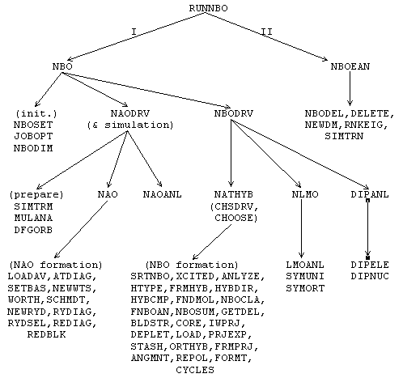

and
and  spin.* This
section provides a brief introduction to NBO algorithms and
nomenclature.
spin.* This
section provides a brief introduction to NBO algorithms and
nomenclature.
(Natural Bond Orbital / Natural Population Analysis / Natural Localized Molecular Orbital Programs)
E. D. Glendening, A. E. Reed,* J. E. Carpenter,** and F. Weinhold
Theoretical Chemistry Institute and Department of Chemistry, University of Wisconsin, Madison, Wisconsin 53706
** Present address: Department of Chemistry, University of California-Irvine, Irvine, California 92717.
| Table of Contents | i | |
| Preface: HOW TO USE THIS MANUAL | iii | |
A. | GENERAL INTRODUCTION AND INSTALLATION | |
| A.1 | INTRODUCTION TO THE NBO PROGRAM | A-1 |
| A.1.1 | What does the NBO Program Do? | A-1 |
| A.1.2 | Structure of the NBO Program | A-3 |
| A.1.3 | Input and Output | A-5 |
| A.1.4 | General Capabilities and Restrictions | A-6 |
| A.1.5 | References and Relationship to Previous Versions | A-7 |
| A.2 | INSTALLING THE NBO PROGRAM | A-10 |
| A.3 | TUTORIAL EXAMPLE FOR METHYLAMINE | A-12 |
| A.3.1 | Running the Example | A-12 |
| A.3.2 | Natural Population Analysis | A-13 |
| A.3.3 | Natural Bond Orbital Analysis | A-16 |
| A.3.4 | NHO Directional Analysis | A-20 |
| A.3.5 | Perturbation Theory Energy Analysis | A-21 |
| A.3.6 | NBO Summary | A-22 |
B. | NBO USER'S GUIDE | |
| B.1 | INTRODUCTION TO THE NBO USER'S GUIDE AND NBO KEYLISTS | B-1 |
| B.2 | THE $NBO KEYLIST | B-2 |
| B.2.1 | Overview of $NBO Keywords | B-2 |
| B.2.2 | Job Control Keywords | B-3 |
| B.2.3 | Job Threshold Keywords | B-4 |
| B.2.4 | Matrix Output Keywords | B-6 |
| B.2.5 | Other Output Control Keywords | B-9 |
| B.2.6 | Print Level Keywords | B-10 |
| B.2.7 | Semi-Documented Additional Keywords | B-11 |
| B.3 | THE $CORE LIST | B-12 |
| B.4 | THE $CHOOSE KEYLIST (DIRECTED NBO SEARCH) | B-14 |
| B.5 | THE $DEL KEYLIST (NBO ENERGETIC ANALYSIS) | B-16 |
| B.5.1 | Introduction to NBO Energetic Analysis | B-16 |
| B.5.2 | The Nine Deletion Types | B-17 |
| B.5.3 | Input for UHF Analysis | B-20 |
| B.6 | NBO KEYLIST ILLUSTRATIONS | B-21 |
| B.6.1 | Introduction | B-21 |
| B.6.2 | NLMO Keyword | B-22 |
| B.6.3 | DIPOLE Keyword | B-24 |
| B.6.4 | Matrix Output Keywords | B-26 |
| B.6.5 | BNDIDX Keyword | B-29 |
| B.6.6 | RESONANCE Keyword: Benzene | B-32 |
| B.6.7 | NOBOND Keyword: Hydrogen Fluoride | B-37 |
| B.6.8 | 3CBOND Keyword: Diborane | B-40 |
| B.6.9 | NBO Directed Search ($CHOOSE Keylist) | B-44 |
| B.6.10 | NBO Energetic Analysis ($DEL Keylist) | B-48 |
| B.6.11 | Open-Shell UHF Output: Methyl Radical | B-52 |
| B.6.12 | Effective Core Potential: Cu2 Dimer | B-56 |
| B.7 | FILE47: INPUT FOR THE GENNBO STAND-ALONE NBO PROGRAM | B-62 |
| B.7.1 | Introduction | B-62 |
| B.7.2 | Format of the FILE47 Input File | B-63 |
| B.7.3 | $GENNBO Keylist | B-65 |
| B.7.4 | $COORD Keylist | B-66 |
| B.7.5 | $BASIS Datalist | B-67 |
| B.7.6 | $CONTRACT Datalist | B-69 |
| B.7.7 | Matrix Datalists | B-71 |
C. | NBO PROGRAMMER'S GUIDE | |
| C.1 | INTRODUCTION | C-1 |
| C.2 | OVERVIEW OF NBO.SRC SOURCE PROGRAM GROUPS | C-2 |
| C.3 | LABELLED COMMON BLOCKS | C-4 |
| C.4 | DIRECT ACCESS FILE AND OTHER I/O | C-14 |
| C.5 | NAO/NBO/NLMO ROUTINES (GROUP I) | C-16 |
| C.5.1 | SR NBO Master Routine | C-16 |
| C.5.2 | Job Initialization Routines | C-18 |
| C.5.3 | NAO Formation Routines | C-19 |
| C.5.4 | NBO/NLMO Formation Routines | C-22 |
| C.6 | ENERGY ANALYSIS ROUTINES (GROUP II) | C-26 |
| C.7 | DIRECT ACCESS FILE (DAF) ROUTINES (GROUP III) | C-27 |
| C.8 | FREE FORMAT INPUT ROUTINES (GROUP IV) | C-29 |
| C.9 | OTHER SYSTEM INDEPENDENT I/O ROUTINES (GROUP V) | C-30 |
| C.10 | GENERAL UTILITY ROUTINES (GROUP VI) | C-33 |
| C.11 | SYSTEM-DEPENDENT DRIVER ROUTINES (GROUP VII) | C-36 |
| C.12 | GENNBO AUXILLIARY ROUTINES | C-37 |
| C.13 | ATTACHING NBO TO A NEW ESS PROGRAM | C-38 |
| APPENDIX: Specific ESS Versions | ||
| INDEX | ||
The NBO manual is divided into three major sections:
Section A ("General Introduction and Installation") contains general introductory and 'one-time' information for the novice user: what the program does, program structure and relationship to driver electronic structure package, initial installation, 'quick start' sample input data, and a brief tutorial on sample output.
Section B ("NBO User's Guide") is for the intermediate user who has an installed program and general familiarity with the standard (default) options of the NBO program. This section documents the list of keywords that can be used to alter the standard NBO job options, with examples of the resulting output. This section is mandatory for users who wish to use the program to its full potential, to 'turn off' or 'turn on' various NBO options for their specialized applications.
Section C ("NBO Programmer's Guide") is for accomplished programmers who are interested in program logic and the detailed layout of the source code. This section describes the relationship of the source code subprograms to the published algorithms for NAO, NBO, and NLMO determination, providing documentation at the level of individual common blocks, functions, and subroutines. This in turn serves as a bridge to the 'micro-documentation' included as comment statements within the source code. Section C also provides guidelines for constructing 'driver' routines to attach the NBO programs to new electronic structure packages.
A.1 INTRODUCTION TO THE NBO PROGRAM
A.1.1 What Does the NBO Program Do?
The NBO program performs the analysis of a many-electron
molecular wavefunction in terms of localized electron-pair
'bonding' units. The program carries out the determination of
natural atomic orbitals (NAOs), natural hybrid orbitals (NHOs),
natural bond orbitals (NBOs), and natural localized molecular
orbitals (NLMOs), and uses these to perform natural population
analysis (NPA), NBO energetic analysis, and other tasks pertaining
to localized analysis of wavefunction properties. The NBO
method makes use of only the first-order
reduced density matrix of the wavefunction, and hence is applicable
to wavefunctions of general mathematical form; in the open-shell
case, the analysis is performed in terms of "different NBOs for
different spins," based on distinct density matrices for
and spin.* This
section provides a brief introduction to NBO algorithms and
nomenclature.
NBO analysis is based on a method for optimally transforming a given wavefunction into localized form, corresponding to the one-center ("lone pair") and two-center ("bond") elements of the chemist's Lewis structure picture. The NBOs are obtained as local block eigenfunctions of the one-electron density matrix, and are hence "natural" in the sense of Löwdin, having optimal convergence properties for describing the electron density. The set of high-occupancy NBOs, each taken doubly occupied, is said to represent the "natural Lewis structure" of the molecule. Delocalization effects appear as weak departures from this idealized localized picture.
The various natural localized sets
can be considered to result
from a sequence of transformations of the input atomic orbital basis set
{
*Note, however,
that some electronic structure packages do not make provision
for calculating the spin density matrices for some types of
open-shell wavefunctions (e.g., MCSCF wavefunctions calculated
by the GUGA formalism in the GAMESS system), so that NBO analysis
cannot be applied in these cases.
**If the wavefunction is not calculated in an atom-centered
basis set, it would be necessary to first compute a wavefunction
for each isolated atom of the molecule (in the actual basis set
and geometry of the molecular calculation), then select the
most highly occupied natural orbitals of each atomic wavefunction
to compose a final set of linearly independent atom-centered basis
functions of the required dimensionality. Since atom-centered
basis functions are the nearly universal choice for molecular
calculations, the current NBO program makes no provision for
this step.
 i},**
_______________
i},**
_______________
 NAOs NHOs NBOs NLMOs
NAOs NHOs NBOs NLMOs
Each natural localized set forms a complete orthonormal set of one-electron functions for expanding the delocalized molecular orbitals (MOs) or forming matrix representations of one-electron operators. The overlap of associated "pre-orthogonal" NAOs (PNAOs), lacking only the interatomic orthogonalization step of the NAO procedure, can be used to estimate the strength of orbital interactions in the usual way.
The optimal condensation of occupancy in the natural
localized orbitals leads to partitioning into high- and
low-occupancy orbital types (reduction in dimensionality
of the orbitals having significant occupancy), as reflected
in the orbital labelling. The small set of most
highly-occupied NAOs, having a close
correspondence with the effective minimal basis set of semi-empirical
quantum chemistry, is referred to as the "natural minimal basis"
(NMB) set. The NMB (core + valence) functions are
distinguished from the weakly occupied "Rydberg"
(extra-valence-shell) functions that complete the span of the NAO space,
but typically make little contribution to molecular properties. Similarly
in the NBO space,
the highly occupied NBOs of the natural Lewis structure
can be distinguished from the "non-Lewis" antibond and Rydberg
orbitals that complete the span of the NBO space. Each pair of valence hybrids
hA, hB in the NHO basis give rise to a bond ( AB) and antibond (*AB)
in the NBO basis,
AB) and antibond (*AB)
in the NBO basis,
AB = cAhA + cBhB
*AB = cBhA - cAhB
The NBO program also makes extensive provision for energetic analysis of NBO interactions, based on the availability of a 1-electron effective energy operator (Fock matrix) for the system. Estimates of energy effects are based on second-order perturbation theory, or on the effect of deleting certain orbitals or matrix elements and recalculating the total energy. NBO energy analysis is dependent on the specific ESS to which the NBO program is attached, as described in the Appendix.
The program is provided in a core set of NBO routines that can be attached to an electronic structure system of the user's choice. In addition, specific 'driver' routines are provided that facilitate the attachment to popular ab initio and semi-empirical packages (GAUSSIAN-8X, GAMESS, HONDO, AMPAC, etc.). These versions are described in individual Appendices.
A.1.2 Structure of the NBO Program
The overall logical structure of the NBO program and its attachment to an electronic structure system (ESS) are illustrated in the block diagram, Fig. 1. This figure illustrates how the ESS and its scratch files (in the upper part of the diagram) communicate through the interface routines RUNNBO, FEAOIN, and DELSCF with the main NBO modules and associated direct access file (in the lower part).
The main NBO program is represented by modules labelled "NBO" and "NBOEAN." These refer to the construction of NBOs (including natural population analysis, construction of NAOs, NLMOs, etc.) and to NBO energy analysis, respectively. Each module consists of subroutines and functions that perform the required operations. These two modules communicate with the direct-access disk file NBODAF (LFN 48, labelled "FILE48" elsewhere in this manual) that is created and maintained by the NBO routines. Details of the NBO and NBOEAN modules, common blocks, and direct-access file are described in the Programmer's Guide, Section C.
The NBO program blocks communicate with the attached ESS through three system-dependent 'driver' subroutines (RUNNBO, FEAOIN, DELSCF). The purpose of these drivers is to load needed information about the wavefunction and various matrices into the FILE48 direct access file and NBO common blocks. Although the ESS is usually thought of as 'driving' the NBO program, from the point of view of the NBO program the ESS is merely a 'device' that provides initial input (e.g., a density matrix and label information) or other feedback (a calculated energy value) upon request. Each such ESS device therefore requires special drivers to make this feedback possible. Versions of the driver subroutines are included for several popular packages. The driver routines are described in more detail in the Programmer's Guide, Section C.
Figure 1: Schematic diagram depicting flow of information between the electronic structure system (ESS) and the NBO program, and the communication lines connecting these programs to the ESS scratch file (called the "dictionary file," "read-write file," etc., in various systems) and the NBO direct access file (NBODAF). Heavier box borders mark the ESS-specific driver routines (RUNNBO, FEAOIN, DELSCF) that directly interface the ESS program. The heavy dashed lines denote calls from the NBO program 'backward' to the ESS program for information needed to carry out its tasks. Otherwise, the sequential flow of program control is generally from top to bottom and from left to right in the diagram.
A.1.3 Input and Output
From the user's point of view, the input to the NBO program attached to an ESS program consists simply of one or more keywords (an NBO keylist) included in the ESS input file. In effect, the NBO program reads these keywords to set various job options, then interrogates the ESS program through the DELSCF and FEAOIN drivers for additional information concerning the wavefunction. The general form of NBO keylists and the specific functions associated with each keyword are detailed in the User's Guide, Section B. The method of including NBO keylists in the input file for each ESS is detailed in the specific Appendix for the ESS.
The following information is passed from the ESS to the NBO program (transparent to the user):
1. The one-electron density matrix D (or density matrices in the open-shell case) in the chosen atomic orbital (AO) basis set;
2. The AO overlap matrix S, and label information identifying the symmetry (angular momentum type) and location (number of the atom to which affixed) for each AO;
3. Atomic number (nuclear charge) of each atom.
Certain additional information is written on the FILE48 direct access file and may be used in response to specific job options, such as the AO Fock matrix F, if energy analysis is requested; the AO dipole matrix M, if dipole moment analysis is requested; or information concerning the mathematical form of the AOs (orbital exponents, contraction coefficients, etc.), if orbital plotting information is requested to be saved as input for a contour plotting program.
The principal output from the NBO program consists of the tables and summaries describing the results of NBO analysis, included in the ESS output file. Sample NBO output is described in Section A.2.4 below. If requested, the NBO program may also write out transformation matrices or other data to disk files. The NBO program also creates or updates two files, the direct-access file (FILE48) and the 'archive' file (FILE47) that can be used to repeat NBO analysis with different options, without running the ESS program to recalculate the wavefunction. Necessary details of these files are given in Section B.7 and the Programmer's Guide, Section C.
A.1.4 General Capabilities and Restrictions
Principal capabilities of the NBO program are:
1. Natural population, natural bond orbital, and natural localized molecular orbital analysis of SCF, MCSCF, CI, and Møller-Plesset wavefunctions (main subroutine: NBO);
2. For RHF closed-shell and UHF wavefunctions only, energetic analysis of the wavefunction in terms of the interactions (Fock matrix elements) between NBOs (main subroutine: NBOEAN);
3. Localized analysis of molecular dipole moment in terms of NLMO and NBO bond moments and their interactions (main subroutine: DIPANL).
A highly transportable subset of standard FORTRAN 77 is employed, with no special compiler extensions of any vendor, and all variable names of six characters or less. Common abbreviations used in naming subprograms, variables, and keywords are:
S = overlap matrix
DM = density matrix (or D)
F = Fock matrix
DI = dipole matrix (or DXYZ, or DX, DY, DZ)
NPA = Natural Population Analysis
NAO = Natural Atomic Orbital
NBO = Natural Bond Orbital
NLMO = Natural Localized Molecular Orbital
PNAO = pre-orthogonal NAO (i.e., omit interatomic orthogonalization)
PNHO, PNBO, PNLMO = pre-orthogonal NHO, etc. (formed from PNAOs)
Most of the NBO storage is allocated dynamically, to conform to the minimum required for the molecular system under study. However, certain NBO common blocks of fixed dimensionality are used for integer storage. These are currently dimensioned to accomodate up to 99 atoms and 500 basis functions. Section C.3 describes how these restrictions can be altered. The program is not set up to handle complex wavefunctions, but can treat any real RHF, ROHF, UHF, MCSCF (including GVB), CI, or Møller-Plesset-type wavefunction (i.e., any form of wavefunction for which the requisite density matrices are available) for ground or excited states of general open- or closed-shell molecules. Effective core potentials ("pseudopotentials") can be handled, including complete neglect of core electrons as assumed in semi-empirical treatments. The atomic orbital basis functions (up to f orbitals in angular symmetry) may be of general Slater-type, contracted Gaussian-type, or other general composition, including the "effective" orthonormal valence-shell AOs of semi-empirical treatments. AO basis functions are assumed to be normalized, but in general non-orthogonal.
A.1.5 References and Relationship to Previous Versions
This program ("version 3.0") is an extension of previous versions of the NBO method incorporated in the semi-empirical program BONDO [F. Weinhold, Quantum Chemistry Program Exchange No. 408 (1980); "version 1.0"] and in a GAUSSIAN-82 implementation [A. E. Reed and F. Weinhold, QCPE Bull. 5, 141 (1985); "version 2.0"], and should be considered to supplant those versions. Version 3.0 also supplants the various specific versions ("the GAMESS version," "the AMPAC version," etc.) that have been informally created and distributed to individual users outside the QCPE framework.
Principal contributors to the development of the NBO methods and programs (1975-1990) are
| T. K. Brunck | A. E. Reed |
| J. P. Foster | J. E. Carpenter |
| A. B. Rives | E. D. Glendening |
| R. B. Weinstock | F. Weinhold |
Natural Bond Orbitals:
J. P. Foster and F. Weinhold, J. Am. Chem. Soc. 102, 7211-7218 (1980).
Natural Atomic Orbitals and Natural Population Analysis:
A. E. Reed and F. Weinhold, J. Chem. Phys. 78, 4066-4073 (1983); A. E. Reed, R. B. Weinstock, and F. Weinhold, J. Chem. Phys. 83, 735-746 (1985).
Natural Localized Molecular Orbitals:
A. E. Reed and F. Weinhold, J. Chem. Phys. 83, 1736-1740 (1985).
Open-Shell NBO:
J. E. Carpenter and F. Weinhold, J. Molec. Struct. (Theochem) 169, 41-62 (1988); J. E. Carpenter, Ph. D. Thesis, University of Wisconsin, Madison, 1987.
Review Articles:
A. E. Reed, L. A. Curtiss, and F. Weinhold, Chem. Rev. 88, 899-926 (1988); F. Weinhold and J. E. Carpenter, in, R. Naaman and Z. Vager (eds.), "The Structure of Small Molecules and Ions," (Plenum, New York, 1988), pp. 227-236.
The principal enhancements of version 3.0 include:
1. Generalized Program Interface. Overall program organization (Fig. 1) has been modified to standardize communication with the main ESS program. This insures that all special ESS "versions" of the NBO program now have consistent options and capabilities (as long as the option is meaningful in the context of the ESS), and enables the program to be offered in a greater number of specialized ESS versions than were previously available.
2. NAO/NPA Summary Table. New tables give improved display of NAOs and natural populations, including the "natural electron configuration" of each atom (i.e., the occupancy and type of NAOs describing the atomic electron configuration of each atom). The new NAO summary tables (Section A.3.2) include an SCF atomic orbital energy (if available), a conventional atomic orbital label (1s, 2s, 2p, etc., in accordance with the labelling in isolated atoms), and a shell designation (Cor = core, Val = valence, or Ryd = Rydberg) to aid characterization of the NAO.
3. NBO Summary Table. A new NBO summary table (Section A.3.6) has been provided to summarize the energetics and delocalization patterns of the principal NBOs. This succinctly combines the most important information from the full NBO table, diagonal NBO Fock matrix elements, and 2nd-order energy analysis.
4. Bond Bending Analysis. The program includes a new analysis of hydrid directionality and bond "bending" (keyword BEND, Section A.3.4).
5. Dipole Moment Analysis. The program includes new optional provision (keyword DIPOLE, Section B.6.3) for analysis of the molecular dipole moment in terms of localized NLMOs and NBOs.
6. Print options. The program offers new structured printing options (Section B.2.4) that give greater convenience and flexibility in controlling printed output, with improved provision for printing matrices or basis transformations involving general NAO, NHO, NBO, NLMO or pre-orthogonal (PNAO, PNHO, PNBO, PNLMO) basis sets.
7. Orbital Contour Info. The program makes optional provision (keyword PLOT, Section B.2.5) for writing out files that can be used by an orbital plotting program (available separately through QCPE) to draw contour diagrams of the NBOs or other natural localized orbitals.
8. Effective Core Potentials. The program now handles effective core potentials (pseudopotentials), or the complete neglect of core levels characteristic of semi-empirical wavefunctions (Section B.6.12).
The program also includes three changes to correct problems of the previous version (which may have affected a small number of users):
9. Unpolarized Cores. NAOs identified as "core" orbitals are now automatically carried over as unhybridized 1-center core NBOs (Section B.3). This has virtually no effect on the form or occupancy of a core NBO, but averts the (rare) problem of unphysical mixing between core and valence lone pairs when the occupancies are 'accidentally' degenerate (usually, both very close to 2.000...) within the numerical machine precision. A warning message is printed when the core occupancy is less than 1.9990, indicating a possible "core polarization" effect of physical significance.
10. Excited State Antibond Labels. The program now directly investigates the nodal structure of an NBO (by examining the overlap matrix in the PNHO basis) before assigning it a label as a "bond" (unstarred) or "antibond" (starred) NBO. In previous versions, these labels were assigned on the basis of the presumed higher occupancy of the in-phase bond combination, which was generally true for ground states, but not for excited states. The program now prints a warning message whenever it encounters the "anomalous" situation of an out-of-phase antibond NBO having higher occupancy than the corresponding in-phase bond NBO, indicative of an excited-state configuration. [WARNING: the overlap test cannot be applied to semi-empirical methods with orthogonal AOs (e.g., AMPAC), so antibond labels for these methods are assigned, as in previous versions, on the basis of occupancy.]
11. Alternative Resonance Structures. The program now institutes a search for alternative Lewis ('resonance') structures when two or more structures may be competitive, and returns the structure of lowest non-Lewis occupancy. This corrects a possible dependence on atomic numbering in cases of strong delocalization.
Despite these changes and extensions, version 3.0 has been designed to be upward compatible with v. 2.0, as nearly as possible. Previous users of NBO 2.0 should find that their jobs run similarly (i.e., most keywords continue to function as in previous versions). Thus, experienced NBO users should find little difficulty in adapting to, and experimenting with, the new capabilities of the program.
A.2 INSTALLING THE NBO PROGRAM
The NBO programs and manual are provided on a distribution tape. The tape contains three files: the TechSet code of this manual (file NBO.MAN), a file containing the core NBO source routines and supporting driver routines (file NBO.SRC), and the Fortran "enabler" program (file ENABLE.FOR).
In overview, the installation procedure involves the following steps (the details of each step being dependent on your operating system):
1. Enabling the NBO routines. Copy the contents of the distribution tape onto your system. Using your system Fortran 77 compiler, compile and link the enabler program to create the ENABLE.EXE executable; for example, the VMS commands to create ENABLE.EXE are
FOR ENABLE
LINK ENABLE
Now, run the ENABLE program (e.g., type "RUN ENABLE" in
a VMS system), and
answer the prompt
NBO program version to enable?
by selecting from the available offerings. Each ESS package is
associated with a 3-letter identifier
("G88" for GAUSSIAN-88, "GMS" for GAMESS,
"AMP" for AMPAC, etc.). The ENABLE program will create
a file XXXNBO.FOR (where 'XXX' is the identifier)
that incorporates the appropriate drivers for
your ESS.
2. Compiling the NBO routines. Using your system Fortran 77 compiler, compile the XXXNBO.FOR file to an object code file (say, XXXNBO.OBJ). [Compiler errors (if any) should be fixed before proceeding. Please notify the authors if you encounter undue difficulties in this step.]
3. Modifying the ESS routines. In general, the ESS source Fortran code must be modified to call the NBO routines near the point where the ESS performs Mulliken Population Analysis or evaluates properties of the final wavefunction. The modification generally consists of inserting a single statement (viz., "CALL RUNNBO") in one subroutine of your ESS system. See the appropriate Appendix of this Manual for detailed information on exactly how to modify the ESS code for your chosen system.
4. Rebuilding the integrated ESS/NBO program. Re-compile your modified ESS programs and link the resulting object file (say, ESS.OBJ) with the XXXNBO.OBJ file to form the final ESS.EXE executable. In general, this step will closely follow the initial installation procedure for your ESS, with the exception that the XXXNBO.OBJ file must be included in the link statement (or deposited in one of the libraries accessed by the linker, etc.).
Note that installation of the NBO programs into your ESS system in no way affects the way your system processes standard input files. The only change involves enabling the reading of NBO keylists (if detected in your input file), performance of the tasks requested in the keylist, and return of control to the parent ESS program in the state in which the NBO call was encountered.
If you are interfacing the NBO programs to a new ESS package (not represented in the driver routines provided with this distribution), see Section C for guidance on how to create drivers for your ESS to provide the necessary information. Alternatively, see Section B.7 for a description of the input file to GENNBO, the stand-alone version of the NBO program.
The TechSet-coded version of this manual, NBO.MAN, can be printed on an HP LaserJet printer ('F' cartridge) with the TECHSET technical typesetting program [ACS Software, American Chemical Society, Marketing Communications Dept., 1155 Sixteenth Street, N.W., Washington, D.C. 20036].
A.3 TUTORIAL EXAMPLE FOR METHYLAMINE
A.3.1 Running the Example
This section provides an introductory 'quick start' tutorial on running a simple NBO job and interpreting the output. The example chosen is that of methylamine (CH3NH2) in Pople-Gordon idealized geometry, treated at the ab initio RHF/3-21G level. This simple split-valence basis set consists of 28 AOs (nine each on C and N, two on each H), extended by 13 AOs beyond the minimal basis level.
Input files to run this job (or its nearest equivalent) with each ESS are given in the Appendix. (The output shown below was created with the GAMESS system.) In most cases, you can modify the standard ESS input file to produce NBO output by simply including the line
$NBO $END
at the end of the file. This is an 'empty' NBO keylist, specifying
that NBO analysis should be carried out at the default level.
The default NBO output produced by this example is shown below, just as it appears in your output file. The start of the NBO section is marked by a standard header and storage info:
*******************************************************************************
N A T U R A L A T O M I C O R B I T A L A N D
N A T U R A L B O N D O R B I T A L A N A L Y S I S
*******************************************************************************
Job title: Methylamine...RHF/3-21G//Pople-Gordon standard geometry
Storage needed: 2505 in NPA, 2569 in NBO ( 750000 available)
Note that all NBO output is formatted to a maximum 80-character
width for convenient display on a computer terminal. The NBO heading
echoes any requested keywords (none for the present default case)
and shows an estimate of the memory requirements
(in double precision words) for the separate
steps of the NBO process, compared
to the total allocated memory available through your ESS
process. Increase the memory allocated to your
ESS process if the estimated NBO requests exceed the available storage.
A.3.2 Natural Population Analysis
The next four NBO output segments summarize the results of natural population analysis (NPA). The first segment is the main NAO table, as shown below:
NATURAL POPULATIONS: Natural atomic orbital occupancies
NAO Atom # lang Type(AO) Occupancy Energy
---------------------------------------------------------
1 C 1 s Cor( 1s) 1.99900 -11.04184
2 C 1 s Val( 2s) 1.09038 -0.28186
3 C 1 s Ryd( 3s) 0.00068 1.95506
4 C 1 px Val( 2p) 0.89085 -0.01645
5 C 1 px Ryd( 3p) 0.00137 0.93125
6 C 1 py Val( 2p) 1.21211 -0.07191
7 C 1 py Ryd( 3p) 0.00068 1.03027
8 C 1 pz Val( 2p) 1.24514 -0.08862
9 C 1 pz Ryd( 3p) 0.00057 1.01801
10 N 2 s Cor( 1s) 1.99953 -15.25950
11 N 2 s Val( 2s) 1.42608 -0.71700
12 N 2 s Ryd( 3s) 0.00016 2.75771
13 N 2 px Val( 2p) 1.28262 -0.18042
14 N 2 px Ryd( 3p) 0.00109 1.57018
15 N 2 py Val( 2p) 1.83295 -0.33858
16 N 2 py Ryd( 3p) 0.00190 1.48447
17 N 2 pz Val( 2p) 1.35214 -0.19175
18 N 2 pz Ryd( 3p) 0.00069 1.59492
19 H 3 s Val( 1s) 0.81453 0.13283
20 H 3 s Ryd( 2s) 0.00177 0.95067
21 H 4 s Val( 1s) 0.78192 0.15354
22 H 4 s Ryd( 2s) 0.00096 0.94521
23 H 5 s Val( 1s) 0.78192 0.15354
24 H 5 s Ryd( 2s) 0.00096 0.94521
25 H 6 s Val( 1s) 0.63879 0.20572
26 H 6 s Ryd( 2s) 0.00122 0.99883
27 H 7 s Val( 1s) 0.63879 0.20572
28 H 7 s Ryd( 2s) 0.00122 0.99883
For each
of the 28 NAO functions, this table lists the atom
to which NAO is attached (in the numbering scheme of the ESS program),
the angular momentum type 'lang' (s, px, etc., in the coordinate
system of the ESS program), the orbital type (whether core, valence, or
Rydberg, and a conventional
hydrogenic-type label), the orbital occupancy (number of
electrons, or 'natural
population' of the orbital), and the orbital energy (in the favored units
of the ESS program, in this case atomic units: 1 a.u. = 627.5
kcal/mol). [For example, NAO 4 (the highest energy C orbital of the
NMB set) is the valence shell 2px orbital on carbon, occupied
by 0.8909 electrons, whereas NAO 5 is a Rydberg
3px orbital with only 0.0014 electrons.] Note that the
occupancies of the Rydberg (Ryd) NAOs are
typically much lower than those of the core (Cor) plus
valence (Val)
NAOs of the natural minimum basis set, reflecting
the dominant role of the NMB orbitals
in describing molecular properties.
The principal quantum numbers for the NAO labels (1s, 2s, 3s, etc.) are assigned on the basis of the energy order if a Fock matrix is available, or on the basis of occupancy otherwise. A message is printed warning of a 'population inversion' if the occupancy and energy ordering do not coincide.
The next segment is an atomic summary showing the natural atomic charges (nuclear charge minus summed natural populations of NAOs on the atom) and total core, valence, and Rydberg populations on each atom:
Summary of Natural Population Analysis:
Natural Population
Natural -----------------------------------------------
Atom # Charge Core Valence Rydberg Total
-----------------------------------------------------------------------
C 1 -0.44079 1.99900 4.43848 0.00331 6.44079
N 2 -0.89715 1.99953 5.89378 0.00384 7.89715
H 3 0.18370 0.00000 0.81453 0.00177 0.81630
H 4 0.21713 0.00000 0.78192 0.00096 0.78287
H 5 0.21713 0.00000 0.78192 0.00096 0.78287
H 6 0.35999 0.00000 0.63879 0.00122 0.64001
H 7 0.35999 0.00000 0.63879 0.00122 0.64001
=======================================================================
* Total * 0.00000 3.99853 13.98820 0.01328 18.00000
This table succinctly describes the molecular
charge distribution in terms of NPA charges. [For example,
the carbon atom of methylamine is assigned a net NPA
charge of -0.441
at this level; note also the slightly less positive charge
on H(3) than on the other two methyl hydrogens: +0.184 vs. +0.217.]
Next follows a summary of the NMB and NRB populations for the composite system, summed over atoms:
Natural Population
--------------------------------------------------------
Core 3.99853 ( 99.9632% of 4)
Valence 13.98820 ( 99.9157% of 14)
Natural Minimal Basis 17.98672 ( 99.9262% of 18)
Natural Rydberg Basis 0.01328 ( 0.0738% of 18)
--------------------------------------------------------
This exhibits the high percentage contribution (typically, > 99%)
of the NMB set to the molecular charge distribution. [In the present
case, for example, the 13 Rydberg orbitals of the
NRB set contribute only 0.07%
of the electron density, whereas the 15 NMB functions account
for 99.93% of the total.]
Finally, the natural populations are summarized as an effective valence electron configuration ("natural electron configuration") for each atom:
Atom # Natural Electron Configuration
----------------------------------------------------------------------------
C 1 [core]2s( 1.09)2p( 3.35)
N 2 [core]2s( 1.43)2p( 4.47)
H 3 1s( 0.81)
H 4 1s( 0.78)
H 5 1s( 0.78)
H 6 1s( 0.64)
H 7 1s( 0.64)
Although the occupancies of the atomic orbitals are non-integer
in the molecular environment, the effective atomic configurations
can be related to idealized atomic states in
'promoted' configurations. [For example, the carbon atom in
the above table is most nearly described by an idealized
1s22s12p3 electron configuration.]
A.3.3 Natural Bond Orbital Analysis
The next segments of the output summarize the results of NBO analysis. The first segment reports on details of the search for an NBO natural Lewis structure:
NATURAL BOND ORBITAL ANALYSIS:
Occupancies Lewis Structure Low High
Occ. ------------------- ----------------- occ occ
Cycle Thresh. Lewis Non-Lewis CR BD 3C LP (L) (NL) Dev
=============================================================================
1(1) 1.90 17.95048 0.04952 2 6 0 1 0 0 0.02
-----------------------------------------------------------------------------
Structure accepted: No low occupancy Lewis orbitals
Normally, there is but one cycle of the NBO search (cf. the
"RESONANCE" keyword, Section B.6.6). The table summarizes
a variety of information for each cycle:
the occupancy threshold for a 'good' pair in the NBO search;
the total populations of Lewis and non-Lewis
NBOs; the number of core (CR), 2-center bond (BD),
3-center bond (3C), and lone pair (LP) NBOs in
the natural Lewis structure; the number of low-occupancy Lewis (L)
and 'high-occupancy' (> 0.1e) non-Lewis (NL) orbitals; and the
maximum deviation ('Dev') of any formal bond order from a
nominal estimate (NAO Wiberg bond index) for the structure. [If
the latter exceeds 0.1, additional NBO searches are initiated
(indicated by the parenthesized number under 'Cycle') for alternative
Lewis structures.] The Lewis
structure is accepted if all orbitals of the formal Lewis structure
exceed the occupancy threshold (default, 1.90 electrons).
Next follows a more detailed breakdown of the Lewis and non-Lewis occupancies into core, valence, and Rydberg shell contributions:
WARNING: 1 low occupancy (<1.9990e) core orbital found on C 1 -------------------------------------------------------- Core 3.99853 ( 99.963% of 4) Valence Lewis 13.95195 ( 99.657% of 14) ================== ============================ Total Lewis 17.95048 ( 99.725% of 18) ----------------------------------------------------- Valence non-Lewis 0.03977 ( 0.221% of 18) Rydberg non-Lewis 0.00975 ( 0.054% of 18) ================== ============================ Total non-Lewis 0.04952 ( 0.275% of 18) --------------------------------------------------------This shows the general quality of the natural Lewis structure description in terms of the percentage of the total electron density (e.g., in the above case, about 99.7%). The table also exhibits the relatively important role of the valence non-Lewis orbitals (i.e., the six valence antibonds, NBOs 23-28) relative to the extra-valence orbitals (the 13 Rydberg NBOs 10-22) in the slight departures from a localized Lewis structure model. (In this case, the table also includes a warning about a carbon core orbital with slightly less than double occupancy.)
Next follows the main listing of NBOs, displaying the form and occupancy of the complete set of NBOs that span the input AO space:
(Occupancy) Bond orbital/ Coefficients/ Hybrids
-------------------------------------------------------------------------------
1. (1.99858) BD ( 1) C 1- N 2
( 40.07%) 0.6330* C 1 s( 21.71%)p 3.61( 78.29%)
-0.0003 -0.4653 -0.0238 -0.8808 -0.0291
-0.0786 -0.0110 0.0000 0.0000
( 59.93%) 0.7742* N 2 s( 30.88%)p 2.24( 69.12%)
-0.0001 -0.5557 0.0011 0.8302 0.0004
0.0443 -0.0098 0.0000 0.0000
2. (1.99860) BD ( 1) C 1- H 3
( 59.71%) 0.7727* C 1 s( 25.78%)p 2.88( 74.22%)
-0.0002 -0.5077 0.0069 0.1928 0.0098
0.8396 -0.0046 0.0000 0.0000
( 40.29%) 0.6347* H 3 s(100.00%)
-1.0000 -0.0030
3. (1.99399) BD ( 1) C 1- H 4
( 61.02%) 0.7812* C 1 s( 26.28%)p 2.80( 73.72%)
0.0001 0.5127 -0.0038 -0.3046 -0.0015
0.3800 -0.0017 0.7070 -0.0103
( 38.98%) 0.6243* H 4 s(100.00%)
1.0000 0.0008
4. (1.99399) BD ( 1) C 1- H 5
( 61.02%) 0.7812* C 1 s( 26.28%)p 2.80( 73.72%)
0.0001 0.5127 -0.0038 -0.3046 -0.0015
0.3800 -0.0017 -0.7070 0.0103
( 38.98%) 0.6243* H 5 s(100.00%)
1.0000 0.0008
5. (1.99442) BD ( 1) N 2- H 6
( 68.12%) 0.8253* N 2 s( 25.62%)p 2.90( 74.38%)
0.0000 0.5062 0.0005 0.3571 0.0171
-0.3405 0.0069 -0.7070 -0.0093
( 31.88%) 0.5646* H 6 s(100.00%)
1.0000 0.0020
6. (1.99442) BD ( 1) N 2- H 7
( 68.12%) 0.8253* N 2 s( 25.62%)p 2.90( 74.38%)
0.0000 0.5062 0.0005 0.3571 0.0171
-0.3405 0.0069 0.7070 0.0093
( 31.88%) 0.5646* H 7 s(100.00%)
1.0000 0.0020
7. (1.99900) CR ( 1) C 1 s(100.00%)p 0.00( 0.00%)
1.0000 -0.0003 0.0000 -0.0002 0.0000
0.0001 0.0000 0.0000 0.0000
8. (1.99953) CR ( 1) N 2 s(100.00%)p 0.00( 0.00%)
1.0000 -0.0001 0.0000 0.0001 0.0000
0.0000 0.0000 0.0000 0.0000
9. (1.97795) LP ( 1) N 2 s( 17.85%)p 4.60( 82.15%)
0.0000 0.4225 0.0002 0.2360 -0.0027
0.8749 -0.0162 0.0000 0.0000
10. (0.00105) RY*( 1) C 1 s( 1.57%)p62.84( 98.43%)
0.0000 -0.0095 0.1248 -0.0305 0.7302
-0.0046 0.6710 0.0000 0.0000
11. (0.00034) RY*( 2) C 1 s( 0.00%)p 1.00(100.00%)
0.0000 0.0000 0.0000 0.0000 0.0000
0.0000 0.0000 0.0146 0.9999
12. (0.00022) RY*( 3) C 1 s( 56.51%)p 0.77( 43.49%)
0.0000 -0.0023 0.7517 -0.0237 0.3710
-0.0094 -0.5447 0.0000 0.0000
13. (0.00002) RY*( 4) C 1 s( 41.87%)p 1.39( 58.13%)
14. (0.00116) RY*( 1) N 2 s( 1.50%)p65.53( 98.50%)
0.0000 -0.0062 0.1224 0.0063 0.0371
0.0197 0.9915 0.0000 0.0000
15. (0.00044) RY*( 2) N 2 s( 0.00%)p 1.00(100.00%)
0.0000 0.0000 0.0000 0.0000 0.0000
0.0000 0.0000 -0.0132 0.9999
16. (0.00038) RY*( 3) N 2 s( 33.38%)p 2.00( 66.62%)
0.0000 0.0133 0.5776 0.0087 -0.8150
-0.0121 -0.0405 0.0000 0.0000
17. (0.00002) RY*( 4) N 2 s( 65.14%)p 0.54( 34.86%)
18. (0.00178) RY*( 1) H 3 s(100.00%)
-0.0030 1.0000
19. (0.00096) RY*( 1) H 4 s(100.00%)
-0.0008 1.0000
20. (0.00096) RY*( 1) H 5 s(100.00%)
-0.0008 1.0000
21. (0.00122) RY*( 1) H 6 s(100.00%)
-0.0020 1.0000
22. (0.00122) RY*( 1) H 7 s(100.00%)
-0.0020 1.0000
23. (0.00016) BD*( 1) C 1- N 2
( 59.93%) 0.7742* C 1 s( 21.71%)p 3.61( 78.29%)
-0.0003 -0.4653 -0.0238 -0.8808 -0.0291
-0.0786 -0.0110 0.0000 0.0000
( 40.07%) -0.6330* N 2 s( 30.88%)p 2.24( 69.12%)
-0.0001 -0.5557 0.0011 0.8302 0.0004
0.0443 -0.0098 0.0000 0.0000
24. (0.01569) BD*( 1) C 1- H 3
( 40.29%) 0.6347* C 1 s( 25.78%)p 2.88( 74.22%)
0.0002 0.5077 -0.0069 -0.1928 -0.0098
-0.8396 0.0046 0.0000 0.0000
( 59.71%) -0.7727* H 3 s(100.00%)
1.0000 0.0030
25. (0.00769) BD*( 1) C 1- H 4
( 38.98%) 0.6243* C 1 s( 26.28%)p 2.80( 73.72%)
-0.0001 -0.5127 0.0038 0.3046 0.0015
-0.3800 0.0017 -0.7070 0.0103
( 61.02%) -0.7812* H 4 s(100.00%)
-1.0000 -0.0008
26. (0.00769) BD*( 1) C 1- H 5
( 38.98%) 0.6243* C 1 s( 26.28%)p 2.80( 73.72%)
-0.0001 -0.5127 0.0038 0.3046 0.0015
-0.3800 0.0017 0.7070 -0.0103
( 61.02%) -0.7812* H 5 s(100.00%)
-1.0000 -0.0008
27. (0.00426) BD*( 1) N 2- H 6
( 31.88%) 0.5646* N 2 s( 25.62%)p 2.90( 74.38%)
0.0000 -0.5062 -0.0005 -0.3571 -0.0171
0.3405 -0.0069 0.7070 0.0093
( 68.12%) -0.8253* H 6 s(100.00%)
-1.0000 -0.0020
28. (0.00426) BD*( 1) N 2- H 7
( 31.88%) 0.5646* N 2 s( 25.62%)p 2.90( 74.38%)
0.0000 -0.5062 -0.0005 -0.3571 -0.0171
0.3405 -0.0069 -0.7070 -0.0093
( 68.12%) -0.8253* H 7 s(100.00%)
-1.0000 -0.0020
For each NBO (1-28), the
first line of printout
shows the occupancy (between 0 and 2.0000 electrons) and unique label
of the NBO. This
label gives the type
("BD" for 2-center bond, "CR" for 1-center core pair, "LP" for 1-center
valence lone pair, "RY*" for 1-center Rydberg, and "BD*" for 2-center
antibond, the unstarred and starred labels corresponding to Lewis
and non-Lewis NBOs, respectively), a serial number (1, 2,... if there is a
single, double,... bond between the pair of atoms), and the atom(s) to
which the NBO is affixed. [For example, the first NBO in the sample
output is the 2-center bond (with 1.99858 electrons)
between carbon (atom 1) and nitrogen (atom 2), the CN
bond.] The next lines summarize
the natural atomic hybrids hA
of which the NBO is composed, giving the
percentage (100|cA|2) of the NBO on each hybrid (in parentheses),
the polarization coefficient cA, the atom label, and a hybrid
label showing the sp composition
(percentage s-character, p-character, etc.) of
each hA. [For example, the CN NBO
is formed from an sp3.61 hybrid (78.3%
p-character) on carbon interacting with an sp2.24 hybrid
(69.1% p-character) on nitrogen,
composition
(percentage s-character, p-character, etc.) of
each hA. [For example, the CN NBO
is formed from an sp3.61 hybrid (78.3%
p-character) on carbon interacting with an sp2.24 hybrid
(69.1% p-character) on nitrogen,
CN = 0.633(sp3.61)C + 0.774(sp2.24)N
corresponding roughly to the qualitative concept
of interacting sp3 hybrids (75% p-character) and the higher
electronegativity (larger polarization coefficient) of N.] Below
each NHO label is the set of
coefficients that specify how the NHO is written explicitly as a linear
combination of NAOs on the atom. The order of NAO coefficients follows
the numbering of the NAO tables. [For example, in the first NBO entry,
the carbon hybrid hC
of the CN bond has largest coefficients for the 2nd
and 4th NAOs, corresponding to the approximate description
 -0.4653(2s)C - 0.8808(2px)C
-0.4653(2s)C - 0.8808(2px)C
in terms of the valence NAOs of the carbon atom.] In
the CH3NH2 example, the NBO search
finds the C-N bond (NBO 1), three C-H bonds (NBOs 2, 3, 4), two N-H
bonds (NBOs 5, 6), N lone pair (NBO 9), and C and N
core pairs (NBOs 7, 8) of the expected Lewis structure. NBOs 10-28
represent the residual non-Lewis NBOs of low occupancy. In this
example, it is also interesting to note the slight asymmetry of the three
CH NBOs, and the slightly higher occupancy
(0.01569 vs. 0.0077
electrons) in the *C1H3 antibond
(NBO 24) lying trans to the
nitrogen lone pair.
A.3.4 NHO Directional Analysis
The next segment of output summarizes the angular properties of the natural hybrid orbitals:
NHO Directionality and "Bond Bending" (deviations from line of nuclear centers)
[Thresholds for printing: angular deviation > 1.0 degree]
hybrid p-character > 25.0%
orbital occupancy > 0.10e
Line of Centers Hybrid 1 Hybrid 2
--------------- ------------------- ------------------
NBO Theta Phi Theta Phi Dev Theta Phi Dev
===============================================================================
1. BD ( 1) C 1- N 2 90.0 5.4 -- -- -- 90.0 182.4 3.0
3. BD ( 1) C 1- H 4 35.3 130.7 34.9 129.0 1.0 -- -- --
4. BD ( 1) C 1- H 5 144.7 130.7 145.1 129.0 1.0 -- -- --
5. BD ( 1) N 2- H 6 144.7 310.7 145.0 318.3 4.4 -- -- --
6. BD ( 1) N 2- H 7 35.3 310.7 35.0 318.3 4.4 -- -- --
9. LP ( 1) N 2 -- -- 90.0 74.8 -- -- -- --
The 'direction' of a hybrid is specified
in terms of the polar ( ) and
azimuthal (
) and
azimuthal ( ) angles (in the ESS coordinate system) of the vector
describing its p-component. The hybrid direction is
compared with the direction of the line of centers between the two
nuclei to determine the 'bending' of the bond, expressed as
the deviation angle ("Dev," in degrees) between these two directions. For
example, in the CH3NH2 case shown above, the nitrogen NHO
of the CN bond (NBO 1) is bent away
from the line of C-N
centers by 3.0°, whereas the carbon NHO is approximately
aligned with the C-N axis (within the 1.0° threshold for
printing). The N-H bonds (NBOs 5, 6) are
bent even further (4.4°). The information in this table
is often useful in anticipating the direction of geometry changes
resulting from geometry optimization (viz., likely reduced pyramidalization
of the -NH2 group to relieve the nitrogen bond 'kinks' found
in the tetrahedral Pople-Gordon geometry).
) angles (in the ESS coordinate system) of the vector
describing its p-component. The hybrid direction is
compared with the direction of the line of centers between the two
nuclei to determine the 'bending' of the bond, expressed as
the deviation angle ("Dev," in degrees) between these two directions. For
example, in the CH3NH2 case shown above, the nitrogen NHO
of the CN bond (NBO 1) is bent away
from the line of C-N
centers by 3.0°, whereas the carbon NHO is approximately
aligned with the C-N axis (within the 1.0° threshold for
printing). The N-H bonds (NBOs 5, 6) are
bent even further (4.4°). The information in this table
is often useful in anticipating the direction of geometry changes
resulting from geometry optimization (viz., likely reduced pyramidalization
of the -NH2 group to relieve the nitrogen bond 'kinks' found
in the tetrahedral Pople-Gordon geometry).
A.3.5 Perturbation Theory Energy Analysis
The next segment summarizes the second-order perturbative estimates of 'donor-acceptor' (bond-antibond) interactions in the NBO basis:
Second Order Perturbation Theory Analysis of Fock Matrix in NBO Basis
Threshold for printing: 0.50 kcal/mol
E(2) E(j)-E(i) F(i,j)
Donor NBO (i) Acceptor NBO (j) kcal/mol a.u. a.u.
===============================================================================
within unit 1
2. BD ( 1) C 1- H 3 / 14. RY*( 1) N 2 0.84 2.18 0.038
3. BD ( 1) C 1- H 4 / 26. BD*( 1) C 1- H 5 0.52 1.39 0.024
3. BD ( 1) C 1- H 4 / 27. BD*( 1) N 2- H 6 3.03 1.37 0.057
4. BD ( 1) C 1- H 5 / 25. BD*( 1) C 1- H 4 0.52 1.39 0.024
4. BD ( 1) C 1- H 5 / 28. BD*( 1) N 2- H 7 3.03 1.37 0.057
5. BD ( 1) N 2- H 6 / 10. RY*( 1) C 1 0.56 1.78 0.028
5. BD ( 1) N 2- H 6 / 25. BD*( 1) C 1- H 4 2.85 1.51 0.059
6. BD ( 1) N 2- H 7 / 10. RY*( 1) C 1 0.56 1.78 0.028
6. BD ( 1) N 2- H 7 / 26. BD*( 1) C 1- H 5 2.85 1.51 0.059
7. CR ( 1) C 1 / 16. RY*( 3) N 2 0.61 13.11 0.080
7. CR ( 1) C 1 / 18. RY*( 1) H 3 1.40 11.99 0.116
7. CR ( 1) C 1 / 19. RY*( 1) H 4 1.55 11.99 0.122
7. CR ( 1) C 1 / 20. RY*( 1) H 5 1.55 11.99 0.122
8. CR ( 1) N 2 / 10. RY*( 1) C 1 1.51 16.23 0.140
8. CR ( 1) N 2 / 12. RY*( 3) C 1 0.84 16.77 0.106
8. CR ( 1) N 2 / 21. RY*( 1) H 6 0.61 16.26 0.089
8. CR ( 1) N 2 / 22. RY*( 1) H 7 0.61 16.26 0.089
9. LP ( 1) N 2 / 24. BD*( 1) C 1- H 3 8.13 1.13 0.086
9. LP ( 1) N 2 / 25. BD*( 1) C 1- H 4 1.46 1.14 0.037
9. LP ( 1) N 2 / 26. BD*( 1) C 1- H 5 1.46 1.14 0.037
This is carried out by examining all possible
interactions between
'filled' (donor) Lewis-type NBOs and 'empty' (acceptor) non-Lewis
NBOs, and estimating their energetic importance by 2nd-order perturbation
theory. Since these interactions lead to loss of occupancy from the
localized NBOs of the idealized Lewis structure into
the empty non-Lewis orbitals (and thus, to departures from the
idealized Lewis structure description), they are referred to
as 'delocalization' corrections to the zeroth-order natural Lewis
structure. For each donor NBO (i) and acceptor NBO (j),
the stabilization energy E(2) associated with delocalization
("2e-stabilization") i j is estimated as
 Eij = qi (F(i,j)2)/(
Eij = qi (F(i,j)2)/( j - i)
j - i)
where qi is the donor orbital occupancy,
i, j are diagonal elements (orbital energies)
and F(i,j) is the off-diagonal NBO Fock matrix element. [In the example
above, the nN *CH interaction between the
nitrogen lone pair (NBO 8) and the antiperiplanar C1-H3 antibond
(NBO 24) is seen to give the strongest
stabilization, 8.13 kcal/mol.] As the heading
indicates, entries are included in this table only when the interaction
energy exceeds a default threshold of 0.5 kcal/mol.
A.3.6 NBO Summary
Next appears a condensed summary of the principal NBOs, showing the occupancy, orbital energy, and the qualitative pattern of delocalization interactions associated with each:
Natural Bond Orbitals (Summary):
Principal Delocalizations
NBO Occupancy Energy (geminal,vicinal,remote)
===============================================================================
Molecular unit 1 (CH5N)
1. BD ( 1) C 1- N 2 1.99858 -0.89908
2. BD ( 1) C 1- H 3 1.99860 -0.69181 14(v)
3. BD ( 1) C 1- H 4 1.99399 -0.68892 27(v),26(g)
4. BD ( 1) C 1- H 5 1.99399 -0.68892 28(v),25(g)
5. BD ( 1) N 2- H 6 1.99442 -0.80951 25(v),10(v)
6. BD ( 1) N 2- H 7 1.99442 -0.80951 26(v),10(v)
7. CR ( 1) C 1 1.99900 -11.04131 19(v),20(v),18(v),16(v)
8. CR ( 1) N 2 1.99953 -15.25927 10(v),12(v),21(v),22(v)
9. LP ( 1) N 2 1.97795 -0.44592 24(v),25(v),26(v)
10. RY*( 1) C 1 0.00105 0.97105
11. RY*( 2) C 1 0.00034 1.02120
12. RY*( 3) C 1 0.00022 1.51414
13. RY*( 4) C 1 0.00002 1.42223
14. RY*( 1) N 2 0.00116 1.48790
15. RY*( 2) N 2 0.00044 1.59323
16. RY*( 3) N 2 0.00038 2.06475
17. RY*( 4) N 2 0.00002 2.25932
18. RY*( 1) H 3 0.00178 0.94860
19. RY*( 1) H 4 0.00096 0.94464
20. RY*( 1) H 5 0.00096 0.94464
21. RY*( 1) H 6 0.00122 0.99735
22. RY*( 1) H 7 0.00122 0.99735
23. BD*( 1) C 1- N 2 0.00016 0.57000
24. BD*( 1) C 1- H 3 0.01569 0.68735
25. BD*( 1) C 1- H 4 0.00769 0.69640
26. BD*( 1) C 1- H 5 0.00769 0.69640
27. BD*( 1) N 2- H 6 0.00426 0.68086
28. BD*( 1) N 2- H 7 0.00426 0.68086
-------------------------------
Total Lewis 17.95048 ( 99.7249%)
Valence non-Lewis 0.03977 ( 0.2209%)
Rydberg non-Lewis 0.00975 ( 0.0542%)
-------------------------------
Total unit 1 18.00000 (100.0000%)
Charge unit 1 0.00000
This table allows one to quickly identify the principal delocalizing
acceptor orbitals associated with each donor NBO, and their
topological relationship to this NBO, i.e., whether attached to the same
atom (geminal, "g"), to an adjacent bonded atom (vicinal, "v"), or
to a more remote ("r") site. These acceptor NBOs will generally
correspond to the principal 'delocalization tails' of the NLMO
associated with the parent donor NBO. [For example, in the table above,
the nitrogen lone pair (NBO 9) is seen to be the lowest-occupancy
(1.97795 electrons) and highest-energy
(-0.44592 a.u.) Lewis NBO, and to
be primarily
delocalized into antibonds 24, 25, 26 (the vicinal *CH
NBOs). The summary at the bottom of the table shows that the
Lewis NBOs 1-9 describe about 99.7% of the total electron density,
with the remaining non-Lewis density found primarily in the
valence-shell antibonds (particularly, NBO 24).]
B.1 INTRODUCTION TO THE NBO USER'S GUIDE AND NBO KEYLISTS
Section B constitutes the general user's guide to the NBO program. It assumes that the user has an installed electronic structure system (ESS) with attached NBO program, a general idea of what the NBO method is about, and some acquaintance with standard NBO terminology and output data. If you are completely inexperienced in these areas, read Section A (General Introduction and Installation) for the necessary background to this Section.
The User's Guide describes how to use the NBO program by modifying your input file to the ESS program to get some NBO output. The modification consists of adding a list of keywords in a prescribed keylist format. Four distinct keylist ($KEY) types are recognized ($NBO, $CORE, $CHOOSE, and $DEL), and these will be described in turn in Sections B.2-B.5. Some of the details of inserting NBO keylists into the input file depend on the details of your ESS method, and are described in the appropriate Appendix for the ESS. However, the general form of NBO keylists and the meaning and function of each keyword are identical for all versions (insofar as the option is meaningful for the ESS), and are described herein.
The four keylist types have common rules of syntax: Keylist delimiters are identified by a "$" prefix. Each keylist begins with the parent keylist name (e.g., "$NBO"), followed by any number of keywords, and ended with the word "$END"; for example,
$NBO keyword1 keyword2 . . . $END !comment
(The allowed keyword entries for each type of keylist are described
in Sections B.2-B.5.) The keylist is "free format," with keywords
separated by commas or any number of spaces. An NBO option is
activated by simply including its keyword in the appropriate keylist. The
order of keywords in the principal $NBO keylist
does not matter, but multiple keylists must be given
in the order (1) $NBO, (2) $CORE, (3) $CHOOSE, (4) $DEL of presentation
in Sections B.2-B.5. Keywords may be typed in upper or lower case,
and will be echoed near the top of the NBO output. A $KEY list can
be continued to any number of lines, but all the entries of a $KEY list must
appear in a distinct set of lines, starting with the $KEY name on the
first line and ending with the closing $END on the last line (i.e.,
no two $KEY lists should share parts of the same line). As the
above example
indicates, any line in the keylist input may terminate with an exclamation
point (!) followed by 'comment' of your choice; the "!" is
considered to terminate
the line, and the trailing 'comment' is ignored by the program.
B.2 THE $NBO KEYLIST
B.2.1 Overview of $NBO keywords
The $NBO keylist is the principal means of specifying NBO job options and controlling output, and must precede any other keylist ($CORE, $CHOOSE, or $DEL) in your input file. The allowed keywords that can appear in a $NBO keylist are grouped as follows:
Job Control Keywords:
| NPA | NBOSUM | NOBOND | SKIPBO |
| NBO | RESONANCE | 3CBOND | NLMO |
| BEND(=ang,pct,occ) |
| E2PERT(=val) |
| DIPOLE(=val) |
Matrix Output Keywords:
| AONAO | NAONHO | NHONBO | NBONLMO | NLMOMO |
| AONHO | NAONBO | NHONLMO | NBOMO | |
| AONBO | NAONLMO | NHOMO | ||
| AONLMO | NAOMO | |||
| AOMO | ||||
| AOPNAO | AOPNHO | AOPNBO | AOPNLMO | |
| DMAO | FAO | DIAO | SAO | |
| DMNAO | FNAO | DINAO | SPNAO | |
| DMNHO | FNHO | DINHO | SPNHO | |
| DMNBO | FNBO | DINBO | SPNBO | |
| DMNLMO | FNLMO | DINLMO | SPNLMO |
Other Output Control Keywords:
| LFNPR | DETAIL | BNDIDX | AOINFO |
| PLOT | ARCHIVE | NBODAF |
Print Level Control: PRINT=n
Keywords are first listed and described according to these formal groupings in Sections B.2.2-B.2.6. Section B.6 illustrates the effect of commonly used $NBO keywords (as well as other $KEY lists) on the successive stages of NAO/NBO/NLMO transformation and subsequent energy or dipole analysis, with sample output for these keyword options.
Some keywords of the $NBO keylist require (or allow) numerical values or other parameters to specify their exact function. In this case, the numerical value or parameter must immediately follow the keyword after an equal sign (=) or any number of blank spaces. Examples:
E2PERT=2.5 LFNPR 16 NBOMO=W25
(The equal sign is recommended, and will be used in the remaining
examples.)
[ Although the general user's interaction with the NBO programs is usually through the documented keywords of Sections B.2.2-B.2.6, some additional 'semi-documented' keywords are listed in Section B.2.7 which may be of interest to the specialist.]
B.2.2 Job Control Keywords
The keywords in this group activate or deactivate basic tasks to be performed by the NBO programs, or change the way the NBO search is conducted. Each keyword is described in terms of the option it activates (together with an indication of where the option is useful):
KEYWORD OPTION DESCRIPTION
NPA Request Natural Population Analysis and printing of NPA summary tables (Section A.3.2). This keyword also activates calculation of NAOs, except for semi-empirical ESS methods.
NBO Request calculation of NBOs and printing of the main NBO table (Section A.3.3).
NBOSUM Request printing of the NBO summary table (Section A.3.6). This combines elements of the NBO table and 2nd-order perturbation theory analysis table (see below) in a convenient form for recognizing the principal delocalization patterns.
RESONANCE Request search for highly delocalized structures (Section B.6.6). The NBO search normally aborts when one or more Lewis NBOs has less than the default occupancy threshold of 1.90 electrons for a 'good' electron pair. When the RESONANCE keyword is activated, this threshold is successively lowered in 0.10 decrements to 1.50, and the NBO search repeated to find the best Lewis structure within each occupancy threshold. The program returns with the best overall Lewis structure (lowest total non-Lewis occupancy) found in these searches. (Useful for benzene and other highly delocalized molecules.)
NOBOND Request that no bonds (2-center NBOs) are to be formed in the NBO procedure (Section B.6.7). The resulting NBOs will then simply be 1-center atomic hybrids. (Useful for highly ionic species.)
3CBOND Request search for 3-center bonds (Section B.6.8). The normal default is to search for only 1- and 2-center NBOs. (Useful for diborane and other electron-deficient 'bridged' species.)
SKIPBO Skip the computation of NBOs, i.e., only determine NAOs and perform natural population analysis. (Useful when only NPA is desired.)
NLMO Compute and print out the summary table of Natural Localized Molecular Orbitals (Section B.6.2). NLMOs are similar to Boys or Edmiston-Ruedenberg LMOs, but more efficiently calculated. (Useful for 'semi-localized' description of an SCF or correlated wavefunction.) Activated automatically by all keywords that pertain to NLMOs (e.g., AONLMO, SPNLMO, DIPOLE).
Note that the SKIPBO keyword has higher precedence than other keywords in this list, so that keywords with which it is implicitly in conflict (e.g., NBO, 3CBOND, NLMO) will be ignored if SKIPBO is included in the $NBO keylist.
B.2.3 Job Threshold Keywords
The keywords in this group also activate new tasks to be performed by the NBO program, but these keywords may be modified by one or more parameters (thresholds) that control the precise action to be taken. (In each case the keywords may also be used without parameters, accepting the default values [in brackets].)
KEYWORD parameter(s) OPTION DESCRIPTION
BEND ang, pct, occ Request the NHO Directional Analysis table (Section A.3.4). The three parameters [and default values] have the following significance:
= threshold angular deviation for printing
pct [25] = threshold percentage p-character for printing
occ [0.1] = threshold NBO occupancy for printing
Parameter values may be separated by a space or a comma.
Example:
BEND=2,10,1.9This example specifies that the bond-bending table should only include entries for angular deviations of at least 2° (ang), hybrids of at least 10% p-character (pct), and NBOs of occupancy at least 1.9 electrons (occ).
E2PERT eval Request the Perturbation Theory Energy Analysis table (Section A.3.5), where
eval [0.5] = threshold energy (in kcal/mol) for printing
Entries will be printed for NBO donor-acceptor interaction energies that exceed the 'eval' threshold.
Example:
E2PERT=5.0This example would print only interactions of at least 5 kcal/mol (i.e., only the single entry for the 8.13 kcal/mol nN
*CH interaction in the output
of Section A.3.5).
DIPOLE dval Request the Molecular Dipole Moment Analysis table (Section B.6.3), where
dval [0.02] = threshold dipole moment (Debye) for printing
The program will carry out a decomposition of the total molecular dipole moment in terms of localized NLMO and NBO contributions, including all terms whose contribution (in vector norm) exceeds the 'dval' threshold.
Example:
DIPOLE=0.1This example would print out dipole contributions of all NBOs (and their delocalization interactions) of magnitude
 0.1 D.
0.1 D.
Both the BEND and E2PERT keywords are activated by default at the standard PRINT level option (see Section B.2.6); to get an example of dipole moment analysis, include the keylist
$NBO DIPOLE $END
in your input file. Note that the DIPOLE keyword leads to an
analysis in terms of both NBOs and NLMOs, so that the NLMO keyword
(Section B.2.2) is automatically activated in this case.
B.2.4 Matrix Output Keywords
The keywords in this group activate the printing of various matrices to the output file, or their writing to (or reading from) external disk files. The large number of keywords in this group provide great flexibility in printing out the details of the successive transformations,
(PNAOs) NAOs NHOs NBOs NLMOs canonical MOs
or the matrices of various operators in the natural localized basis sets. This ordered sequence of transformations forms the basis for naming the keywords.
Keyword Names
The keyword for printing the matrix for a particular basis
transformation, IN OUT, is constructed from the
corresponding acronymns
for the two sets in the generic form "INOUT". For example,
the transformation AO NBO is keyed as "AONBO",
while that from NBOs to
NLMOs is correspondingly "NBONLMO". The transformations are
always specified in the ordered sequence shown above (i.e., "AONBO"
is allowed, but "NBOAO" is an unrecognized 'backward'
keyword). Keywords are recognized for all possible transformations
from the input AOs to other sets
(NAO, NHO, NBO, NLMO, MO, or the pre-orthogonal PNAO, PNHO, PNBO,
PNLMO sets) in the
overall sequence leading to canonical MOs, i.e.,
AO basis: AONAO AONHO AONBO AONLMO AOMO AOPNAO AOPNHO AOPNBO AOPNLMO
and from each of the orthonormal natural localized sets to sets lying to the right in the sequence, i.e.,
NAONHO NAONBO NAONLMO NAOMO
NHONBO NHONLMO NHOMO
NBONLMO NBOMO
NLMOMO
The matrix TIN,OUT for a specified IN OUT transform has
rows labelled by the IN set and columns labelled by the OUT set.
One can also print out the matrix representations of the Fock matrix (F), density matrix (DM), or dipole moment matrix (DI) in the input AO set or any of the natural localized sets (NAO, NHO, NBO, or NLMO). The corresponding keyword is constructed by combining the abbreviation (M) for the operator with that for the set (SET) in the generic form "MSET". For example, to print the Fock matrix (F) in the NBO set, use the keyword "FNBO", or to print the dipole matrix in the NLMO basis, use "DINLMO". (For the dipole matrix keywords, all three vector components will be printed.) One can also print out elements of the overlap matrix (S) in the input AO basis or any of the 'pre-orthogonal' sets (PNAO, PNHO, PNBO, or PNLMO), using, e.g., "SPNAO" for the overlap matrix in the PNAO basis. The complete set of allowed keywords for operator matrices is:
FAO FNAO FNHO FNBO FNLMO
DMAO DMNAO DMNHO DMNBO DMNLMO
DIAO DINAO DINHO DINBO DINLMO
SAO SPNAO SPNHO SPNBO SPNLMO
Other desired transformations can be readily obtained from the keyword transformations by matrix multiplication.
Keyword Parameters
Each generic matrix keyword ("MATKEY") can include
a parameter that specifies the output operation to
be performed on the matrix. The allowed MATKEY parameters
are of two types (three for AONAO, NAONBO; see below):
MATKEY=P[c] (print out the matrix in the standard output file, 'c' columns)
MATKEY=W[n] (write out the matrix to disk file n)
The first (P[c]) parameter is used to control output to the standard output file. When the MATKEY keyword is inserted in the $NBO keylist with no parameters, the matrix is by default printed (in its entirety) in the standard output file. Thus, "MATKEY=P" would be equivalent to "MATKEY", with no parameters. The complete 'P[c]' form of the print parameter serves to truncate the printed matrix output to a specified number of columns [c]. For example, to print out only the first 16 columns of a matrix, use the form
MATKEY=P16 (print 16 columns)
For certain matrices, one can also restrict
printing to only the valence (VAL) or
Lewis (LEW) columns with modified '[c]'
specifiers. For the transformations
to MOs, use the form
MATKEY=PVAL (print core + valence MO columns only)
where "MATKEY" is AOMO, NAOMO, NHOMO, NBOMO, or NLMOMO (only). This
will print out only the occupied MOs
and the lowest few unoccupied MOs, e.g., the six lowest virtual MOs of
the methylamine example (Section A.3), though
not necessarily those with predominant valence character. Similarly,
for the transformations to NBOs or NLMOs, use the form
MATKEY=PLEW (print Lewis orbital columns only)
where "MATKEY" is AONBO, NHONBO, NAONBO, AONLMO, NAONLMO,
NHONLMO, NBONLMO (or AOMO, NAOMO, NHOMO, NBOMO, NLMOMO). This
prints out the Lewis NBOs or occupied MOs only, e.g., only the nine
occupied NBOs or MOs of the methylamine example. Judicious use of
these print parameters keeps printed
output within reasonable bounds
in calculations with large basis sets.
The second type of MATKEY parameter (W[n]) is used to write the matrix (in its entirety) to a specified disk file [n]. By default, each keyword transformation matrix is associated with a particular logical file number (LFN) in the range 31-49, as shown in the table below:
| default | default | default | |||
| matrix | LFN | matrix | LFN | matrix | LFN |
| _ | _ | _ | |||
| AONAO | 33 | NHONBO | 49 | DMNHO | 49 |
| AONHO | 35 | NHONLMO | 49 | DMNBO | 49 |
| AONBO | 37 | NHOMO | 49 | DMNLMO | 49 |
| AONLMO | 39 | NBONLMO | 49 | DIAO | 49 |
| AOMO | 40 | NBOMO | 49 | DINAO | 49 |
| AOPNAO | 32 | NLMOMO | 49 | DINHO | 49 |
| AOPNHO | 34 | FAO | 49 | DINBO | 49 |
| AOPNBO | 36 | FNAO | 49 | DINLMO | 49 |
| AOPNLMO | 38 | FNHO | 49 | SAO | 49 |
| NAONHO | 49 | FNBO | 49 | SPNAO | 49 |
| NAONBO | 42 | FNLMO | 49 | SPNHO | 49 |
| NAONLMO | 49 | DMAO | 41 | SPNBO | 49 |
| NAOMO | 49 | DMNAO | 49 | SPNLMO | 49 |
AONBO=W22
would write out the AO NBO transformation to LFN = 22 (rather
than the default LFN = 37).
The format of the printed output under the print 'P' parameter differs from that written to an external file under the 'W' parameter. The 'P' output (intended for a human reader) includes an identifying label for each row, and gives the numerical entries to somewhat lesser precision (F8.4 format) than the corresponding 'W' output (F15.9 format), which is usually intended as input to another program. Use the "MATKEY=W6" keyword to route the more precise 'W' form of the matrix to the standard output file, LFN 6.
For the AONAO, NAONBO matrices (only), one can also include a read parameter (R),
AONAO=Rn
NAONBO=Rn
which causes the matrix to be input to the
program from LFN n. This
parameter has the
effect of 'freezing' orbitals to a
set prescribed in the input file (thus
bypassing the NBO optimization of these orbitals for the molecular
system). For example, the keyword "NAONBO=R44" would have the
effect of freezing the NAO NBO
transformation coefficients to the form specified in LFN 44 (perhaps
written with the "NAONBO=W44" keyword in a previous calculation
on isolated molecules, and now to be used in a calculation on a
molecular complex). Similarly, the keyword "AONAO=R45" could
be used to force the analysis of an excited state to be
carried out in terms of the NAOs of the ground state (previously
written out with the "AONAO=W45"
keyword).
B.2.5 Other Output Control Keywords
The keywords in this group also help to control the I/O produced by a specified set of job options, and thus supplement the keywords of the previous section. However, the keywords of this section 'steer' the flow of information that is routinely produced by the NBO program (or can be passed through from the ESS program) without materially affecting the actual jobs performed by the NBO program. The options associated with each keyword are tabulated below:
KEYWORD OPTION DESCRIPTION
LFNPR=n Set the logical file number (LFN) for NBO program output. The default LFN is n = 6, the usual LFN for output from the ESS program. This option can be used to steer the NBO section of the job output to a desired file. Example:
LFNPR=25 (re-direct NBO output to LFN 25)
BNDIDX Request print-out of the NAO-Wiberg Bond Index array and related valency indices (Section B.6.5). The elements of this array are the sums of squares of off-diagonal density matrix elements between pairs of atoms in the NAO basis, and are the NAO counterpart of the Wiberg bond index [K. Wiberg, Tetrahedron 24, 1083-1096 (1968)]. (This bond index is routinely used to 'screen' atom pairs for possible bonding in the NBO search, but the values are not printed unless the BNDIDX keyword is activated.)
AOINFO Request writing of information concerning the AO basis set (geometrical positions, orbital exponents, contraction coefficients, etc.) to an external file, LFN 31. This is a portion of the information needed by the ORBPLOT orbital contour plotting programs (cf. "PLOT" keyword below.)
PLOT Request writing of all files required by orbital contour plotting programs ORBPLOT. This activates the AOINFO keyword, as well as all the necessary matrix output keywords (AONBO=W37, etc.) that could be required for ORBPLOT.
ARCHIVE=n Request writing the FILE47 'archive' file to external disk file LFN = n (or, if "=n" is not present, to the default LFN = 47). This file can serve as the input file to run the GENNBO program in stand-alone mode, to repeat the NBO analysis (possibly with new job options) without repeating the calculation of the wavefunction (Section B.7).
NBODAF=n Request writing the NBO direct access file (DAF) to external disk file LFN = n (or, if "=n" is not present, to the default LFN =48).
B.2.6 Print Level Keywords
The keyword "PRINT=n" (n = 0-4) can be used to give convenient, flexible control of all NBO output in terms of a specified print level n. This keyword activates groups of keywords in a heirarchical manner, and thus incrementally increases the volume of output, ranging from no NBO output (PRINT=0) to a considerable volume of detail (PRINT=4). The keywords associated with each print level are tabulated below [default value, PRINT=2]:
| print level | additional output or activated keywords |
| _ | _ |
| 0 | suppress all output from the NBO program |
| 1 | activate NPA and NBO keywords |
| [2] | activate BEND, NBOSUM, and E2PERT keywords |
| 3 | activate NLMO, DIPOLE, and BNDIDX keywords |
| 4 | activate all(!) keywords |
When additional keywords are included with a "PRINT=n" keyword in the $NBO keylist, the NBO output includes the additional keyword items as well as those implied by the print level. This can be used to tailor the NBO output to virtually any selection of output items. For example, the keylist
$NBO PRINT=2 NLMO FNBO=P NAOMO=P11 $END
would add to the standard methylamine output file of Section A.3
an NLMO summary table, the Fock matrix in
the NBO basis, and the transformation coefficients
for the first 11 molecular orbitals in terms of NAOs. Similarly,
to produce the NPA listing only, one could use
$NBO PRINT=1 SKIPBO $END
or
$NBO PRINT=0 NPA $END
[There is actually a slight difference between
the two examples: The
NBOs are determined by default (once the $NBO keylist is encountered),
even if all output is suppressed with PRINT=0; in the first example,
the keyword SKIPBO bypasses NBO determination, whereas in
the second example the NBOs are still determined 'in background.']
B.2.7 Semi-Documented Additional Keywords
Some additional keywords are listed below that may of use to specialists or program developers:
KEYWORD OPTION DESCRIPTION
THRESH=val Set the threshold of orbital occupancy desired for bond orbital selection. If this is not included, the default occupancy [1.90] will be used (or values decreasing from 1.90 to 1.50 by 0.10 steps, if the RESONANCE keyword is included).
PRJTHR=val Set the projection threshold [default 0.20] to determine if a 'new' hybrid orbital has too high overlap with hybrids previously found.
MULAT Print total gross Mulliken populations by atom.
MULORB Print gross Mulliken populations, by orbital and atom.
RPNAO Revises PAO to PNAO transformation matrix by post-multiplying by TRyd and Tred [see the NPA paper: A. E. Reed, R. B. Weinstock, and F. Weinhold, J. Chem. Phys. 83, 735-746 (1985)].
PAOPNAO Input or output of pure AO (PAO) to pre-NAO (PNAO) transformation. The PAOs are AOs of pure angular momentum symmetry (rather than cartesian gaussians). This keyword can be used with read ('R'), write ('W', default LFN 43) or print ('P') parameters.
BOAO Print out the bond-order matrix (Fock-Dirac density matrix) in the basis set of input AOs. This keyword can be used with write ('W', default LFN 49) or print ('P') parameters.
B.3 THE $CORE LIST
In the Lewis structure picture, the inner 'core' electron pairs are pictured as occupying orbitals having essentially isolated atomic orbital character. In NBO parlance, these core orbitals correspond to 1-center unhybridized NAOs of near-maximum occupancy, which are isolated on each center before the main NBO search begins for localized valence electron pairs. A warning message is printed if the occupancy of a presumed closed-shell core NBO falls below 1.9990 electrons (or 0.9990 in the open-shell case), indicative of a possible core-valence mixing effect of physical significance.
[In previous versions of the NBO program, core orbitals having the expected pure atomic character are found in essentially all cases, except where an 'accidental' degeneracy in occupancy of core and valence lone pairs leads to undesirable core-valence mixing; the present version explicitly isolates core pairs as unhybridized NAOs prior to the main NBO search to prevent this unphysical effect.]
The NBO program contains a table giving the nominal number of core orbitals to be isolated on each type of atom (e.g., 1s for first-row atoms Li-Ne, 1s, 2s, 2p for second-row atoms Na-Ar, etc.). At times, however, it is interesting to examine the effect of allowing core orbitals to mix into the bonding hybrids, or to hybridize (polarize) among themselves. This can be accomplished by including a $CORE keylist to specify the number of core orbitals to be isolated on each atomic center, thus modifying the nominal core table. Unlike other NBO keylists, the $CORE list includes only integers (rather than keywords) to specify the core modifications, but the rules are otherwise similar to those for other keylists. The $CORE list (if included) must follow the $NBO keylist and precede the $CHOOSE or $DEL keylists.
The format of the $CORE modification list is:
first line: The keyword "$CORE"
next lines: Pairs of integers, one pair for each center. The first integer indicates the atomic center (in the numbering of the main ESS) and the second is the number of core orbitals to be isolated on that atom. Note that atomic centers not included in the CORE list are assigned default cores.
last line: The keyword "$END", to indicate the end of core input.
The entire list may also be condensed to a single line, but the word "$CORE" must occur as the first word of the line and "$END" as the last word; that is, the core modification keylist cannot continue on a line that contains other keylist information.
The core orbitals are isolated by occupancy, the most occupied NAOs
being first selected, and full subshells are isolated at a time. Thus,
for example, to select the five orbitals of the
n = 1 and n = 2 shells
as core orbitals, it would make no difference
to select "3" or "4" (instead
of "5"), since all three of these
choices would specify a core containing a 1s, 2s, and
all three 2p orbitals. The $CORE modification list
is read only once, and applies to both
and spin manifolds in an open-shell calculation.
An example, appropriate for Ni(1)-C(2)-O(3) with the indicated numbering of atoms, is shown below:
$CORE
1 5
$END
This would direct the NBO program to isolate only 5 core orbitals
on Nickel (atom 1), rather than the nominal 9 core orbitals. In
other words, only 1s, 2s, and 2p orbitals will be considered
as core orbitals in the search for NBOs of NiCO, allowing the 3s
and 3p orbitals to mix with valence NAOs in bond formation. Since
the carbon and oxygen atoms were not included in the modification list,
the nominal set of core orbitals (1s only) is isolated on each
of these atoms.
[The alternative example
$CORE 1 0 2 0 3 0 $END
(no cores) would allow all NAOs to be included in the NBO search;
this would be equivalent to the default treatment in
the earlier version of the program (see Section A.1.5).]
B.4 THE $CHOOSE KEYLIST (DIRECTED NBO SEARCH)
A $CHOOSE keylist requests that the NBO search be directed to find a particular Lewis structure ('resonance structure') chosen by the user. (This is useful for testing the accuracy of alternative resonance structure representations of the wavefunction, relative to the optimal Lewis structure returned in a free NBO search.) In the $CHOOSE list, a resonance structure is specified by indicating where lone pairs and bonds (including multiple bonds) are to be found in the molecule. In some cases, the user may wish to specify only the location of bonds, letting the NBO algorithm seek the best location for lone pairs, but it is usually safest to completely specify the resonance structure, both lone pairs and bonds.
The format of the $CHOOSE list is:
first line: The keyword "$CHOOSE"
next line: The keyword "ALPHA" (only for open-shell wavefunction)
next lines: If one-center ('lone') NBOs are to be searched for, type the keyword "LONE" followed by a list of pairs of numbers, the first number of each pair being the atomic center and the second the number of valence lone pairs on that atom. Terminate the list with "END". (Note that only the occupied valence lone pairs should be entered, since the number of core orbitals on each center is presumed known.)
If two-center ('bond') NBOs are to be searched for, type the keyword "BOND", followed by the list of bond specifiers, and terminated by "END". Each bond specifier is one of the letters
"S" single bond
"D" double bond
"T" triple bond
"Q" quadruple bond
followed by the two atomic centers of the bond (e.g., "D 9 16" for a double bond between atoms 9 and 16).
If three-center NBOs are to be searched for, type the keyword "3CBOND", followed by the list of 3-c bond specifiers, and terminated by "END". Each 3-c bond specifier is again one of the letters "S" (single), "D" (double), "T" (triple), or "Q" (quadruple), followed by three integers for the three atomic centers (e.g., "S 4 8 10" for a single three-center bond 4-8-10). (Note that the 3CBOND keyword of the $NBO keylist is implicitly activated if 3-c bonds are included in a $CHOOSE list.)
next line: The word "END" to signal the end of the spin list.
next line: The keyword "BETA" (for open-shell wavefunctions)
next lines: The input for spin, same format as above. The overall $CHOOSE
list should always end with the "$END" keyword.
Two examples will serve to illustrate the $CHOOSE format (each is rather artificial, inasmuch as the specified $CHOOSE structure corresponds to the 'normal' structure that would be found by the NBO program):
The closed-shell H-bonded complex FH...CO, with atom numbering F(1)-H(2)...C(3)-O(4), might be specified as
$CHOOSE
LONE 1 3
3 1
4 1 END
BOND S 1 2
T 3 4 END
$END
This would direct the NBO program to search for three lone pairs
on atom F(1), one lone pair on atom C(3), one lone pair on atom
O(4), one bond between F(1)-H(2), and three bonds between C(3)-O(4).
(2) The open-shell FH...O2 complex, with
atom numbering F(1)-H(2)...O(3)-O(4),
and with the unpaired electrons on O2 being of
spin, might be specified as
$CHOOSE
ALPHA
LONE 1 3
3 3
4 3 END
BOND S 1 2
S 3 4 END
END
BETA
LONE 1 3
3 1
4 1 END
BOND S 1 2
T 3 4 END
END
$END
Note that this example incorporates the idea of "different Lewis
structures for different spins," with a distinct pattern of localized
1-c ('lone') and 2-c ('bond') functions for and spin.
As with other keylists, the $CHOOSE keylist can be condensed to a smaller number of lines, as long as no line is shared with another keylist. The order of keywords within the $CHOOSE keylist should be as shown above (i.e., ALPHA before BETA, LONE before BOND, etc.), but the order of entries within a LONE or BOND list is immaterial. A $CORE keylist (if present) must precede the $CHOOSE list.
B.5 THE $DEL KEYLIST (NBO ENERGETIC ANALYSIS)
B.5.1 Introduction to NBO Energetic Analysis
The fourth and final type of keylist is a 'deletions' ($DEL) keylist, to activate NBO energetic analysis. This analysis is performed by (1) deleting specified elements (or blocks of elements) from the NBO Fock matrix, (2) diagonalizing this new Fock matrix to obtain a new density matrix, and (3) passing this density matrix to the SCF routines for a single pass through the SCF energy evaluator. The difference between this 'deletion' energy and the original SCF energy provides a useful measure of the energy contribution of the deleted terms. Since a Fock matrix is required, the energetic analysis is performed for RHF and UHF wavefunctions only.
Input for the NBO energetic analysis is through the $DEL keylist, which specifies the deletions to be performed. Multiple analyses (deletions) can be performed during a single job, with each deletion included in the overall $DEL keylist. The nine distinct types of deletions input are described in Section B.5.2 below.
The deletions keylist begins with the "$DEL" keyword. For
the analysis of UHF wavefunctions, the deletions for
the and spin manifolds must be separately
specified (see Section B.5.3). Otherwise, the input for closed
shells RHF and UHF is identical. The input is free format and
the input for a single deletion can be spread over as many lines
as desired. The desired deletions should be listed one after the
other. After the last deletion, the word "$END" signals the
end of the keylist.
If symmetry is used, one must be careful to only do deletions that will preserve the symmetry of the electronic wavefunction!! If this is not done, the energy of the deletion will be incorrect because the assumption is made in evaluating the energy that the original symmetry still exists, and the variational principle may be violated. (For example, if symmetry is used for ethane, is is permissible to do a "NOSTAR" deletion, but not the deletion of a single C-H antibond.) The remedy is not to use symmetry in the SCF calculation.
In describing the deletion types, use is made of the terms "molecular unit" and "chemical fragment." The NBO program looks at the chemical bonding pattern produced by the bonding NBOs and identifies the groups of atoms that are linked together in distinct "molecular units" (usually synonymous with "molecules" in the chemical sense). The first atom that is not in molecular unit 1 will be in molecular unit 2, and so forth. For example, if the list of atoms is C(1), H(2), F(3), O(4), and bonding NBOs are found between C(1)-O(4) and H(2)-F(3), then molecular unit 1 will be CO and molecular unit 2 will be HF. A "chemical fragment" is taken to be any subset of the atoms, usually (but not necessarily) in the same molecular unit, and usually (but not necessarily) connected by bond NBOs. Typically, a chemical fragment might be specified to be a single atom, the four atoms of a methyl group, or any other 'radical' of a molecular unit, identified by giving the atom numbers of which the fragment consists.
B.5.2 The Nine Deletion Types
The keywords and format to specify each of the nine allowed deletion types are described below:
(1) Deletion of entire orbitals.
This is called for by typing "DELETE", then the number of orbitals to be deleted, then the keyword "ORBITAL" (or "ORBITALS"), then the list of the orbitals to be deleted.
Example:
DELETE 3 ORBITALS 15 18 29[See also deletion types (4) and (7) for deleting sets of orbitals.]
The "single-pass" method of evaluating deletion energies is appropriate only for deletions of low-occupancy (non-Lewis) orbitals, for which the loss of self-consistency in the Coulomb and exchange potentials (due to redistribution of the electron density of deleted orbitals) is small compared to the net energy change of deletion. It is fundamentally erroneous to delete high-occupancy (Lewis) orbitals by this procedure.
(2) Deletion of specific Fock matrix elements.
This is called for by typing "DELETE", then the number of elements to be deleted, then the keyword "ELEMENT" (or "ELEMENTS"), then the list of the elements to be deleted (each as a pair of integers).
Example:
DELETE 3 ELEMENTS 1 15 3 19 23 2This example would result in the zeroing of the following Fock matrix elements: (1,15), (15,1), (3,19), (19,3), (23,2), (2,23). [See also deletion types (3), (5), (6), (8), (9) for deleting sets of elements.]
(3) Deletion of off-diagonal blocks of the Fock matrix.
Each block is specified by two sets of orbitals, and all Fock matrix elements in common between these two sets are set to zero. This is called for by typing "ZERO", then the number of off-diagonal blocks to be zeroed, and then, for each block, the following:
(1) the dimensions of the block, separated by the word "BY" (e.g., "6 BY 3" if the first set has 6 orbitals and the second set has 3 orbitals);
(2) the list of orbitals in the first set;
(3) the list of orbitals in the second set.
An example is shown below:
ZERO 2 BLOCKS 2 BY 5
3 4
9 10 11 14 19
3 BY 2
1 2 7
20 24
This will set the following Fock matrix elements to zero:
(3,9), (3,10), (3,11), (3,14), (3,19), (9,3), (10,3), (11,3), (14,3), (19,3), (4,9), (4,10), (4,11), (4,14), (4,19), (9,4), (10,4), (11,4), (14,4), (19,4), (1,20), (1,24), (2,20), (2,24), (7,20), (7,24) (20,1), (24,1), (20,2), (24,2), (20,7), (24,7)
[Usually, in studying the total delocalization from one molecular unit to another, it is much easier to use deletion type (8) below. Similarly, in studying the total delocalization from one chemical fragment to another, it is easier to use deletion type (9).]
(4) Deletion of all Rydberg and antibond orbitals.
The Rydberg and antibond orbitals are the non-Lewis NBO orbitals that have stars in their labels (RY*, BD*) in the NBO analysis output. To delete all these orbitals, simply enter "NOSTAR". The result of this deletion is the energy of the idealized NBO natural Lewis structure, with all Lewis NBOs doubly occupied. (Unlike other deletions, in which there is a slight loss of variational self-consistency due to the redistributed occupancy of the deleted orbitals, the result of a "NOSTAR" deletion corresponds rigorously to the variational expectation value of the determinant of doubly occupied Lewis NBOs).
(5) Deletion of all vicinal delocalizations.
To delete all Fock matrix elements between Lewis NBOs and the vicinal non-Lewis NBOs, simply enter "NOVIC".
(6) Deletion of all geminal delocalizations.
To delete all Fock matrix elements between Lewis NBOs and the geminal non-Lewis NBOs, simply enter "NOGEM".
(7) Deletion of all starred (antibond/Rydberg) orbitals on a particular molecular unit.
This is called for by typing "DESTAR", then the number of molecular units to be destarred, then the keyword "UNIT" (or "UNITS"), then the list of units.
Example:
DESTAR 2 UNITS 3 4
(8) Zeroing all delocalization from one molecular unit to another.
This is called for by typing "ZERO", then the number of delocalizations to zero, then the keyword "DELOCALIZATION" (can be abbreviated to "DELOC"), and then, for each delocalization, the word "FROM", the number of the donor unit, the word "TO", and the number of the acceptor unit.
Example:
ZERO 2 DELOC FROM 1 TO 2 FROM 2 TO 1The above example would zero all intermolecular delocalizations between units 1 and 2 (i.e., both 1
2 and
2 1). The
effect is to remove all Fock matrix elements between high-occupancy
(core/lone pair/bond) NBOs of the donor unit to the low-occupancy
(antibond/Rydberg) NBOs of the acceptor unit. The donor and acceptor
units may be the same.
(9) Zeroing all delocalization from one chemical fragment to another.
This is called for by typing "ZERO", then the number of inter-fragment delocalizations to be zeroed, then the words "ATOM BLOCKS", and then, for each delocalization, the following:
(1) the number of atoms in the two fragments, separated by the word "BY" (e.g., "6 BY 3" if the first fragment has 6 atoms and the second has 3 atoms);
(2) the list of atoms in the first fragment;
(3) the list of atoms in the second fragment.
For example, to zero all delocalizations between the fragments defined by atoms (1,2) and by atoms (3,4,5), the $DEL entries would be
ZERO 2 ATOM BLOCKS
2 BY 3
1 2
3 4 5
3 BY 2
3 4 5
1 2
In this example, the first block removes the (1,2) (3,4,5)
delocalizations, while the second removes the (3,4,5) (1,2)
delocalizations.
For additional examples of $DEL input, see Section B.6.10.
B.5.3 Input for UHF Analysis
Deletions of the alpha and beta Fock matrices can be done independently. The deletions are input as above (Section B.5.2) for RHF closed shell, but they must be specified separately for alpha and beta in the UHF case.
The deletion to be done on the alpha Fock matrix must be preceded by the keyword "ALPHA", and the deletion of the beta Fock matrix must be preceded by the keyword "BETA". (Actually, only the first letter "A" or "B" is searched for by the program.) The ALPHA deletion must precede the BETA deletion. The BETA deletion may be the same as the ALPHA deletion, or different.
NOTE: The types of the NBOs often differ from those of
the NBOs, so that distinct , deletions
lists are generally required. For example, O2 (triplet) has one bond in
the system and three in the system, if the unpaired
electrons are in the system.
Here are three examples to illustrate UHF open-shell deletions:
Example 1:
ALPHA ZERO 1 DELOC FROM 1 TO 2
BETA NOSTAR
Example 2:
ALPHA ZERO 1 DELOC FROM 1 TO 2
BETA ZERO 0 DELOC
Example 3:
ALPHA DELETE 0 ORBITALS
BETA DELETE 1 ORBITAL 8
If no deletion is done, this must be specified using zero (0) with
one of the deletion input formats, as shown in Examples 2,3 above.
B.6 NBO KEYLIST ILLUSTRATIONS
B.6.1 Introduction
This section illustrates the output produced by several important keyword options of the NBO keylists ($NBO, $CHOOSE, $DEL, $CORE lists), supplementing the illustrations of Section A.3. Excerpts are provided rather than full output, since, e.g., NPA analysis is unaffected by keywords that modify the NBO search. Keywords of general applicability are illustrated with the methylamine example (RHF/3-21G, Pople-Gordon geometry) of Section A.3, which should be consulted for further information. More specialized keywords (RESONANCE, 3CBOND, etc.) are illustrated with prototype molecules (benzene, diborane, etc.) chosen for the keyword.
Sections B.6.2-B.6.8 illustrate representative examples
from the $NBO keyword groups, including NLMO, DIPOLE, BNDIDX,
RESONANCE, NOBOND, 3CBOND, and matrix output
keywords. Section B.6.9 and B.6.10 similarly illustrate
the use of the $CHOOSE and $DEL keylists. Section B.6.11
illustrates the output for open-shell UHF cases, emphasizing
features associated with the "different Lewis
structures for different spins" representation of and
spin manifolds. Section B.6.12 shows the effect of using
effective core potentials for Cu2, also illustrating
aspects of the inclusion of d functions.
B.6.2 NLMO Keyword
When the NLMO keyword is activated, the program computes the NLMOs and prints out three tables summarizing their form. For the RHF/3-21G methylamine example (cf. Section A.3), the principal NLMO table is shown below:
NATURAL LOCALIZED MOLECULAR ORBITAL (NLMO) ANALYSIS:
Maximum off-diagonal element of DM in NLMO basis: 0.00000
Hybridization/Polarization Analysis of NLMOs in NAO Basis:
NLMO/Occupancy/Percent from Parent NBO/ Atomic Hybrid Contributions
-------------------------------------------------------------------------------
1. (2.00000) 99.9290% BD ( 1) C 1- N 2
40.039% C 1 s( 21.54%)p 3.64( 78.46%)
59.891% N 2 s( 30.98%)p 2.23( 69.02%)
0.015% H 3 s(100.00%)
0.021% H 6 s(100.00%)
0.021% H 7 s(100.00%)
2. (2.00000) 99.9301% BD ( 1) C 1- H 3
59.675% C 1 s( 25.44%)p 2.93( 74.56%)
0.040% N 2 s( 1.99%)p49.22( 98.01%)
40.258% H 3 s(100.00%)
3. (2.00000) 99.6996% BD ( 1) C 1- H 4
60.848% C 1 s( 25.25%)p 2.96( 74.75%)
0.093% N 2 s( 13.08%)p 6.65( 86.92%)
0.014% H 3 s(100.00%)
38.861% H 4 s(100.00%)
0.017% H 5 s(100.00%)
0.158% H 6 s(100.00%)
4. (2.00000) 99.6996% BD ( 1) C 1- H 5
60.848% C 1 s( 25.25%)p 2.96( 74.75%)
0.093% N 2 s( 13.08%)p 6.65( 86.92%)
0.014% H 3 s(100.00%)
0.017% H 4 s(100.00%)
38.861% H 5 s(100.00%)
0.158% H 7 s(100.00%)
5. (2.00000) 99.7206% BD ( 1) N 2- H 6
0.113% C 1 s( 5.15%)p18.41( 94.85%)
67.929% N 2 s( 25.82%)p 2.87( 74.18%)
0.137% H 4 s(100.00%)
0.014% H 5 s(100.00%)
31.793% H 6 s(100.00%)
6. (2.00000) 99.7206% BD ( 1) N 2- H 7
0.113% C 1 s( 5.15%)p18.41( 94.85%)
67.929% N 2 s( 25.82%)p 2.87( 74.18%)
0.014% H 4 s(100.00%)
0.137% H 5 s(100.00%)
31.793% H 7 s(100.00%)
7. (2.00000) 99.9499% CR ( 1) C 1
99.951% C 1 s(100.00%)p 0.00( 0.00%)
0.013% H 3 s(100.00%)
0.013% H 4 s(100.00%)
0.013% H 5 s(100.00%)
8. (2.00000) 99.9763% CR ( 1) N 2
0.010% C 1 s( 22.30%)p 3.48( 77.70%)
99.980% N 2 s(100.00%)p 0.00( 0.00%)
9. (2.00000) 98.8972% LP ( 1) N 2
0.440% C 1 s( 1.05%)p94.15( 98.95%)
98.897% N 2 s( 17.85%)p 4.60( 82.15%)
0.489% H 3 s(100.00%)
0.085% H 4 s(100.00%)
0.085% H 5 s(100.00%)
For each of the nine occuplied NLMOs, the table shows first the
NLMO occupancy (necessarily 2.0000 at SCF level, as in the
present example), the percentage
of the total NLMO composition represented by this parent NBO
(usually > 99%), and the label of the 'parent'
NBO. Below this, there follows an NAO decomposition
of the NLMO, showing the percentage of the NLMO on each atom
and the hybrid composition ratios (effective
sp character and percentage s- and
p-character) of the NAOs. For
example, NLMO 9 is the most delocalized NLMO
of the table, having only about a 98.9% contribution from
the localized N(2) parent lone pair NBO,
with 'delocalization tails' composed
primarily of contributions (~0.4% each) from C(1) and H(3), and
smaller contributions (~0.09%) from H(4) and H(5). This
corresponds to what might have been anticipated from the
NBO summary table (Section A.3.6) or perturbation theory
energy analysis table (Section A.3.5), which showed that
the N(2) lone pair, NBO 9, is principally delocalized
onto NBO 24, the vicinal C(1)-H(3) antibond [with lesser
delocalizations onto NBOs 25, 26, the C(1)-H(4) and C(1)-H(5)
antibonds].
B.6.3 DIPOLE Keyword
The DIPOLE keyword activates the NBO/NLMO analysis of the molecular dipole moment, as shown below for the example of RHF/3-21G methylamine (cf. Section A.3):
Dipole moment analysis:
[Print threshold: Net dipole > 0.02 Debye]
NLMO bond dipole NBO bond dipole
------------------------- ------------------------
Orbital x y z Total x y z Total
===============================================================================
1. BD ( 1) C 1- N 2 -0.76 -0.08 0.00 0.76 -0.76 -0.09 0.00 0.77
2. BD ( 1) C 1- H 3 0.49 1.90 0.00 1.96 0.50 1.90 0.00 1.97
deloc 14: 0.03 -0.01 0.00 0.03
deloc 25: -0.01 0.00 0.02 0.02
deloc 26: -0.01 0.00 -0.02 0.02
3. BD ( 1) C 1- H 4 0.67 -0.77 -1.50 1.81 0.71 -0.79 -1.50 1.84
deloc 27: -0.05 0.00 0.00 0.05
deloc 26: -0.02 0.03 -0.03 0.04
deloc 24: -0.01 -0.02 0.00 0.02
4. BD ( 1) C 1- H 5 0.67 -0.77 1.50 1.81 0.71 -0.79 1.50 1.84
deloc 28: -0.05 0.00 0.00 0.05
deloc 25: -0.02 0.03 0.03 0.04
deloc 24: -0.01 -0.02 0.00 0.02
5. BD ( 1) N 2- H 6 -0.45 0.44 0.86 1.06 -0.50 0.44 0.89 1.11
deloc 25: 0.06 -0.01 -0.02 0.06
6. BD ( 1) N 2- H 7 -0.45 0.44 -0.86 1.06 -0.50 0.44 -0.89 1.11
deloc 26: 0.06 -0.01 0.02 0.06
7. CR ( 1) C 1 0.00 0.00 0.00 0.00 0.00 0.00 0.00 0.00
8. CR ( 1) N 2 0.00 0.01 0.00 0.01 0.00 0.00 0.00 0.00
9. LP ( 1) N 2 -0.63 -2.85 0.00 2.91 -0.88 -2.93 0.00 3.06
deloc 24: 0.16 0.09 0.00 0.18
deloc 25: 0.03 0.01 0.01 0.03
deloc 26: 0.03 0.01 -0.01 0.03
deloc 10: 0.02 -0.02 0.00 0.03
----------------------------------------------------
Net dipole moment -0.45 -1.67 0.00 1.73 -0.71 -1.82 0.00 1.95
Delocalization correction 0.27 0.14 0.00 0.30
----------------------------------------------------
Total dipole moment -0.45 -1.67 0.00 1.73 -0.45 -1.67 0.00 1.73
The bottom line of the table shows the individual (x,y,z) vector components
(-0.45,-1.67,0.00)
and length (1.73 D) of the total molecular dipole moment, in the coordinate
system of the ESS program. This is decomposed in the main body of
the table into the individual contributions of "NLMO bond dipoles"
(which strictly add to give the net molecule dipole at the SCF level)
and "NBO bond dipoles" (which must be added with their
off-diagonal 'deloc' contributions to give the net molecular
moment). Each NLMO or NBO bond dipole
vector  AB is evaluated as
AB is evaluated as
AB = AB(elec) + AB(nuc)
AB(elec) = 2e<AB | r | AB>
is the electronic dipole expectation value for an electron
pair in the AB NLMO
or NBO, and AB(nuc) is the nuclear contribution of compensating
unit positive charges at the positions of nuclei A and B (or both
on A for a 1-center NBO). The 'deloc' contributions
below each NBO bond dipole
show the off-diagonal corrections
to an additive bond dipole approximation (i.e.,
the corrections to localized NBO bond dipoles to get the NLMO bond dipoles)
to account for the delocalization from parent NBO i onto
other (primarily, non-Lewis) NBOs j; in terms of the expansion
of an NLMO in the set {j} of NBOs,
i(NLMO) = ciii +  (j)cjij
(j)cjij
this correction is (for each electron, or spin)
cji2[<j | | j>-<i | | i>] + 2ciicji<i | | j>
+ (k)"cjicki<j | | k>
where the primes on the summation denote omission of
terms k equal to i or j. For example, in the above table the
largest individual contribution to is from the
nitrogen lone pair, table entry 9, which has an NLMO dipole
of 2.91 Debye or NBO dipole of 3.06. The latter has also the
largest off-diagonal delocalization correction in the table,
a 0.18 D correction due to the
nN *CH delocalization into the
vicinal C(1)-H(3) antibond, NBO 24.
For a post-SCF (correlated) calculation, the dipole table would also include an additional line for the correction due to non-additivity of the NLMO bond dipoles. For an ionic species, there would also be an additional line for the "residual nuclear charge" contribution; here, one must be aware that the dipole moment is calculated with respect to the origin of the cartesian coordinate system chosen by the ESS program (since the dipole moment is origin-dependent in this case).
Note that the amount of detail in the dipole table can be altered by using the "DIPOLE=thr" form of the keyword to alter the threshold dipole ('thr') for printing [default: 0.02 D].
B.6.4 Matrix Output Keywords
Two simple examples will be given to illustrate the formatting of output for operators or basis set transformation matrices using the matrix output keywords of Section B.2.4. For the RHF/3-21G methylamine example of Section A.3, the keyword "FNHO" would cause the Fock matrix in the NHO basis to be printed out. Shown below is a reproduction of the first eight columns (out of 28) of this output:
NHO Fock matrix:
NHO 1 2 3 4 5 6 7 8
---------- ------- ------- ------- ------- ------- ------- ------- -------
1. C1 ( N2 ) -0.0208 -0.7203 -0.0571 -0.0665 0.0438 0.0672 0.0438 0.0672
2. N2 ( C1 ) -0.7203 -0.3083 -0.0773 -0.0627 0.0835 0.0646 0.0835 0.0646
3. C1 ( H3 ) -0.0571 -0.0773 -0.1394 -0.6758 0.0638 0.0746 0.0638 0.0746
4. H3 ( C1 ) -0.0665 -0.0627 -0.6758 0.1349 0.0740 0.0672 0.0740 0.0672
5. C1 ( H4 ) 0.0438 0.0835 0.0638 0.0740 -0.1466 -0.6761 -0.0548 -0.0759
6. H4 ( C1 ) 0.0672 0.0646 0.0746 0.0672 -0.6761 0.1541 -0.0759 -0.0697
7. C1 ( H5 ) 0.0438 0.0835 0.0638 0.0740 -0.0548 -0.0759 -0.1466 -0.6761
8. H5 ( C1 ) 0.0672 0.0646 0.0746 0.0672 -0.0759 -0.0697 -0.6761 0.1541
9. N2 ( H6 ) 0.0926 0.1499 0.0240 -0.0113 0.0912 -0.0078 -0.0349 0.0134
10. H6 ( N2 ) 0.1083 0.0826 -0.0010 0.0232 -0.0118 -0.0242 0.0017 -0.0224
11. N2 ( H7 ) 0.0926 0.1499 0.0240 -0.0113 -0.0349 0.0134 0.0912 -0.0078
12. H7 ( N2 ) 0.1083 0.0826 -0.0010 0.0232 0.0017 -0.0224 -0.0118 -0.0242
13. C1 (cr) 0.3962 0.4168 0.4400 0.3893 -0.4447 -0.3869 -0.4447 -0.3869
14. N2 (cr) 0.6147 0.7083 0.0039 0.0249 -0.0130 -0.0251 -0.0130 -0.0251
15. N2 (lp) 0.0762 0.0955 -0.1043 0.0254 -0.0386 0.0160 -0.0386 0.0160
16. C1 (ry*) -0.1320 0.0924 0.0705 -0.0815 0.0022 -0.0037 0.0022 -0.0037
17. C1 (ry*) 0.0000 0.0000 0.0000 0.0000 0.0719 -0.0910 -0.0719 0.0910
18. C1 (ry*) -0.1023 0.0764 -0.0643 0.0795 -0.0074 0.0105 -0.0074 0.0105
19. C1 (ry*) 0.0266 -0.0213 0.0019 -0.0057 0.0667 -0.0788 0.0667 -0.0788
20. N2 (ry*) 0.0151 -0.0177 -0.0351 -0.0172 -0.0179 -0.0146 -0.0179 -0.0146
21. N2 (ry*) 0.0000 0.0000 0.0000 0.0000 -0.0158 -0.0249 0.0158 0.0249
22. N2 (ry*) 0.1799 -0.1440 -0.0064 0.0295 0.0038 -0.0289 0.0038 -0.0289
23. N2 (ry*) 0.0183 -0.0136 -0.0051 0.0213 0.0032 -0.0095 0.0032 -0.0095
24. H3 (ry*) 0.0253 -0.0038 0.2834 -0.3497 -0.0248 0.0047 -0.0248 0.0047
25. H4 (ry*) 0.0223 -0.0071 0.0211 -0.0068 -0.2789 0.3553 -0.0227 0.0069
26. H5 (ry*) 0.0223 -0.0071 0.0211 -0.0068 -0.0227 0.0069 -0.2789 0.3553
27. H6 (ry*) 0.0124 0.0172 -0.0067 0.0219 -0.0080 0.0097 0.0057 -0.0222
28. H7 (ry*) 0.0124 0.0172 -0.0067 0.0219 0.0057 -0.0222 -0.0080 0.0097
The NHO labels on each row identify the atom to which the NHO belongs, and (in parentheses) the atom toward which the hybrid is pointed, if a bond hybrid, or a 1-center label (cr, lp, lp*, or ry*), if a non-bonded hybrid. Thus, "C 1 (N 2)" (NHO 1) is the bonding hybrid on C(1) directed toward N(2), "N 2(lp)" (NBO 15) is a non-bonded (lone pair) hybrid on N(2), etc. This label allows one to find the precise form of the NHO in the main listing of NBOs. The FNHO matrix shows, for example, that the (1,2) Fock matrix element between the directly interacting NHOs forming the C-N bond NBO is -0.7203 a.u., whereas the (1,9) matrix element, between the C(1) hybrid pointing toward N(2) and the N(2) hybrid pointing toward H(6), is 0.0926 a.u.
As a second example, the keyword "NBOMO=PVAL" would print out
the core + valence columns of the NBO MO transformation,
as reproduced below:
MOs in the NBO basis:
NBO 1 2 3 4 5 6 7 8
---------- ------- ------- ------- ------- ------- ------- ------- -------
1. C1 - N2 -0.0661 -0.0574 0.6288 -0.1243 0.0000 -0.3239 0.6816 0.0000
2. C1 - H3 -0.0018 -0.0578 0.2061 -0.4716 0.0000 0.7747 0.1386 0.0000
3. C1 - H4 0.0023 0.0579 -0.1836 0.4908 0.3813 0.2304 0.3921 0.5940
4. C1 - H5 0.0023 0.0579 -0.1836 0.4908 -0.3813 0.2304 0.3921 -0.5940
5. N2 - H6 0.0570 0.0000 -0.4742 -0.3567 -0.5937 -0.1954 0.3035 0.3814
6. N2 - H7 0.0570 0.0000 -0.4742 -0.3567 0.5937 -0.1954 0.3035 -0.3814
7. C1 (cr) -0.0021 0.9931 0.0692 -0.0920 0.0000 0.0006 0.0019 0.0000
8. N2 (cr) 0.9935 -0.0019 0.1048 0.0348 0.0000 -0.0131 0.0022 0.0000
9. N2 (lp) 0.0432 -0.0037 -0.1676 -0.1219 0.0000 0.3312 0.1525 0.0000
10. C1 (ry*) -0.0088 -0.0005 0.0114 0.0089 0.0000 -0.0016 -0.0086 0.0000
11. C1 (ry*) 0.0000 0.0000 0.0000 0.0000 0.0109 0.0000 0.0000 -0.0070
12. C1 (ry*) -0.0063 0.0001 -0.0050 -0.0035 0.0000 -0.0030 0.0026 0.0000
13. C1 (ry*) 0.0020 -0.0002 -0.0003 -0.0003 0.0000 -0.0009 0.0002 0.0000
14. N2 (ry*) -0.0041 -0.0003 -0.0006 0.0016 0.0000 0.0192 0.0107 0.0000
15. N2 (ry*) 0.0000 0.0000 0.0000 0.0000 0.0080 0.0000 0.0000 0.0124
16. N2 (ry*) 0.0035 -0.0060 -0.0039 0.0102 0.0000 -0.0023 0.0040 0.0000
17. N2 (ry*) -0.0018 0.0023 -0.0007 0.0013 0.0000 -0.0007 0.0005 0.0000
18. H3 (ry*) -0.0008 -0.0094 -0.0103 0.0146 0.0000 0.0017 -0.0021 0.0000
19. H4 (ry*) -0.0008 -0.0100 -0.0061 0.0119 0.0062 0.0004 -0.0054 -0.0098
20. H5 (ry*) -0.0008 -0.0100 -0.0061 0.0119 -0.0062 0.0004 -0.0054 0.0098
21. H6 (ry*) -0.0052 -0.0013 -0.0147 -0.0018 -0.0027 -0.0016 -0.0097 -0.0159
22. H7 (ry*) -0.0052 -0.0013 -0.0147 -0.0018 0.0027 -0.0016 -0.0097 0.0159
23. C1 - N2 * -0.0019 -0.0035 -0.0026 0.0025 0.0000 0.0043 0.0049 0.0000
24. C1 - H3 * -0.0013 -0.0024 0.0059 -0.0018 0.0000 -0.0349 -0.0139 0.0000
25. C1 - H4 * 0.0009 0.0028 -0.0138 0.0033 -0.0408 -0.0188 0.0061 0.0148
26. C1 - H5 * 0.0009 0.0028 -0.0138 0.0033 0.0408 -0.0188 0.0061 -0.0148
27. N2 - H6 * -0.0010 0.0051 -0.0047 0.0182 0.0179 0.0122 0.0154 0.0322
28. N2 - H7 * -0.0010 0.0051 -0.0047 0.0182 -0.0179 0.0122 0.0154 -0.0322
NBO 9 10 11 12 13 14 15
---------- ------- ------- ------- ------- ------- ------- -------
1. C1 - N2 0.1062 -0.0143 0.0006 0.0000 0.0049 0.0000 -0.0061
2. C1 - H3 -0.3343 -0.0044 0.0015 0.0000 0.0007 0.0000 -0.0080
3. C1 - H4 -0.1186 -0.0186 0.0103 0.0258 -0.0048 -0.0272 -0.0104
4. C1 - H5 -0.1186 -0.0186 0.0103 -0.0258 -0.0048 0.0272 -0.0104
5. N2 - H6 -0.1167 -0.0024 -0.0145 -0.0293 -0.0162 -0.0253 0.0040
6. N2 - H7 -0.1167 -0.0024 -0.0145 0.0293 -0.0162 0.0253 0.0040
7. C1 (cr) 0.0037 -0.0134 -0.0082 0.0000 0.0008 0.0000 -0.0008
8. N2 (cr) -0.0189 -0.0055 0.0030 0.0000 -0.0026 0.0000 0.0035
9. N2 (lp) 0.9007 -0.0144 0.0055 0.0000 0.0925 0.0000 0.0130
10. C1 (ry*) -0.0128 -0.0993 0.0553 0.0000 0.0536 0.0000 0.3301
11. C1 (ry*) 0.0000 0.0000 0.0000 0.0836 0.0000 0.1845 0.0000
12. C1 (ry*) -0.0039 -0.0612 0.0748 0.0000 -0.1160 0.0000 0.1213
13. C1 (ry*) -0.0018 0.0936 0.0192 0.0000 0.1022 0.0000 -0.1516
14. N2 (ry*) -0.0086 -0.0232 0.0071 0.0000 -0.0461 0.0000 -0.0178
15. N2 (ry*) 0.0000 0.0000 0.0000 0.0176 0.0000 -0.0856 0.0000
16. N2 (ry*) 0.0006 0.0395 -0.0836 0.0000 0.0221 0.0000 -0.1565
17. N2 (ry*) 0.0003 0.0614 -0.0222 0.0000 0.0114 0.0000 0.0584
18. H3 (ry*) -0.0218 -0.2483 -0.2232 0.0000 0.4827 0.0000 0.0001
19. H4 (ry*) 0.0060 -0.1973 -0.3224 -0.3372 -0.2069 -0.2151 -0.0483
20. H5 (ry*) 0.0060 -0.1973 -0.3224 0.3372 -0.2069 0.2151 -0.0483
21. H6 (ry*) 0.0027 -0.2869 0.2132 0.2297 -0.0372 -0.3543 -0.1737
22. H7 (ry*) 0.0027 -0.2869 0.2132 -0.2297 -0.0372 0.3543 -0.1737
23. C1 - N2 * -0.0031 -0.2357 0.2598 0.0000 -0.1096 0.0000 0.8051
24. C1 - H3 * -0.0799 -0.3214 -0.2654 0.0000 0.6687 0.0000 0.1133
25. C1 - H4 * -0.0369 0.2559 0.3890 0.4699 0.2968 0.3193 -0.0477
26. C1 - H5 * -0.0369 0.2559 0.3890 -0.4699 0.2968 -0.3193 -0.0477
27. N2 - H6 * -0.0031 0.4339 -0.3112 -0.3280 0.0474 0.4519 0.2168
28. N2 - H7 * -0.0031 0.4339 -0.3112 0.3280 0.0474 -0.4519 0.2168
In this transformation matrix, rows correspond to NBOs and columns to MOs (in the ordering used elesewhere in the program), and each basis NBO is further identified with a row label. The print parameter "PVAL" specified that only 15 MOs (the number of core + valence orbitals) should be printed, corresponding to the nine occupied MOs 1-9 and the lowest six virtual MOs 10-15. The matrix allows one to see the composition of each canonical MO in terms of localized bond NBOs. For example, MOs 5 and 8 can be approximately described as
5 -0.594(N2H6 - N2H7) + 0.381(C1H4 - C1H5)
8 0.381(N2H6 - N2H7) + 0.594(C1H4 - C1H5)
6 is primarily the C-H(3) NBO and 9
the N lone pair NBO.
B.6.5 BNDIDX Keyword
The BNDIDX keyword activates the printing of several types of 'bond order' and valency indices, based on different assumptions and formulas, but all having some connection to the NAO/NBO/NLMO formalism. We illustrate these bond order tables for the example of RHF/3-21G methylamine (Section A.3).
The first segment of BNDIDX output shows the Wiberg bond index (the sum of squares of off-diagonal density matrix elements between atoms), as formulated in terms of the NAO basis set:
Wiberg bond index matrix in the NAO basis:
Atom 1 2 3 4 5 6 7
---- ------ ------ ------ ------ ------ ------ ------
1. C 0.0000 0.9964 0.9472 0.9394 0.9394 0.0020 0.0020
2. N 0.9964 0.0000 0.0208 0.0052 0.0052 0.8611 0.8611
3. H 0.9472 0.0208 0.0000 0.0004 0.0004 0.0002 0.0002
4. H 0.9394 0.0052 0.0004 0.0000 0.0009 0.0079 0.0005
5. H 0.9394 0.0052 0.0004 0.0009 0.0000 0.0005 0.0079
6. H 0.0020 0.8611 0.0002 0.0079 0.0005 0.0000 0.0003
7. H 0.0020 0.8611 0.0002 0.0005 0.0079 0.0003 0.0000
Wiberg bond index, Totals by atom:
Atom 1
---- ------
1. C 3.8265
2. N 2.7499
3. H 0.9691
4. H 0.9544
5. H 0.9544
6. H 0.8720
7. H 0.8720
This index is intrinsically a positive quantity, making no distinction between net bonding or antibonding character of the density matrix elements.
The next segment tabulates the "overlap-weighted NAO bond order," as shown below:
Atom-atom overlap-weighted NAO bond order:
Atom 1 2 3 4 5 6 7
---- ------ ------ ------ ------ ------ ------ ------
1. C 0.0000 0.7815 0.7614 0.7633 0.7633 -0.0103 -0.0103
2. N 0.7815 0.0000 -0.0225 -0.0097 -0.0097 0.6688 0.6688
3. H 0.7614 -0.0225 0.0000 -0.0039 -0.0039 -0.0019 -0.0019
4. H 0.7633 -0.0097 -0.0039 0.0000 0.0024 0.0038 -0.0032
5. H 0.7633 -0.0097 -0.0039 0.0024 0.0000 -0.0032 0.0038
6. H -0.0103 0.6688 -0.0019 0.0038 -0.0032 0.0000 -0.0069
7. H -0.0103 0.6688 -0.0019 -0.0032 0.0038 -0.0069 0.0000
Atom-atom overlap-weighted NAO bond order, Totals by atom:
Atom 1
---- ------
1. C 3.0488
2. N 2.0772
3. H 0.7273
4. H 0.7527
5. H 0.7527
6. H 0.6503
7. H 0.6503
This index corresponds to a sum of off-diagonal NAO density matrix elements between atoms, each multiplied by the corresponding PNAO overlap integral.
Another type of BNDIDX output appears if the NLMO keyword is included, summarizing a formal "NLMO/NPA bond order" that can be associated with each NLMO:
Individual LMO bond orders greater than 0.002 in magnitude, with the overlap between the hybrids in the NLMO given: Atom I / Atom J / NLMO / Bond Order / Hybrid Overlap / 1 2 1 0.8007741 0.7314361 1 2 5 0.0022694 0.1796696 1 2 6 0.0022694 0.1796696 1 2 9 0.0088061 0.3053730 1 3 2 0.8051647 0.7862263 1 3 9 -0.0088061 -0.5762575 1 4 3 0.7772179 0.7874312 1 4 5 -0.0022694 -0.5396947 1 5 4 0.7772179 0.7874312 1 5 6 -0.0022694 -0.5396947 1 6 3 -0.0031652 -0.0920524 1 6 5 0.0022694 0.0852070 1 7 4 -0.0031652 -0.0920524 1 7 6 0.0022694 0.0852070 2 3 9 -0.0097841 -0.0930204 2 4 5 -0.0027437 -0.0701717 2 5 6 -0.0027437 -0.0701717 2 6 5 0.6358512 0.7286061 2 7 6 0.6358512 0.7286061 4 6 3 0.0031652 0.0429202 4 6 5 0.0027437 0.0399352 5 7 4 0.0031652 0.0429202 5 7 6 0.0027437 0.0399352This NLMO bond order is calculated by the method described by A. E. Reed and P. v.R. Schleyer [Inorg. Chem. 27, 3969-3987 (1988); J. Am. Chem. Soc. (to be published)], based on the shared occupancies and hybrid overlaps (last column) of NAOs composing the NLMO. In the above table, for example, NLMO 1 occurs only in the first line, contributing a bond of formal order 0.801 between C(1) and N(2), whereas NLMO 9 (the nitrogen lone pair) contributes a slight strengthening (+0.0088) of the C(1)-N(2) bond, a weakening (-0.0088) of the vicinal C(1)-H(3) bond, and a slight negative bond order (-0.0098) between atoms N(2), H(3).
The NLMO bond order contributions are then summed for each atom pair to give the net NLMO/NPA bond orders shown below:
Atom-Atom Net Linear NLMO/NPA Bond Orders:
Atom 1 2 3 4 5 6 7
---- ------ ------ ------ ------ ------ ------ ------
1. C 0.0000 0.8174 0.7960 0.7732 0.7732 -0.0013 -0.0013
2. N 0.8174 0.0000 -0.0104 -0.0030 -0.0030 0.6337 0.6337
3. H 0.7960 -0.0104 0.0000 -0.0020 -0.0020 0.0001 0.0001
4. H 0.7732 -0.0030 -0.0020 0.0000 0.0020 0.0062 0.0000
5. H 0.7732 -0.0030 -0.0020 0.0020 0.0000 0.0000 0.0062
6. H -0.0013 0.6337 0.0001 0.0062 0.0000 0.0000 -0.0001
7. H -0.0013 0.6337 0.0001 0.0000 0.0062 -0.0001 0.0000
For example, the table attributes a formal bond order of 0.8174 to the
C(1)-N(2) bond of methylamine, the highest bond order in this
molecule. (The higher value for C(1)-H(3) than for the other
two CH bonds reflects an unsatisfactory aspect of this
method of assessing bond order.)
These bond indices are based on different assumptions, and each has certain advantages and disadvantages. Caveat emptor!
B.6.6 RESONANCE Keyword: Benzene
When NBO analysis is performed on a wavefunction that cannot be satisfactorily localized [i.e., in which one or more NBOs of the natural Lewis structure fail to achieve the threshold occupancy (1.90) for a satisfactory 'pair'], the NBO program aborts with a message indicating that the wavefunction is unsuitable for localized analysis. For example, when benzene (RHF/STO-3G level, idealized Pople-Gordon geometry) is treated by the NBO program in default mode, one obtains the output:
NATURAL BOND ORBITAL ANALYSIS:
Occupancies Lewis Structure Low High
Occ. ------------------- ----------------- occ occ
Cycle Thresh. Lewis Non-Lewis CR BD 3C LP (L) (NL) Dev
=============================================================================
1(1) 1.90 38.87476 3.12524 6 12 0 3 3 3 0.44
2(2) 1.90 38.87476 3.12524 6 12 0 3 3 3 0.44
-----------------------------------------------------------------------------
Only strongly delocalized resonance structures can be found.
The default procedure is to abort the NBO search.
When the RESONANCE keyword is activated for this same example,
one obtains a summary of NBO search cycles as shown below:
NATURAL BOND ORBITAL ANALYSIS:
Occupancies Lewis Structure Low High
Occ. ------------------- ----------------- occ occ
Cycle Thresh. Lewis Non-Lewis CR BD 3C LP (L) (NL) Dev
=============================================================================
1(1) 1.90 38.87476 3.12524 6 12 0 3 3 3 0.44
2(2) 1.90 38.87476 3.12524 6 12 0 3 3 3 0.44
3(1) 1.80 38.87476 3.12524 6 12 0 3 3 3 0.44
4(2) 1.80 38.87476 3.12524 6 12 0 3 3 3 0.44
5(1) 1.70 38.87476 3.12524 6 12 0 3 3 3 0.44
6(2) 1.70 38.87476 3.12524 6 12 0 3 3 3 0.44
7(1) 1.60 40.87476 1.12524 6 15 0 0 0 3 0.44
8(2) 1.60 40.87476 1.12524 6 15 0 0 0 3 0.44
9(1) 1.50 40.87476 1.12524 6 15 0 0 0 3 0.44
10(2) 1.50 40.87476 1.12524 6 15 0 0 0 3 0.44
11(1) 1.60 40.87476 1.12524 6 15 0 0 0 3 0.44
-----------------------------------------------------------------------------
Structure accepted: RESONANCE keyword permits strongly delocalized structure
As this table shows, the occupancy threshold was successively lowered from 1.90 to 1.50 by 0.1e for each cycle, and the NBO search repeated. In this case, the 'best' Lewis structure (lowest overall non-Lewis occupancy, 1.12524e) was found in cycle 7, with occupancy threshold 1.60e. The NBO program therefore reset the threshold to this value and calculated the set of NBOs corresponding to this 'best' Lewis structure, as shown below:
(Occupancy) Bond orbital/ Coefficients/ Hybrids
-------------------------------------------------------------------------------
1. (1.98940) BD ( 1) C 1- C 2
( 50.00%) 0.7071* C 1 s( 34.23%)p 1.92( 65.77%)
0.0000 0.5851 -0.8109 0.0097 0.0000
( 50.00%) 0.7071* C 2 s( 34.23%)p 1.92( 65.77%)
0.0000 0.5851 0.8109 0.0097 0.0000
2. (1.98940) BD ( 1) C 1- C 6
( 50.00%) 0.7071* C 1 s( 34.23%)p 1.92( 65.77%)
0.0000 0.5851 0.4138 -0.6974 0.0000
( 50.00%) 0.7071* C 6 s( 34.23%)p 1.92( 65.77%)
0.0000 0.5851 -0.3971 0.7071 0.0000
3. (1.66667) BD ( 2) C 1- C 6
( 50.00%) 0.7071* C 1 s( 0.00%)p 1.00(100.00%)
0.0000 0.0000 0.0000 0.0000 1.0000
( 50.00%) 0.7071* C 6 s( 0.00%)p 1.00(100.00%)
0.0000 0.0000 0.0000 0.0000 1.0000
4. (1.98977) BD ( 1) C 1- H 7
( 51.73%) 0.7193* C 1 s( 31.53%)p 2.17( 68.47%)
0.0000 0.5615 0.4137 0.7166 0.0000
( 48.27%) 0.6947* H 7 s(100.00%)
1.0000
5. (1.98940) BD ( 1) C 2- C 3
( 50.00%) 0.7071* C 2 s( 34.23%)p 1.92( 65.77%)
0.0000 0.5851 -0.4138 -0.6974 0.0000
( 50.00%) 0.7071* C 3 s( 34.23%)p 1.92( 65.77%)
0.0000 0.5851 0.3971 0.7071 0.0000
6. (1.66667) BD ( 2) C 2- C 3
( 50.00%) 0.7071* C 2 s( 0.00%)p 1.00(100.00%)
0.0000 0.0000 0.0000 0.0000 1.0000
( 50.00%) 0.7071* C 3 s( 0.00%)p 1.00(100.00%)
0.0000 0.0000 0.0000 0.0000 1.0000
7. (1.98977) BD ( 1) C 2- H 8
( 51.73%) 0.7193* C 2 s( 31.53%)p 2.17( 68.47%)
0.0000 0.5615 -0.4137 0.7166 0.0000
( 48.27%) 0.6947* H 8 s(100.00%)
1.0000
8. (1.98940) BD ( 1) C 3- C 4
( 50.00%) 0.7071* C 3 s( 34.23%)p 1.92( 65.77%)
0.0000 0.5851 0.3971 -0.7071 0.0000
( 50.00%) 0.7071* C 4 s( 34.23%)p 1.92( 65.77%)
0.0000 0.5851 -0.4138 0.6974 0.0000
9. (1.98977) BD ( 1) C 3- H 9
( 51.73%) 0.7193* C 3 s( 31.53%)p 2.17( 68.47%)
0.0000 0.5615 -0.8275 0.0000 0.0000
( 48.27%) 0.6947* H 9 s(100.00%)
1.0000
10. (1.66667) BD ( 2) C 4- C 5
( 50.00%) 0.7071* C 4 s( 0.00%)p 1.00(100.00%)
0.0000 0.0000 0.0000 0.0000 1.0000
( 50.00%) 0.7071* C 5 s( 0.00%)p 1.00(100.00%)
0.0000 0.0000 0.0000 0.0000 1.0000
11. (1.98940) BD ( 1) C 4- C 5
( 50.00%) 0.7071* C 4 s( 34.23%)p 1.92( 65.77%)
0.0000 0.5851 0.8109 -0.0097 0.0000
( 50.00%) 0.7071* C 5 s( 34.23%)p 1.92( 65.77%)
0.0000 0.5851 -0.8109 -0.0097 0.0000
12. (1.98977) BD ( 1) C 4- H10
( 51.73%) 0.7193* C 4 s( 31.53%)p 2.17( 68.47%)
0.0000 0.5615 -0.4137 -0.7166 0.0000
( 48.27%) 0.6947* H10 s(100.00%)
1.0000
13. (1.98940) BD ( 1) C 5- C 6
( 50.00%) 0.7071* C 5 s( 34.23%)p 1.92( 65.77%)
0.0000 0.5851 0.4138 0.6974 0.0000
( 50.00%) 0.7071* C 6 s( 34.23%)p 1.92( 65.77%)
0.0000 0.5851 -0.3971 -0.7071 0.0000
14. (1.98977) BD ( 1) C 5- H11
( 51.73%) 0.7193* C 5 s( 31.53%)p 2.17( 68.47%)
0.0000 0.5615 0.4137 -0.7166 0.0000
( 48.27%) 0.6947* H11 s(100.00%)
1.0000
15. (1.98977) BD ( 1) C 6- H12
( 51.73%) 0.7193* C 6 s( 31.53%)p 2.17( 68.47%)
0.0000 0.5615 0.8275 0.0000 0.0000
( 48.27%) 0.6947* H12 s(100.00%)
1.0000
16. (1.99995) CR ( 1) C 1 s(100.00%)
1.0000 0.0000 0.0000 0.0000 0.0000
17. (1.99995) CR ( 1) C 2 s(100.00%)
1.0000 0.0000 0.0000 0.0000 0.0000
18. (1.99995) CR ( 1) C 3 s(100.00%)
1.0000 0.0000 -0.0001 0.0000 0.0000
19. (1.99995) CR ( 1) C 4 s(100.00%)
1.0000 0.0000 0.0000 0.0000 0.0000
20. (1.99995) CR ( 1) C 5 s(100.00%)
1.0000 0.0000 0.0000 0.0000 0.0000
21. (1.99995) CR ( 1) C 6 s(100.00%)
1.0000 0.0000 0.0001 0.0000 0.0000
22. (0.01077) BD*( 1) C 1- C 2
( 50.00%) 0.7071* C 1 s( 34.23%)p 1.92( 65.77%)
0.0000 0.5851 -0.8109 0.0097 0.0000
( 50.00%) -0.7071* C 2 s( 34.23%)p 1.92( 65.77%)
0.0000 0.5851 0.8109 0.0097 0.0000
23. (0.01077) BD*( 1) C 1- C 6
( 50.00%) 0.7071* C 1 s( 34.23%)p 1.92( 65.77%)
0.0000 0.5851 0.4138 -0.6974 0.0000
( 50.00%) -0.7071* C 6 s( 34.23%)p 1.92( 65.77%)
0.0000 0.5851 -0.3971 0.7071 0.0000
24. (0.33333) BD*( 2) C 1- C 6
( 50.00%) 0.7071* C 1 s( 0.00%)p 1.00(100.00%)
0.0000 0.0000 0.0000 0.0000 1.0000
( 50.00%) -0.7071* C 6 s( 0.00%)p 1.00(100.00%)
0.0000 0.0000 0.0000 0.0000 1.0000
25. (0.01011) BD*( 1) C 1- H 7
( 48.27%) 0.6947* C 1 s( 31.53%)p 2.17( 68.47%)
0.0000 -0.5615 -0.4137 -0.7166 0.0000
( 51.73%) -0.7193* H 7 s(100.00%)
-1.0000
26. (0.01077) BD*( 1) C 2- C 3
( 50.00%) 0.7071* C 2 s( 34.23%)p 1.92( 65.77%)
0.0000 0.5851 -0.4138 -0.6974 0.0000
( 50.00%) -0.7071* C 3 s( 34.23%)p 1.92( 65.77%)
0.0000 0.5851 0.3971 0.7071 0.0000
27. (0.33333) BD*( 2) C 2- C 3
( 50.00%) 0.7071* C 2 s( 0.00%)p 1.00(100.00%)
0.0000 0.0000 0.0000 0.0000 1.0000
( 50.00%) -0.7071* C 3 s( 0.00%)p 1.00(100.00%)
0.0000 0.0000 0.0000 0.0000 1.0000
28. (0.01011) BD*( 1) C 2- H 8
( 48.27%) 0.6947* C 2 s( 31.53%)p 2.17( 68.47%)
0.0000 -0.5615 0.4137 -0.7166 0.0000
( 51.73%) -0.7193* H 8 s(100.00%)
-1.0000
29. (0.01077) BD*( 1) C 3- C 4
( 50.00%) 0.7071* C 3 s( 34.23%)p 1.92( 65.77%)
0.0000 0.5851 0.3971 -0.7071 0.0000
( 50.00%) -0.7071* C 4 s( 34.23%)p 1.92( 65.77%)
0.0000 0.5851 -0.4138 0.6974 0.0000
30. (0.01011) BD*( 1) C 3- H 9
( 48.27%) 0.6947* C 3 s( 31.53%)p 2.17( 68.47%)
0.0000 -0.5615 0.8275 0.0000 0.0000
( 51.73%) -0.7193* H 9 s(100.00%)
-1.0000
31. (0.33333) BD*( 2) C 4- C 5
( 50.00%) 0.7071* C 4 s( 0.00%)p 1.00(100.00%)
0.0000 0.0000 0.0000 0.0000 1.0000
( 50.00%) -0.7071* C 5 s( 0.00%)p 1.00(100.00%)
0.0000 0.0000 0.0000 0.0000 1.0000
32. (0.01077) BD*( 1) C 4- C 5
( 50.00%) 0.7071* C 4 s( 34.23%)p 1.92( 65.77%)
0.0000 0.5851 0.8109 -0.0097 0.0000
( 50.00%) -0.7071* C 5 s( 34.23%)p 1.92( 65.77%)
0.0000 0.5851 -0.8109 -0.0097 0.0000
33. (0.01011) BD*( 1) C 4- H10
( 48.27%) 0.6947* C 4 s( 31.53%)p 2.17( 68.47%)
0.0000 -0.5615 0.4137 0.7166 0.0000
( 51.73%) -0.7193* H10 s(100.00%)
-1.0000
34. (0.01077) BD*( 1) C 5- C 6
( 50.00%) 0.7071* C 5 s( 34.23%)p 1.92( 65.77%)
0.0000 0.5851 0.4138 0.6974 0.0000
( 50.00%) -0.7071* C 6 s( 34.23%)p 1.92( 65.77%)
0.0000 0.5851 -0.3971 -0.7071 0.0000
35. (0.01011) BD*( 1) C 5- H11
( 48.27%) 0.6947* C 5 s( 31.53%)p 2.17( 68.47%)
0.0000 -0.5615 -0.4137 0.7166 0.0000
( 51.73%) -0.7193* H11 s(100.00%)
-1.0000
36. (0.01011) BD*( 1) C 6- H12
( 48.27%) 0.6947* C 6 s( 31.53%)p 2.17( 68.47%)
0.0000 -0.5615 -0.8275 0.0000 0.0000
( 51.73%) -0.7193* H12 s(100.00%)
-1.0000
As one can see from this table, the set of NBOs
obtained by the program corresponds
to one of the two equivalent Kekulée structures, with
reasonably well
localized CC and CH NBOs (1.98940 and 1.98977
electrons, respectively), but three severely depleted  CC
bonds (1.66667e) and corresponding high occupancy
*CC antibonds (0.33333e). Other sections of the NBO
output (not shown) will similarly exhibit the sharp distinctions
between benzene and more 'typical' non-aromatic compounds.
CC
bonds (1.66667e) and corresponding high occupancy
*CC antibonds (0.33333e). Other sections of the NBO
output (not shown) will similarly exhibit the sharp distinctions
between benzene and more 'typical' non-aromatic compounds.
If you attempt to analyze an open-shell wavefunction with an
ESS method that produces only the "spinless" (spin-averaged) density
matrix, rather than the separate density matrices for
and spin, the job will likely abort, as in the default
benzene example. However, you should not use the RESONANCE
keyword to bypass this abort! NBO analysis of an open-shell
spinless density matrix is a fundamental misuse
of the program.
B.6.7 NOBOND Keyword
The NOBOND keyword forces the NBO program to analyze the wavefunction in terms of 1-center functions only, thus forcing a description of the bonding in terms of atomic or ionic hybrids. The modifications of NBO output that result from activating this keyword can be illustrated for the HF molecule (RHF/3-21G//RHF/3-21G level). This molecule might be described in terms of a polar covalent H-F bond or in terms of ionic H+ F- interactions.
The default NBO analysis of this example is shown below:
NATURAL BOND ORBITAL ANALYSIS:
Occupancies Lewis Structure Low High
Occ. ------------------- ----------------- occ occ
Cycle Thresh. Lewis Non-Lewis CR BD 3C LP (L) (NL) Dev
=============================================================================
1(1) 1.90 9.99942 0.00058 1 1 0 3 0 0 0.00
-----------------------------------------------------------------------------
Structure accepted: No low occupancy Lewis orbitals
--------------------------------------------------------
Core 1.99994 ( 99.997% of 2)
Valence Lewis 7.99948 ( 99.994% of 8)
================== ============================
Total Lewis 9.99942 ( 99.994% of 10)
-----------------------------------------------------
Valence non-Lewis 0.00000 ( 0.000% of 10)
Rydberg non-Lewis 0.00058 ( 0.006% of 10)
================== ============================
Total non-Lewis 0.00058 ( 0.006% of 10)
--------------------------------------------------------
(Occupancy) Bond orbital/ Coefficients/ Hybrids
-------------------------------------------------------------------------------
1. (2.00000) BD ( 1) F 1- H 2
( 75.22%) 0.8673* F 1 s( 16.31%)p 5.13( 83.69%)
0.0000 0.4036 0.0158 0.0000 0.0000
0.0000 0.0000 0.9148 0.0001
( 24.78%) 0.4978* H 2 s(100.00%)
1.0000 0.0000
2. (1.99994) CR ( 1) F 1 s(100.00%)
1.0000 0.0000 0.0000 0.0000 0.0000
0.0000 0.0000 0.0000 0.0000
3. (2.00000) LP ( 1) F 1 s( 0.00%)p 1.00(100.00%)
0.0000 0.0000 0.0000 1.0000 -0.0013
0.0000 0.0000 0.0000 0.0000
4. (2.00000) LP ( 2) F 1 s( 0.00%)p 1.00(100.00%)
0.0000 0.0000 0.0000 0.0000 0.0000
1.0000 -0.0013 0.0000 0.0000
5. (1.99948) LP ( 3) F 1 s( 83.71%)p 0.19( 16.29%)
0.0000 0.9149 -0.0052 0.0000 0.0000
0.0000 0.0000 -0.4036 -0.0062
6. (0.00002) RY*( 1) F 1 s( 0.00%)p 1.00(100.00%)
7. (0.00000) RY*( 2) F 1 s( 0.00%)p 1.00(100.00%)
8. (0.00000) RY*( 3) F 1 s( 0.00%)p 1.00(100.00%)
9. (0.00000) RY*( 4) F 1 s( 99.97%)p 0.00( 0.03%)
10. (0.00056) RY*( 1) H 2 s(100.00%)
0.0000 1.0000
11. (0.00000) BD*( 1) F 1- H 2
( 24.78%) 0.4978* F 1 s( 16.31%)p 5.13( 83.69%)
( 75.22%) -0.8673* H 2 s(100.00%)
As the output shows, default NBO analysis
leads to a polar covalent description of HF. The
HF bond, NBO 1, is formed from a p-rich
(sp5.13) hybrid on F and the 1s AO on H,
strongly polarized (about 75.22%) toward F. This provides a
satisfactory Lewis structure, describing 99.994% of
the total electron density.
When the NOBOND keyword is activated to bypass the search for 2-center bonds, the NBO output is modified as shown below:
/NOBOND / : No two-center NBO search
NATURAL BOND ORBITAL ANALYSIS:
Occupancies Lewis Structure Low High
Occ. ------------------- ----------------- occ occ
Cycle Thresh. Lewis Non-Lewis CR BD 3C LP (L) (NL) Dev
=============================================================================
1(1) 1.00 9.50378 0.49622 1 0 0 4 0 1 0.75
-----------------------------------------------------------------------------
Structure accepted: Search for bonds prevented by NOBOND keyword
--------------------------------------------------------
Core 1.99993 ( 99.997% of 2)
Valence Lewis 7.50385 ( 93.798% of 8)
================== ============================
Total Lewis 9.50378 ( 95.038% of 10)
-----------------------------------------------------
Valence non-Lewis 0.49564 ( 4.956% of 10)
Rydberg non-Lewis 0.00058 ( 0.006% of 10)
================== ============================
Total non-Lewis 0.49622 ( 4.962% of 10)
--------------------------------------------------------
(Occupancy) Bond orbital/ Coefficients/ Hybrids
-------------------------------------------------------------------------------
1. (1.99993) CR ( 1) F 1 s(100.00%)p 0.00( 0.00%)
1.0000 0.0000 0.0000 0.0000 0.0000
0.0000 0.0000 0.0001 0.0000
2. (2.00000) LP ( 1) F 1 s( 0.00%)p 1.00(100.00%)
0.0000 0.0000 0.0000 1.0000 -0.0013
0.0000 0.0000 0.0000 0.0000
3. (2.00000) LP ( 2) F 1 s( 0.00%)p 1.00(100.00%)
0.0000 0.0000 0.0000 0.0000 0.0000
1.0000 -0.0013 0.0000 0.0000
4. (1.99948) LP ( 3) F 1 s( 83.71%)p 0.19( 16.29%)
0.0000 0.9149 -0.0052 0.0000 0.0000
0.0000 0.0000 -0.4036 -0.0062
5. (1.50436) LP ( 4) F 1 s( 16.31%)p 5.13( 83.69%)
-0.0001 0.4036 0.0158 0.0000 0.0000
0.0000 0.0000 0.9148 0.0001
6. (0.49564) LP*( 1) H 2 s(100.00%)
1.0000 0.0000
7. (0.00002) RY*( 1) F 1 s( 0.00%)p 1.00(100.00%)
8. (0.00000) RY*( 2) F 1 s( 0.00%)p 1.00(100.00%)
9. (0.00000) RY*( 3) F 1 s( 0.00%)p 1.00(100.00%)
10. (0.00000) RY*( 4) F 1 s( 99.97%)p 0.00( 0.03%)
11. (0.00056) RY*( 1) H 2 s(100.00%)
0.0000 1.0000
In this case, the NBO output indicates a rather poor Lewis structure (4.962% non-Lewis density), with a severely depleted F- lone pair (NBO 5, the sp5.13 hybrid) and significant occupancy (about 0.496e) in the 'empty' H+ 1s orbital (NBO 6) of the cation. The NOBOND comparison would therefore indicate the superiority of a polar covalent description in this case.
B.6.8 3CBOND Keyword: Diborane
When the default NBO analysis is applied to diborane or related electron-deficient compounds, there is a dramatic failure to represent the electronic distribution in terms of 1- and 2-center functions only. For example, for B2H6 at the RHF/3-21G//RHF/3-21G level, the default NBO search (if the RESONANCE keyword is activated to allow NBO printout) returns a fractured set of 4 units (two BH2+ and two H- fragments), with about 2.13 electrons unaccounted for (~15% non-Lewis occupancy), symptomatic of general breakdown of the conventional Lewis structure representation.
However, when the NBO search is extended to 3-center bonds by activating the 3CBOND keyword, one obtains the NBO output shown below:
/3CBOND / : Search for 3-center bonds
NATURAL BOND ORBITAL ANALYSIS:
Occupancies Lewis Structure Low High
Occ. ------------------- ----------------- occ occ
Cycle Thresh. Lewis Non-Lewis CR BD 3C LP (L) (NL) Dev
=============================================================================
1(1) 1.90 15.94335 0.05665 2 4 2 0 0 0 0.15
2(2) 1.90 15.94335 0.05665 2 4 2 0 0 0 0.15
-----------------------------------------------------------------------------
Structure accepted: No low occupancy Lewis orbitals
WARNING: 1 low occupancy (<1.9990e) core orbital found on B 1
1 low occupancy (<1.9990e) core orbital found on B 2
--------------------------------------------------------
Core 3.99702 ( 99.925% of 4)
Valence Lewis 11.94633 ( 99.553% of 12)
================== ============================
Total Lewis 15.94335 ( 99.646% of 16)
-----------------------------------------------------
Valence non-Lewis 0.04565 ( 0.285% of 16)
Rydberg non-Lewis 0.01100 ( 0.069% of 16)
================== ============================
Total non-Lewis 0.05665 ( 0.354% of 16)
--------------------------------------------------------
(Occupancy) Bond orbital/ Coefficients/ Hybrids
-------------------------------------------------------------------------------
1. (1.98467) 3C ( 1) B 1- B 2- H 3
( 26.43%) 0.5141* B 1 s( 18.00%)p 4.55( 82.00%)
0.0005 0.4241 0.0124 -0.7067 -0.0245
0.0000 0.0000 0.5657 -0.0007
( 26.43%) 0.5141* B 2 s( 18.00%)p 4.55( 82.00%)
0.0005 0.4241 0.0124 -0.7067 -0.0245
0.0000 0.0000 -0.5657 0.0007
( 47.14%) 0.6866* H 3 s(100.00%)
1.0000 0.0066
2. (1.98467) 3C ( 1) B 1- B 2- H 4
( 26.43%) 0.5141* B 1 s( 18.00%)p 4.55( 82.00%)
0.0005 0.4241 0.0124 0.7067 0.0245
0.0000 0.0000 0.5657 -0.0007
( 26.43%) 0.5141* B 2 s( 18.00%)p 4.55( 82.00%)
0.0005 0.4241 0.0124 0.7067 0.0245
0.0000 0.0000 -0.5657 0.0007
( 47.14%) 0.6866* H 4 s(100.00%)
1.0000 0.0066
3. (1.99425) BD ( 1) B 1- H 6
( 48.80%) 0.6985* B 1 s( 31.98%)p 2.13( 68.02%)
-0.0002 0.5655 -0.0061 0.0000 0.0000
0.7067 -0.0243 -0.4239 -0.0222
( 51.20%) 0.7156* H 6 s(100.00%)
1.0000 0.0004
4. (1.99425) BD ( 1) B 1- H 7
( 48.80%) 0.6985* B 1 s( 31.98%)p 2.13( 68.02%)
-0.0002 0.5655 -0.0061 0.0000 0.0000
-0.7067 0.0243 -0.4239 -0.0222
( 51.20%) 0.7156* H 7 s(100.00%)
1.0000 0.0004
5. (1.99425) BD ( 1) B 2- H 5
( 48.80%) 0.6985* B 2 s( 31.98%)p 2.13( 68.02%)
-0.0002 0.5655 -0.0061 0.0000 0.0000
-0.7067 0.0243 0.4239 0.0222
( 51.20%) 0.7156* H 5 s(100.00%)
1.0000 0.0004
6. (1.99425) BD ( 1) B 2- H 8
( 48.80%) 0.6985* B 2 s( 31.98%)p 2.13( 68.02%)
-0.0002 0.5655 -0.0061 0.0000 0.0000
0.7067 -0.0243 0.4239 0.0222
( 51.20%) 0.7156* H 8 s(100.00%)
1.0000 0.0004
7. (1.99851) CR ( 1) B 1 s(100.00%)p 0.00( 0.00%)
1.0000 -0.0002 0.0000 0.0000 0.0000
0.0000 0.0000 -0.0007 0.0000
8. (1.99851) CR ( 1) B 2 s(100.00%)p 0.00( 0.00%)
1.0000 -0.0002 0.0000 0.0000 0.0000
0.0000 0.0000 0.0007 0.0000
9. (0.00147) RY*( 1) B 1 s( 0.00%)p 1.00(100.00%)
0.0000 0.0000 0.0000 0.0000 0.0000
0.0344 0.9994 0.0000 0.0000
10. (0.00080) RY*( 2) B 1 s( 4.02%)p23.87( 95.98%)
0.0000 0.0245 0.1990 0.0000 0.0000
0.0000 0.0000 -0.0214 0.9795
11. (0.00002) RY*( 3) B 1 s( 96.01%)p 0.04( 3.99%)
12. (0.00000) RY*( 4) B 1 s( 0.00%)p 1.00(100.00%)
13. (0.00147) RY*( 1) B 2 s( 0.00%)p 1.00(100.00%)
0.0000 0.0000 0.0000 0.0000 0.0000
0.0344 0.9994 0.0000 0.0000
14. (0.00080) RY*( 2) B 2 s( 4.02%)p23.87( 95.98%)
0.0000 0.0245 0.1990 0.0000 0.0000
0.0000 0.0000 0.0214 -0.9795
15. (0.00002) RY*( 3) B 2 s( 96.01%)p 0.04( 3.99%)
16. (0.00000) RY*( 4) B 2 s( 0.00%)p 1.00(100.00%)
17. (0.00181) RY*( 1) H 3 s(100.00%)
-0.0066 1.0000
18. (0.00181) RY*( 1) H 4 s(100.00%)
-0.0066 1.0000
19. (0.00070) RY*( 1) H 5 s(100.00%)
-0.0004 1.0000
20. (0.00070) RY*( 1) H 6 s(100.00%)
-0.0004 1.0000
21. (0.00070) RY*( 1) H 7 s(100.00%)
-0.0004 1.0000
22. (0.00070) RY*( 1) H 8 s(100.00%)
-0.0004 1.0000
23. (0.01464) 3C*( 1) B 1- B 2- H 3
( 23.57%) 0.4855* B 1 s( 18.00%)p 4.55( 82.00%)
0.0005 0.4241 0.0124 -0.7067 -0.0245
0.0000 0.0000 0.5657 -0.0007
( 23.57%) -0.4855* B 2 s( 18.00%)p 4.55( 82.00%)
-0.0005 -0.4241 -0.0124 0.7067 0.0245
0.0000 0.0000 0.5657 -0.0007
( 52.86%) -0.7271* H 3 s(100.00%)
1.0000 0.0066
24. (0.00026) 3C*( 1) B 1- B 2- H 3
( 50.00%) 0.7071* B 1 s( 18.00%)p 4.55( 82.00%)
-0.0005 -0.4241 -0.0124 0.7067 0.0245
0.0000 0.0000 -0.5657 0.0007
( 50.00%) -0.7071* B 2 s( 18.00%)p 4.55( 82.00%)
-0.0005 -0.4241 -0.0124 0.7067 0.0245
0.0000 0.0000 0.5657 -0.0007
( 0.00%) 0.0000* H 3 s( 0.00%)
0.0000 0.0000
25. (0.01464) 3C*( 1) B 1- B 2- H 4
( 23.57%) 0.4855* B 1 s( 18.00%)p 4.55( 82.00%)
0.0005 0.4241 0.0124 0.7067 0.0245
0.0000 0.0000 0.5657 -0.0007
( 23.57%) -0.4855* B 2 s( 18.00%)p 4.55( 82.00%)
-0.0005 -0.4241 -0.0124 -0.7067 -0.0245
0.0000 0.0000 0.5657 -0.0007
( 52.86%) -0.7271* H 4 s(100.00%)
1.0000 0.0066
26. (0.00026) 3C*( 1) B 1- B 2- H 4
( 50.00%) 0.7071* B 1 s( 18.00%)p 4.55( 82.00%)
-0.0005 -0.4241 -0.0124 -0.7067 -0.0245
0.0000 0.0000 -0.5657 0.0007
( 50.00%) -0.7071* B 2 s( 18.00%)p 4.55( 82.00%)
-0.0005 -0.4241 -0.0124 -0.7067 -0.0245
0.0000 0.0000 0.5657 -0.0007
( 0.00%) 0.0000* H 4 s( 0.00%)
0.0000 0.0000
27. (0.00396) BD*( 1) B 2- H 5
( 51.20%) 0.7156* B 2 s( 31.98%)p 2.13( 68.02%)
-0.0002 0.5655 -0.0061 0.0000 0.0000
-0.7067 0.0243 0.4239 0.0222
( 48.80%) -0.6985* H 5 s(100.00%)
1.0000 0.0004
28. (0.00396) BD*( 1) B 2- H 8
( 51.20%) 0.7156* B 2 s( 31.98%)p 2.13( 68.02%)
-0.0002 0.5655 -0.0061 0.0000 0.0000
0.7067 -0.0243 0.4239 0.0222
( 48.80%) -0.6985* H 8 s(100.00%)
1.0000 0.0004
29. (0.00396) BD*( 1) B 1- H 6
( 51.20%) 0.7156* B 1 s( 31.98%)p 2.13( 68.02%)
-0.0002 0.5655 -0.0061 0.0000 0.0000
0.7067 -0.0243 -0.4239 -0.0222
( 48.80%) -0.6985* H 6 s(100.00%)
1.0000 0.0004
30. (0.00396) BD*( 1) B 1- H 7
( 51.20%) 0.7156* B 1 s( 31.98%)p 2.13( 68.02%)
-0.0002 0.5655 -0.0061 0.0000 0.0000
-0.7067 0.0243 -0.4239 -0.0222
( 48.80%) -0.6985* H 7 s(100.00%)
1.0000 0.0004
The resulting NBO Lewis structure has improved significantly [only 0.057e (0.35%) non-Lewis occupancy]. The structure includes the expected 3-center B-H-B bonds (NBOs 1, 2), each with reasonably high occupancy (1.9847e). Each 3-c bond is composed of p-rich (sp4.55) boron hybrids and the hydrogen 1s NAO, with about 47.14% of the orbital density on the central hydrogen. Note that each 3-center bond NBO is associated with two 3-c antibond NBOs (viz., NBOs 23, 24 for the first 3-c bond, NBO 1), which contribute in distinct ways to delocalization interactions. Of course, the accuracy of any molecular Lewis structure might be improved slightly by extending the NBO search to 3-center bonds (thus allowing greater variational flexibility to maximize occupancy), but this example illustrates the kind of qualitative improvement that indicates when 3-center bonds are needed in the zeroth-order picture of the bonding.
Note that the NBO 3-c label may frequently have the wrong 'connectivity' (as in the present case, e.g., where "B 1- B 2- H 3" is written instead of the more reasonable "B 1- H 3- B 2"). This is a consequence of the fact that the NBO algorithms have no inkling of the positions of the atoms in space, and thus of which label is more 'reasonable.'
B.6.9 NBO Directed Search ($CHOOSE Keylist)
To illustrate the $CHOOSE keylist for a directed NBO search, we
again make use of the methylamine example (Section A.3). The vicinal
nN *CH delocalization, to which attention
has been repeatedly called in the examples,
may be associated, in resonance theory terms,
with the "double-bond, no-bond" resonance structure shown below:
To investigate the suitability of this resonance structure for describing the methylamine wavefunction, we would specify the $CHOOSE keylist (Section B.4) as follows:
$CHOOSE !double-bond, no-bond resonance
LONE 3 1 END
BOND S 1 4 S 1 5 D 1 2 S 2 6 S 2 7 END
$END
When this is included in the input file, the NBO program produces
the output shown below:
NATURAL BOND ORBITAL ANALYSIS:
Occupancies Lewis Structure Low High
Occ. ------------------- ----------------- occ occ
Cycle Thresh. Lewis Non-Lewis CR BD 3C LP (L) (NL) Dev
=============================================================================
1(1) 1.90 16.66741 1.33259 2 6 0 1 1 2 0.95
-----------------------------------------------------------------------------
Structure accepted: NBOs selected via the $CHOOSE keylist
WARNING: 1 low occupancy (<1.9990e) core orbital found on C 1
--------------------------------------------------------
Core 3.99853 ( 99.963% of 4)
Valence Lewis 12.66888 ( 90.492% of 14)
================== ============================
Total Lewis 16.66741 ( 92.597% of 18)
-----------------------------------------------------
Valence non-Lewis 1.30491 ( 7.249% of 18)
Rydberg non-Lewis 0.02768 ( 0.154% of 18)
================== ============================
Total non-Lewis 1.33259 ( 7.403% of 18)
--------------------------------------------------------
(Occupancy) Bond orbital/ Coefficients/ Hybrids
-------------------------------------------------------------------------------
1. (1.95945) BD ( 1) C 1- N 2
( 7.66%) 0.2768* C 1 s( 0.63%)p99.99( 99.37%)
-0.0001 -0.0770 -0.0186 0.5107 -0.0551
0.8520 -0.0632 0.0000 0.0000
( 92.34%) 0.9609* N 2 s( 19.31%)p 4.18( 80.69%)
0.0000 0.4395 -0.0001 -0.1175 -0.0067
0.8905 -0.0110 0.0000 0.0000
2. (1.93778) BD ( 2) C 1- N 2
( 39.14%) 0.6256* C 1 s( 36.80%)p 1.72( 63.20%)
-0.0004 -0.6055 -0.0371 -0.7047 -0.0632
0.3594 -0.0471 0.0000 0.0000
( 60.86%) 0.7801* N 2 s( 19.33%)p 4.17( 80.67%)
-0.0001 -0.4396 0.0011 0.8364 -0.0016
0.3271 -0.0137 0.0000 0.0000
3. (1.98365) BD ( 1) C 1- H 4
( 61.02%) 0.7811* C 1 s( 31.10%)p 2.22( 68.90%)
0.0001 0.5577 0.0006 -0.3480 0.0095
0.2603 0.0094 0.7070 -0.0103
( 38.98%) 0.6244* H 4 s(100.00%)
1.0000 0.0008
4. (1.98365) BD ( 1) C 1- H 5
( 61.02%) 0.7811* C 1 s( 31.10%)p 2.22( 68.90%)
0.0001 0.5577 0.0006 -0.3480 0.0095
0.2603 0.0094 -0.7070 0.0103
( 38.98%) 0.6244* H 5 s(100.00%)
1.0000 0.0008
5. (1.99491) BD ( 1) N 2- H 6
( 68.46%) 0.8274* N 2 s( 30.67%)p 2.26( 69.33%)
0.0000 0.5538 0.0005 0.3785 0.0165
-0.2232 0.0044 -0.7070 -0.0093
( 31.54%) 0.5616* H 6 s(100.00%)
1.0000 0.0031
6. (1.99491) BD ( 1) N 2- H 7
( 68.46%) 0.8274* N 2 s( 30.67%)p 2.26( 69.33%)
0.0000 0.5538 0.0005 0.3785 0.0165
-0.2232 0.0044 0.7070 0.0093
( 31.54%) 0.5616* H 7 s(100.00%)
1.0000 0.0031
7. (1.99900) CR ( 1) C 1 s(100.00%)p 0.00( 0.00%)
1.0000 -0.0003 0.0000 -0.0001 0.0000
0.0002 0.0000 0.0000 0.0000
8. (1.99953) CR ( 1) N 2 s(100.00%)p 0.00( 0.00%)
1.0000 -0.0001 0.0000 0.0001 0.0000
0.0000 0.0000 0.0000 0.0000
9. (0.81453) LP ( 1) H 3 s(100.00%)
1.0000 0.0000
10. (0.01893) RY*( 1) C 1 s( 10.61%)p 8.42( 89.39%)
0.0000 -0.0737 0.3173 -0.0090 0.7223
0.0971 0.6021 0.0000 0.0000
11. (0.00034) RY*( 2) C 1 s( 0.00%)p 1.00(100.00%)
0.0000 0.0000 0.0000 0.0000 0.0000
0.0000 0.0000 0.0146 0.9999
12. (0.00025) RY*( 3) C 1 s( 57.37%)p 0.74( 42.63%)
0.0000 -0.0012 0.7575 -0.0176 0.1886
-0.0071 -0.6248 0.0000 0.0000
13. (0.00002) RY*( 4) C 1 s( 32.38%)p 2.09( 67.62%)
14. (0.00117) RY*( 1) N 2 s( 1.48%)p66.74( 98.52%)
0.0000 -0.0067 0.1213 0.0062 0.0380
0.0166 0.9917 0.0000 0.0000
15. (0.00044) RY*( 2) N 2 s( 0.00%)p 1.00(100.00%)
0.0000 0.0000 0.0000 0.0000 0.0000
0.0000 0.0000 -0.0132 0.9999
16. (0.00038) RY*( 3) N 2 s( 33.41%)p 1.99( 66.59%)
0.0000 0.0133 0.5779 0.0087 -0.8150
-0.0120 -0.0392 0.0000 0.0000
17. (0.00002) RY*( 4) N 2 s( 65.14%)p 0.54( 34.86%)
18. (0.00177) RY*( 1) H 3 s(100.00%)
0.0000 1.0000
19. (0.00096) RY*( 1) H 4 s(100.00%)
-0.0008 1.0000
20. (0.00096) RY*( 1) H 5 s(100.00%)
-0.0008 1.0000
21. (0.00122) RY*( 1) H 6 s(100.00%)
-0.0031 1.0000
22. (0.00122) RY*( 1) H 7 s(100.00%)
-0.0031 1.0000
23. (1.02290) BD*( 1) C 1- N 2
( 92.34%) 0.9609* C 1 s( 0.63%)p99.99( 99.37%)
-0.0001 -0.0770 -0.0186 0.5107 -0.0551
0.8520 -0.0632 0.0000 0.0000
( 7.66%) -0.2768* N 2 s( 19.31%)p 4.18( 80.69%)
0.0000 0.4395 -0.0001 -0.1175 -0.0067
0.8905 -0.0110 0.0000 0.0000
24. (0.22583) BD*( 2) C 1- N 2
( 60.86%) 0.7801* C 1 s( 36.80%)p 1.72( 63.20%)
-0.0004 -0.6055 -0.0371 -0.7047 -0.0632
0.3594 -0.0471 0.0000 0.0000
( 39.14%) -0.6256* N 2 s( 19.33%)p 4.17( 80.67%)
-0.0001 -0.4396 0.0011 0.8364 -0.0016
0.3271 -0.0137 0.0000 0.0000
25. (0.01415) BD*( 1) C 1- H 4
( 38.98%) 0.6244* C 1 s( 31.10%)p 2.22( 68.90%)
-0.0001 -0.5577 -0.0006 0.3480 -0.0095
-0.2603 -0.0094 -0.7070 0.0103
( 61.02%) -0.7811* H 4 s(100.00%)
-1.0000 -0.0008
26. (0.01415) BD*( 1) C 1- H 5
( 38.98%) 0.6244* C 1 s( 31.10%)p 2.22( 68.90%)
-0.0001 -0.5577 -0.0006 0.3480 -0.0095
-0.2603 -0.0094 0.7070 -0.0103
( 61.02%) -0.7811* H 5 s(100.00%)
-1.0000 -0.0008
27. (0.01394) BD*( 1) N 2- H 6
( 31.54%) 0.5616* N 2 s( 30.67%)p 2.26( 69.33%)
0.0000 -0.5538 -0.0005 -0.3785 -0.0165
0.2232 -0.0044 0.7070 0.0093
( 68.46%) -0.8274* H 6 s(100.00%)
-1.0000 -0.0031
28. (0.01394) BD*( 1) N 2- H 7
( 31.54%) 0.5616* N 2 s( 30.67%)p 2.26( 69.33%)
0.0000 -0.5538 -0.0005 -0.3785 -0.0165
0.2232 -0.0044 -0.7070 -0.0093
( 68.46%) -0.8274* H 7 s(100.00%)
-1.0000 -0.0031
One can see that the $CHOOSE resonance structure is significantly
inferior to the principal resonance structure
found by the default NBO search in
Section A.3. About 1.333e, or 7.4% of the electron density,
is found in non-Lewis NBOs of
the $CHOOSE structure (compared to 0.05e, or 0.3%, for
the principal structure). Particularly defective is the hydride
'lone pair' (NBO 9), which has less than half the
expected occupancy (0.81453e). The C-N bond (NBO 1) is seen
to be more than 92% polarized toward N, indicative of essential
lone pair character.
Note that structural elements shared by the two resonance structures (e.g., the two N-H bonds, which are common to both structures) need not have identical forms, since each detail of the NBOs is optimized with respect to the overall structure.
B.6.10 NBO Energetic Analysis ($DEL Keylist)
The NBO energetic analysis with deletions ($DEL keylist) will be illustrated with two simple examples for RHF/3-21G methylamine (Section A.3).
The first example is the "NOSTAR" option (type 4, Section B.5), requesting deletion of all non-Lewis orbitals, and hence leading to the energy of the idealized natural Lewis structure. The $DEL keylist in this case is
$DEL NOSTAR $END
This leads to the output shown below:
NOSTAR: Delete all Rydberg/antibond NBOs
Deletion of the following orbitals from the NBO Fock matrix:
10 11 12 13 14 15 16 17 18 19 20 21 22 23 24 25 26 27 28
Occupations of bond orbitals:
Orbital No deletions This deletion Change
------------------------------------------------------------------------------
1. BD ( 1) C 1- N 2 1.99858 2.00000 0.00142
2. BD ( 1) C 1- H 3 1.99860 2.00000 0.00140
3. BD ( 1) C 1- H 4 1.99399 2.00000 0.00601
4. BD ( 1) C 1- H 5 1.99399 2.00000 0.00601
5. BD ( 1) N 2- H 6 1.99442 2.00000 0.00558
6. BD ( 1) N 2- H 7 1.99442 2.00000 0.00558
7. CR ( 1) C 1 1.99900 2.00000 0.00100
8. CR ( 1) N 2 1.99953 2.00000 0.00047
9. LP ( 1) N 2 1.97795 2.00000 0.02205
10. RY*( 1) C 1 0.00105 0.00000 -0.00105
11. RY*( 2) C 1 0.00034 0.00000 -0.00034
12. RY*( 3) C 1 0.00022 0.00000 -0.00022
13. RY*( 4) C 1 0.00002 0.00000 -0.00002
14. RY*( 1) N 2 0.00116 0.00000 -0.00116
15. RY*( 2) N 2 0.00044 0.00000 -0.00044
16. RY*( 3) N 2 0.00038 0.00000 -0.00038
17. RY*( 4) N 2 0.00002 0.00000 -0.00002
18. RY*( 1) H 3 0.00178 0.00000 -0.00178
19. RY*( 1) H 4 0.00096 0.00000 -0.00096
20. RY*( 1) H 5 0.00096 0.00000 -0.00096
21. RY*( 1) H 6 0.00122 0.00000 -0.00122
22. RY*( 1) H 7 0.00122 0.00000 -0.00122
23. BD*( 1) C 1- N 2 0.00016 0.00000 -0.00016
24. BD*( 1) C 1- H 3 0.01569 0.00000 -0.01569
25. BD*( 1) C 1- H 4 0.00769 0.00000 -0.00769
26. BD*( 1) C 1- H 5 0.00769 0.00000 -0.00769
27. BD*( 1) N 2- H 6 0.00426 0.00000 -0.00426
28. BD*( 1) N 2- H 7 0.00426 0.00000 -0.00426
NEXT STEP: Evaluate the energy of the new density matrix
that has been constructed from the deleted NBO
Fock matrix by doing one SCF cycle.
------------------------------------------------------------------------------
Energy of deletion : -94.618081014
Total SCF energy : -94.679444944
-------------------
Energy change : 0.061364 a.u., 38.506 kcal/mol
In the output above, the NBO program first enumerates the 19 NBOs to be deleted by the "NOSTAR" request, then gives the complete list of NBOs with their occupancies before ("no deletions") and after ("this deletion") deletions, with the net change for each. For this NOSTAR deletion, each of the nine Lewis NBOs (1-9) necessarily gets 2.0000 electrons, and each of the non-Lewis NBOs (10-28) gets occupancy 0.0000. The program than reports the energy (-94.618081 a.u.) obtained from a single pass through the SCF evaluator with the modified density matrix. In this case, deletion of the 19 non-Lewis orbitals led to an energy change of only 0.061364 a.u. (38.5 kcal/mol), less than 0.07% of the total energy.
The next example is a more selective set of deletions between 'chemical fragments' (type 9), selected by the $DEL keylist input shown below:
$DEL
ZERO 2 ATOM BLOCKS
4 BY 3
1 3 4 5
2 6 7
3 BY 4
2 6 7
1 3 4 5
$END
This specifies removal of all delocalizing interactions from
Lewis NBOs of the methyl fragment (atoms 1,3,4,5) into non-Lewis
NBOs of the amine fragment (atoms 2,6,7), or vice versa. The
NBO output for this example is shown below:
Zero delocalization from NBOs localized on atoms:
1 3 4 5
to NBOs localized on atoms:
2 6 7
(NBOs in common to the two groups of atoms left out)
Zero delocalization from NBOs localized on atoms:
2 6 7
to NBOs localized on atoms:
1 3 4 5
(NBOs in common to the two groups of atoms left out)
Deletion of the NBO Fock matrix elements between orbitals:
2 3 4 7
and orbitals:
14 15 16 17 21 22 27 28
Deletion of the NBO Fock matrix elements between orbitals:
5 6 8 9
and orbitals:
10 11 12 13 18 19 20 24 25 26
Occupations of bond orbitals:
Orbital No deletions This deletion Change
------------------------------------------------------------------------------
1. BD ( 1) C 1- N 2 1.99858 1.99860 0.00002
2. BD ( 1) C 1- H 3 1.99860 1.99937 0.00077
3. BD ( 1) C 1- H 4 1.99399 1.99911 0.00512
4. BD ( 1) C 1- H 5 1.99399 1.99911 0.00512
5. BD ( 1) N 2- H 6 1.99442 1.99979 0.00537
6. BD ( 1) N 2- H 7 1.99442 1.99979 0.00537
7. CR ( 1) C 1 1.99900 1.99919 0.00019
8. CR ( 1) N 2 1.99953 1.99974 0.00021
9. LP ( 1) N 2 1.97795 1.99996 0.02201
10. RY*( 1) C 1 0.00105 0.00016 -0.00090
11. RY*( 2) C 1 0.00034 0.00000 -0.00033
12. RY*( 3) C 1 0.00022 0.00002 -0.00020
13. RY*( 4) C 1 0.00002 0.00002 0.00000
14. RY*( 1) N 2 0.00116 0.00004 -0.00112
15. RY*( 2) N 2 0.00044 0.00000 -0.00044
16. RY*( 3) N 2 0.00038 0.00003 -0.00035
17. RY*( 4) N 2 0.00002 0.00001 -0.00001
18. RY*( 1) H 3 0.00178 0.00088 -0.00090
19. RY*( 1) H 4 0.00096 0.00057 -0.00038
20. RY*( 1) H 5 0.00096 0.00057 -0.00038
21. RY*( 1) H 6 0.00122 0.00057 -0.00065
22. RY*( 1) H 7 0.00122 0.00057 -0.00065
23. BD*( 1) C 1- N 2 0.00016 0.00034 0.00018
24. BD*( 1) C 1- H 3 0.01569 0.00027 -0.01542
25. BD*( 1) C 1- H 4 0.00769 0.00055 -0.00714
26. BD*( 1) C 1- H 5 0.00769 0.00055 -0.00714
27. BD*( 1) N 2- H 6 0.00426 0.00009 -0.00417
28. BD*( 1) N 2- H 7 0.00426 0.00009 -0.00417
NEXT STEP: Evaluate the energy of the new density matrix
that has been constructed from the deleted NBO
Fock matrix by doing one SCF cycle.
------------------------------------------------------------------------------
Energy of deletion : -94.635029232
Total SCF energy : -94.679444944
-------------------
Energy change : 0.044416 a.u., 27.871 kcal/mol
The output first lists the various orbitals and Fock matrix
elements affected by this deletion, then the 'before' and 'after'
occupancies and net changes for each NBO. In this case, one can
see that the principal effect of the deletion was increased occupancy
(+0.022) of the nitrogen lone pair, NBO 9, and depleted occupancy
(-0.015) of the antiperiplanar *C1H3
antibond, NBO 24, with somewhat lesser depletion (-0.007)
of the other two C-H antibonds. The total energy change (loss of
delocalization energy) associated with this deletion
was 27.9 kcal/mol.
To further pinpoint the source of this delocalization, one could
do more selective deletions of individual orbitals or Fock
matrix elements. For example, if one uses
deletion type 2 (deletion of a single
Fock matrix element, Section B.5.2) to delete the
(9,24) element associated with the
nN *C1H3 interaction, one finds
a deletion energy of 7.06 kcal/mol associated with this
interaction alone. [This value may be compared with the simple second-order
perturbative estimate (8.13 kcal/mol) of the
nN *C1H3 (924) interaction
that was noted in Section A.3.5.]
B.6.11 Open-Shell UHF Output: Methyl Radical
Open-shell NBO output will be illustrated with the simple
example of the planar methyl radical (CH3), treated at the UHF/6-31G*
level (RCH = 1.0736 Å). In
the open-shell case, one obtains
two separate NPA and NBO listings, one for the and one for
the spin set, corresponding to the "different Lewis structures
for different spins" description. A portion of the NBO output for
the spin manifold is reproduced below:
NATURAL BOND ORBITAL ANALYSIS, alpha spin orbitals:
Occupancies Lewis Structure Low High
Occ. ------------------- ----------------- occ occ
Cycle Thresh. Lewis Non-Lewis CR BD 3C LP (L) (NL) Dev
=============================================================================
1(1) 0.90 4.99903 0.00097 1 3 0 1 0 0 0.00
-----------------------------------------------------------------------------
Structure accepted: No low occupancy Lewis orbitals
--------------------------------------------------------
Core 0.99984 ( 99.984% of 1)
Valence Lewis 3.99919 ( 99.980% of 4)
================== ============================
Total Lewis 4.99903 ( 99.981% of 5)
-----------------------------------------------------
Valence non-Lewis 0.00081 ( 0.016% of 5)
Rydberg non-Lewis 0.00016 ( 0.003% of 5)
================== ============================
Total non-Lewis 0.00097 ( 0.019% of 5)
--------------------------------------------------------
(Occupancy) Bond orbital/ Coefficients/ Hybrids
-------------------------------------------------------------------------------
1. (0.99973) BD ( 1) C 1- H 2
( 61.14%) 0.7819* C 1 s( 33.33%)p 2.00( 66.51%)d 0.00( 0.16%)
0.0000 0.5772 -0.0070 0.0000 -0.4076
-0.0110 0.7060 0.0191 0.0000 0.0000
-0.0338 0.0000 0.0000 -0.0195 -0.0090
( 38.86%) 0.6233* H 2 s(100.00%)
1.0000 0.0080
2. (0.99973) BD ( 1) C 1- H 3
( 61.14%) 0.7819* C 1 s( 33.33%)p 2.00( 66.51%)d 0.00( 0.16%)
0.0000 0.5772 -0.0070 0.0000 -0.4076
-0.0110 -0.7060 -0.0191 0.0000 0.0000
0.0338 0.0000 0.0000 -0.0195 -0.0090
( 38.86%) 0.6233* H 3 s(100.00%)
1.0000 0.0080
3. (0.99973) BD ( 1) C 1- H 4
( 61.14%) 0.7819* C 1 s( 33.33%)p 2.00( 66.51%)d 0.00( 0.16%)
0.0000 0.5772 -0.0070 0.0000 0.8153
0.0221 0.0000 0.0000 0.0000 0.0000
0.0000 0.0000 0.0000 0.0391 -0.0090
( 38.86%) 0.6233* H 4 s(100.00%)
1.0000 0.0080
4. (0.99984) CR ( 1) C 1 s(100.00%)
1.0000 0.0000 0.0000 0.0000 0.0000
0.0000 0.0000 0.0000 0.0000 0.0000
0.0000 0.0000 0.0000 0.0000 0.0000
5. (1.00000) LP ( 1) C 1 s( 0.00%)p 1.00(100.00%)
0.0000 0.0000 0.0000 0.0000 0.0000
0.0000 0.0000 0.0000 0.9978 -0.0668
0.0000 0.0000 0.0000 0.0000 0.0000
6. (0.00000) RY*( 1) C 1 s(100.00%)p 0.00( 0.00%)d 0.00( 0.00%)
7. (0.00000) RY*( 2) C 1 s(100.00%)
8. (0.00000) RY*( 3) C 1 s( 0.00%)p 1.00(100.00%)d 0.00( 0.00%)
9. (0.00000) RY*( 4) C 1 s( 0.00%)p 1.00(100.00%)d 0.00( 0.00%)
10. (0.00000) RY*( 5) C 1 s( 0.00%)p 1.00(100.00%)
11. (0.00000) RY*( 6) C 1 s( 0.00%)p 1.00( 0.23%)d99.99( 99.77%)
12. (0.00000) RY*( 7) C 1 s( 0.00%)p 0.00( 0.00%)d 1.00(100.00%)
13. (0.00000) RY*( 8) C 1 s( 0.00%)p 0.00( 0.00%)d 1.00(100.00%)
14. (0.00000) RY*( 9) C 1 s( 0.00%)p 1.00( 0.23%)d99.99( 99.77%)
15. (0.00000) RY*(10) C 1 s( 0.02%)p 0.00( 0.00%)d99.99( 99.98%)
16. (0.00005) RY*( 1) H 2 s(100.00%)
17. (0.00005) RY*( 1) H 3 s(100.00%)
18. (0.00005) RY*( 1) H 4 s(100.00%)
19. (0.00027) BD*( 1) C 1- H 2
( 38.86%) 0.6233* C 1 s( 33.33%)p 2.00( 66.51%)d 0.00( 0.16%)
0.0000 -0.5772 0.0070 0.0000 0.4076
0.0110 -0.7060 -0.0191 0.0000 0.0000
0.0338 0.0000 0.0000 0.0195 0.0090
( 61.14%) -0.7819* H 2 s(100.00%)
-1.0000 -0.0080
20. (0.00027) BD*( 1) C 1- H 3
( 38.86%) 0.6233* C 1 s( 33.33%)p 2.00( 66.51%)d 0.00( 0.16%)
0.0000 -0.5772 0.0070 0.0000 0.4076
0.0110 0.7060 0.0191 0.0000 0.0000
-0.0338 0.0000 0.0000 0.0195 0.0090
( 61.14%) -0.7819* H 3 s(100.00%)
-1.0000 -0.0080
21. (0.00027) BD*( 1) C 1- H 4
( 38.86%) 0.6233* C 1 s( 33.33%)p 2.00( 66.51%)d 0.00( 0.16%)
0.0000 -0.5772 0.0070 0.0000 -0.8153
-0.0221 0.0000 0.0000 0.0000 0.0000
0.0000 0.0000 0.0000 -0.0391 0.0090
( 61.14%) -0.7819* H 4 s(100.00%)
-1.0000 -0.0080
As can be seen in the output, the NBO spin-orbital
occupancy threshold was set at 0.90 (rather than 1.90), and the
occupancies of Lewis spin-NBOs (1-5) are about 1.0000, but
other aspects of the output are familiar. Note the slight admixture
of d-character (0.16%) in the CH bond hybrids
(NBOs 1-3), whereas the out-of-plane radical non-bonded orbital (NBO 5) has
pure p-character.
The NBO output for the ('ionized') spin set then follows:
NATURAL BOND ORBITAL ANALYSIS, beta spin orbitals:
Occupancies Lewis Structure Low High
Occ. ------------------- ----------------- occ occ
Cycle Thresh. Lewis Non-Lewis CR BD 3C LP (L) (NL) Dev
=============================================================================
1(1) 0.90 3.99981 0.00019 1 3 0 0 0 0 0.00
-----------------------------------------------------------------------------
Structure accepted: No low occupancy Lewis orbitals
--------------------------------------------------------
Core 0.99985 ( 99.985% of 1)
Valence Lewis 2.99996 ( 99.999% of 3)
================== ============================
Total Lewis 3.99981 ( 99.995% of 4)
-----------------------------------------------------
Valence non-Lewis 0.00002 ( 0.000% of 4)
Rydberg non-Lewis 0.00017 ( 0.004% of 4)
================== ============================
Total non-Lewis 0.00019 ( 0.005% of 4)
--------------------------------------------------------
(Occupancy) Bond orbital/ Coefficients/ Hybrids
-------------------------------------------------------------------------------
1. (0.99999) BD ( 1) C 1- H 2
( 55.80%) 0.7470* C 1 s( 33.21%)p 2.00( 66.51%)d 0.01( 0.28%)
0.0000 0.5762 0.0080 0.0000 -0.4076
-0.0125 0.7059 0.0217 0.0000 0.0000
-0.0345 0.0000 0.0000 -0.0199 -0.0350
( 44.20%) 0.6649* H 2 s(100.00%)
1.0000 -0.0069
2. (0.99999) BD ( 1) C 1- H 3
( 55.80%) 0.7470* C 1 s( 33.21%)p 2.00( 66.51%)d 0.01( 0.28%)
0.0000 0.5762 0.0080 0.0000 -0.4076
-0.0125 -0.7059 -0.0217 0.0000 0.0000
0.0345 0.0000 0.0000 -0.0199 -0.0350
( 44.20%) 0.6649* H 3 s(100.00%)
1.0000 -0.0069
3. (0.99999) BD ( 1) C 1- H 4
( 55.80%) 0.7470* C 1 s( 33.21%)p 2.00( 66.51%)d 0.01( 0.28%)
0.0000 0.5762 0.0080 0.0000 0.8151
0.0251 0.0000 0.0000 0.0000 0.0000
0.0000 0.0000 0.0000 0.0399 -0.0350
( 44.20%) 0.6649* H 4 s(100.00%)
1.0000 -0.0069
4. (0.99985) CR ( 1) C 1 s(100.00%)
1.0000 0.0000 0.0000 0.0000 0.0000
0.0000 0.0000 0.0000 0.0000 0.0000
0.0000 0.0000 0.0000 0.0000 0.0000
5. (0.00002) LP*( 1) C 1 s( 10.35%)p 0.00( 0.00%)d 8.66( 89.65%)
6. (0.00000) RY*( 1) C 1 s( 98.99%)p 0.00( 0.00%)d 0.01( 1.01%)
7. (0.00000) RY*( 2) C 1 s( 0.00%)p 1.00(100.00%)d 0.00( 0.00%)
8. (0.00000) RY*( 3) C 1 s( 0.00%)p 1.00(100.00%)d 0.00( 0.00%)
9. (0.00000) RY*( 4) C 1 s( 0.00%)p 1.00(100.00%)
10. (0.00000) RY*( 5) C 1 s( 0.00%)p 1.00(100.00%)
11. (0.00000) RY*( 6) C 1 s( 0.00%)p 1.00( 0.24%)d99.99( 99.76%)
12. (0.00000) RY*( 7) C 1 s( 0.00%)p 0.00( 0.00%)d 1.00(100.00%)
13. (0.00000) RY*( 8) C 1 s( 0.00%)p 0.00( 0.00%)d 1.00(100.00%)
14. (0.00000) RY*( 9) C 1 s( 0.00%)p 1.00( 0.24%)d99.99( 99.76%)
15. (0.00000) RY*(10) C 1 s( 91.02%)p 0.00( 0.00%)d 0.10( 8.98%)
16. (0.00006) RY*( 1) H 2 s(100.00%)
17. (0.00006) RY*( 1) H 3 s(100.00%)
18. (0.00006) RY*( 1) H 4 s(100.00%)
19. (0.00000) BD*( 1) C 1- H 2
( 44.20%) 0.6649* C 1 s( 33.21%)p 2.00( 66.51%)d 0.01( 0.28%)
( 55.80%) -0.7470* H 2 s(100.00%)
20. (0.00000) BD*( 1) C 1- H 3
( 44.20%) 0.6649* C 1 s( 33.21%)p 2.00( 66.51%)d 0.01( 0.28%)
( 55.80%) -0.7470* H 3 s(100.00%)
21. (0.00000) BD*( 1) C 1- H 4
( 44.20%) 0.6649* C 1 s( 33.21%)p 2.00( 66.51%)d 0.01( 0.28%)
( 55.80%) -0.7470* H 4 s(100.00%)
The principal difference to be seen is that the radical
orbital (NBO 5) is essentially empty in this spin set, and
the polarization of the CH bonds is somewhat altered
(about 55.8% on the C atom in the set set,
vs. 61.1% in the set). [In other cases, the
and NBO Lewis structures might differ even
in the number and location of 1-c (non-bonding) and 2-c (bond)
structural elements.] Note that the overall quality of the open-shell
natural Lewis structure description (> 99.9%) is
comparable to that of ordinary closed-shell molecules, and the
interpretation of the NBO output follows
familiar lines.
You should not attempt to analyze an open-shell wavefunction with an
ESS method that produces only the "spinless" (spin-averaged) density
matrix, rather than the separate density matrices for
and spin. Although NAOs and their total populations are
calculated correctly from the spinless density matrix, NBOs
and NLMOs are not. NBO analysis of an open-shell
spinless density matrix is a fundamental misuse
of the program.
B.6.12 Effective Core Potential: Cu2 Dimer
To illustrate some of the variations of NBO output associated with use of effective core potentials (ECP) and inclusion of d orbitals, we use the example of the copper dimer Cu2 (R = 2.2195 Å), treated at the RHF level with a Hay-Wadt ECP and valence DZ basis (RHF/LANL1DZ), carried out with the GAUSSIAN-88 system. (The wavefunction returned by GAUSSIAN-88 in this case corresponds to an excited state configuration of Cu2.) Since the NBO program communicates directly with the ESS program for details about the ECP, no special keywords are necessary.
Use of an ECP shows up most directly in the NPA portion of the output, shown below:
NATURAL POPULATIONS: Natural atomic orbital occupancies
NAO Atom # lang Type(AO) Occupancy Energy
---------------------------------------------------------
1 Cu 1 s Val( 4s) 0.94240 -0.26321
2 Cu 1 s Ryd( 5s) 0.00019 0.92165
3 Cu 1 px Ryd( 4p) 0.99604 -0.06989
4 Cu 1 px Ryd( 5p) 0.00001 0.09916
5 Cu 1 py Ryd( 4p) 0.99604 -0.06989
6 Cu 1 py Ryd( 5p) 0.00001 0.09916
7 Cu 1 pz Ryd( 5p) 0.05481 1.09062
8 Cu 1 pz Ryd( 4p) 0.00062 0.52821
9 Cu 1 dxy Val( 3d) 0.00000 -0.36077
10 Cu 1 dxy Ryd( 4d) 0.00000 0.72280
11 Cu 1 dxz Val( 3d) 1.99997 -1.29316
12 Cu 1 dxz Ryd( 4d) 0.00398 0.75681
13 Cu 1 dyz Val( 3d) 1.99997 -1.29316
14 Cu 1 dyz Ryd( 4d) 0.00398 0.75681
15 Cu 1 dx2y2 Val( 3d) 1.99939 -1.38791
16 Cu 1 dx2y2 Ryd( 4d) 0.00061 0.67825
17 Cu 1 dz2 Val( 3d) 1.99890 -1.26114
18 Cu 1 dz2 Ryd( 4d) 0.00308 1.16392
19 Cu 2 s Val( 4s) 0.94240 -0.26321
20 Cu 2 s Ryd( 5s) 0.00019 0.92165
21 Cu 2 px Ryd( 4p) 0.99604 -0.06989
22 Cu 2 px Ryd( 5p) 0.00001 0.09916
23 Cu 2 py Ryd( 4p) 0.99604 -0.06989
24 Cu 2 py Ryd( 5p) 0.00001 0.09916
25 Cu 2 pz Ryd( 5p) 0.05481 1.09062
26 Cu 2 pz Ryd( 4p) 0.00062 0.52821
27 Cu 2 dxy Val( 3d) 0.00000 -0.36077
28 Cu 2 dxy Ryd( 4d) 0.00000 0.72280
29 Cu 2 dxz Val( 3d) 1.99997 -1.29316
30 Cu 2 dxz Ryd( 4d) 0.00398 0.75681
31 Cu 2 dyz Val( 3d) 1.99997 -1.29316
32 Cu 2 dyz Ryd( 4d) 0.00398 0.75681
33 Cu 2 dx2y2 Val( 3d) 1.99939 -1.38791
34 Cu 2 dx2y2 Ryd( 4d) 0.00061 0.67825
35 Cu 2 dz2 Val( 3d) 1.99890 -1.26114
36 Cu 2 dz2 Ryd( 4d) 0.00308 1.16392
[ 36 electrons found in the effective core potential]
WARNING: Population inversion found on atom Cu 1
Population inversion found on atom Cu 2
Summary of Natural Population Analysis:
Natural Population
Natural -----------------------------------------------
Atom # Charge Core Valence Rydberg Total
-----------------------------------------------------------------------
Cu 1 0.00000 18.00000 8.94064 2.05936 29.00000
Cu 2 0.00000 18.00000 8.94064 2.05936 29.00000
=======================================================================
* Total * 0.00000 36.00000 17.88127 4.11873 58.00000
Natural Population
--------------------------------------------------------
Effective Core 36.00000
Valence 17.88127 ( 81.2785% of 22)
Natural Minimal Basis 53.88127 ( 92.8987% of 58)
Natural Rydberg Basis 4.11873 ( 7.1013% of 58)
--------------------------------------------------------
Atom # Natural Electron Configuration
----------------------------------------------------------------------------
Cu 1 [core]4s( 0.94)3d( 8.00)4p( 1.99)4d( 0.01)5p( 0.05)
Cu 2 [core]4s( 0.94)3d( 8.00)4p( 1.99)4d( 0.01)5p( 0.05)
As noted below the first NPA table, 36 electrons were found in the ECP, so the labels for NAOs in the table begin with the designations 4s, 5s, etc. of the presumed extra-core electrons. The ECP electrons are duly entered in the NPA tables (labelled as "effective core" in the NPA summary table) as part of the total Lewis occupancy, and are taken into proper account in assigning atomic charges. The NPA output in this case includes a "population inversion" message to warn that one or more NAO occupancies are not ordered in accordance with the energy order [e.g., the 3dxy orbital (NAO 9) is unoccupied in this excited configuration, although its energy lies below the occupied 4s, 4py, 4pz levels.]
The main ECP effect in the NBO portion of the output is the omission of core NBOs, as illustrated below:
NATURAL BOND ORBITAL ANALYSIS:
Occupancies Lewis Structure Low High
Occ. ------------------- ----------------- occ occ
Cycle Thresh. Lewis Non-Lewis CR BD 3C LP (L) (NL) Dev
=============================================================================
1(1) 1.90 57.99970 0.00030 0 3 0 8 0 0 0.00
-----------------------------------------------------------------------------
Structure accepted: No low occupancy Lewis orbitals
--------------------------------------------------------
Effective Core 36.00000
Valence Lewis 21.99970 ( 99.999% of 22)
================== ============================
Total Lewis 57.99970 ( 99.999% of 58)
-----------------------------------------------------
Valence non-Lewis 0.00000 ( 0.000% of 58)
Rydberg non-Lewis 0.00030 ( 0.001% of 58)
================== ============================
Total non-Lewis 0.00030 ( 0.001% of 58)
--------------------------------------------------------
(Occupancy) Bond orbital/ Coefficients/ Hybrids
-------------------------------------------------------------------------------
1. (2.00000) BD ( 1)Cu 1-Cu 2
( 50.00%) 0.7071*Cu 1 s( 94.13%)p 0.06( 5.54%)d 0.00( 0.33%)
0.9702 -0.0003 0.0000 0.0000 0.0000
0.0000 -0.2340 0.0245 0.0000 0.0000
0.0000 0.0000 0.0000 0.0000 0.0000
0.0000 0.0225 0.0530
( 50.00%) 0.7071*Cu 2 s( 94.13%)p 0.06( 5.54%)d 0.00( 0.33%)
0.9702 -0.0003 0.0000 0.0000 0.0000
0.0000 0.2340 -0.0245 0.0000 0.0000
0.0000 0.0000 0.0000 0.0000 0.0000
0.0000 0.0225 0.0530
2. (2.00000) BD ( 2)Cu 1-Cu 2
( 50.00%) 0.7071*Cu 1 s( 0.00%)p 1.00( 99.60%)d 0.00( 0.40%)
0.0000 0.0000 0.9980 0.0029 0.0000
0.0000 0.0000 0.0000 0.0000 0.0000
-0.0035 -0.0630 0.0000 0.0000 0.0000
0.0000 0.0000 0.0000
( 50.00%) 0.7071*Cu 2 s( 0.00%)p 1.00( 99.60%)d 0.00( 0.40%)
0.0000 0.0000 0.9980 0.0029 0.0000
0.0000 0.0000 0.0000 0.0000 0.0000
0.0035 0.0630 0.0000 0.0000 0.0000
0.0000 0.0000 0.0000
3. (2.00000) BD ( 3)Cu 1-Cu 2
( 50.00%) 0.7071*Cu 1 s( 0.00%)p 1.00( 99.60%)d 0.00( 0.40%)
0.0000 0.0000 0.0000 0.0000 0.9980
0.0029 0.0000 0.0000 0.0000 0.0000
0.0000 0.0000 -0.0035 -0.0630 0.0000
0.0000 0.0000 0.0000
( 50.00%) 0.7071*Cu 2 s( 0.00%)p 1.00( 99.60%)d 0.00( 0.40%)
0.0000 0.0000 0.0000 0.0000 0.9980
0.0029 0.0000 0.0000 0.0000 0.0000
0.0000 0.0000 0.0035 0.0630 0.0000
0.0000 0.0000 0.0000
4. (2.00000) LP ( 1)Cu 1 s( 0.00%)p 0.00( 0.00%)d 1.00(100.00%)
0.0000 0.0000 0.0000 0.0000 0.0000
0.0000 0.0000 0.0000 0.0000 0.0000
0.0000 0.0000 0.0000 0.0000 0.9998
-0.0175 0.0000 0.0000
5. (2.00000) LP ( 2)Cu 1 s( 0.00%)p 0.00( 0.00%)d 1.00(100.00%)
0.0000 0.0000 0.0000 0.0000 0.0037
-0.0010 0.0000 0.0000 0.0000 0.0000
0.0000 0.0000 1.0000 0.0026 0.0000
0.0000 0.0000 0.0000
6. (2.00000) LP ( 3)Cu 1 s( 0.00%)p 0.00( 0.00%)d 1.00(100.00%)
0.0000 0.0000 0.0037 -0.0010 0.0000
0.0000 0.0000 0.0000 0.0000 0.0000
1.0000 0.0026 0.0000 0.0000 0.0000
0.0000 0.0000 0.0000
7. (1.99985) LP ( 4)Cu 1 s( 0.06%)p 0.02( 0.00%)d99.99( 99.94%)
0.0231 0.0070 0.0000 0.0000 0.0000
0.0000 -0.0030 -0.0008 0.0000 0.0000
0.0000 0.0000 0.0000 0.0000 0.0000
0.0000 -0.9996 -0.0115
8. (2.00000) LP ( 1)Cu 2 s( 0.00%)p 0.00( 0.00%)d 1.00(100.00%)
0.0000 0.0000 0.0000 0.0000 0.0000
0.0000 0.0000 0.0000 0.0000 0.0000
0.0000 0.0000 0.0000 0.0000 0.9998
-0.0175 0.0000 0.0000
9. (2.00000) LP ( 2)Cu 2 s( 0.00%)p 0.00( 0.00%)d 1.00(100.00%)
0.0000 0.0000 0.0000 0.0000 -0.0037
0.0010 0.0000 0.0000 0.0000 0.0000
0.0000 0.0000 1.0000 0.0026 0.0000
0.0000 0.0000 0.0000
10. (2.00000) LP ( 3)Cu 2 s( 0.00%)p 0.00( 0.00%)d 1.00(100.00%)
0.0000 0.0000 -0.0037 0.0010 0.0000
0.0000 0.0000 0.0000 0.0000 0.0000
1.0000 0.0026 0.0000 0.0000 0.0000
0.0000 0.0000 0.0000
11. (1.99985) LP ( 4)Cu 2 s( 0.06%)p 0.02( 0.00%)d99.99( 99.94%)
0.0231 0.0070 0.0000 0.0000 0.0000
0.0000 0.0030 0.0008 0.0000 0.0000
0.0000 0.0000 0.0000 0.0000 0.0000
0.0000 -0.9996 -0.0115
12. (0.00015) RY*( 1)Cu 1 s( 63.84%)p 0.51( 32.31%)d 0.06( 3.85%)
-0.1106 0.7913 0.0000 0.0000 0.0000
0.0000 -0.4699 0.3199 0.0000 0.0000
0.0000 0.0000 0.0000 0.0000 0.0000
0.0000 0.0064 -0.1962
13. (0.00000) RY*( 2)Cu 1 s( 0.00%)p 1.00(100.00%)d 0.00( 0.00%)
14. (0.00000) RY*( 3)Cu 1 s( 0.00%)p 1.00(100.00%)d 0.00( 0.00%)
15. (0.00000) RY*( 4)Cu 1 s( 31.12%)p 2.21( 68.87%)d 0.00( 0.00%)
16. (0.00000) RY*( 5)Cu 1 s( 7.79%)p11.84( 92.21%)d 0.00( 0.00%)
17. (0.00000) RY*( 6)Cu 1 s( 0.00%)p 0.00( 0.00%)d 1.00(100.00%)
18. (0.00000) RY*( 7)Cu 1 s( 0.00%)p 0.00( 0.00%)d 1.00(100.00%)
19. (0.00000) RY*( 8)Cu 1 s( 0.00%)p 1.00( 0.40%)d99.99( 99.60%)
20. (0.00000) RY*( 9)Cu 1 s( 0.00%)p 1.00( 0.40%)d99.99( 99.60%)
21. (0.00000) RY*(10)Cu 1 s( 0.00%)p 0.00( 0.00%)d 1.00(100.00%)
22. (0.00000) RY*(11)Cu 1 s( 3.06%)p 0.35( 1.07%)d31.35( 95.87%)
23. (0.00015) RY*( 1)Cu 2 s( 63.84%)p 0.51( 32.31%)d 0.06( 3.85%)
-0.1106 0.7913 0.0000 0.0000 0.0000
0.0000 0.4699 -0.3199 0.0000 0.0000
0.0000 0.0000 0.0000 0.0000 0.0000
0.0000 0.0064 -0.1962
24. (0.00000) RY*( 2)Cu 2 s( 0.00%)p 1.00(100.00%)d 0.00( 0.00%)
25. (0.00000) RY*( 3)Cu 2 s( 0.00%)p 1.00(100.00%)d 0.00( 0.00%)
26. (0.00000) RY*( 4)Cu 2 s( 31.12%)p 2.21( 68.87%)d 0.00( 0.00%)
27. (0.00000) RY*( 5)Cu 2 s( 7.79%)p11.84( 92.21%)d 0.00( 0.00%)
28. (0.00000) RY*( 6)Cu 2 s( 0.00%)p 0.00( 0.00%)d 1.00(100.00%)
29. (0.00000) RY*( 7)Cu 2 s( 0.00%)p 0.00( 0.00%)d 1.00(100.00%)
30. (0.00000) RY*( 8)Cu 2 s( 0.00%)p 1.00( 0.40%)d99.99( 99.60%)
31. (0.00000) RY*( 9)Cu 2 s( 0.00%)p 1.00( 0.40%)d99.99( 99.60%)
32. (0.00000) RY*(10)Cu 2 s( 0.00%)p 0.00( 0.00%)d 1.00(100.00%)
33. (0.00000) RY*(11)Cu 2 s( 3.06%)p 0.35( 1.07%)d31.35( 95.87%)
34. (0.00000) BD*( 1)Cu 1-Cu 2
( 50.00%) 0.7071*Cu 1 s( 94.13%)p 0.06( 5.54%)d 0.00( 0.33%)
( 50.00%) -0.7071*Cu 2 s( 94.13%)p 0.06( 5.54%)d 0.00( 0.33%)
35. (0.00000) BD*( 2)Cu 1-Cu 2
( 50.00%) 0.7071*Cu 1 s( 0.00%)p 1.00( 99.60%)d 0.00( 0.40%)
( 50.00%) -0.7071*Cu 2 s( 0.00%)p 1.00( 99.60%)d 0.00( 0.40%)
36. (0.00000) BD*( 3)Cu 1-Cu 2
( 50.00%) 0.7071*Cu 1 s( 0.00%)p 1.00( 99.60%)d 0.00( 0.40%)
( 50.00%) -0.7071*Cu 2 s( 0.00%)p 1.00( 99.60%)d 0.00( 0.40%)
Natural Bond Orbitals (Summary):
Principal Delocalizations
NBO Occupancy Energy (geminal,vicinal,remote)
===============================================================================
Molecular unit 1 (Cu2)
1. BD ( 1)Cu 1-Cu 2 2.00000 -0.53276
2. BD ( 2)Cu 1-Cu 2 2.00000 -0.21503
3. BD ( 3)Cu 1-Cu 2 2.00000 -0.21503
4. LP ( 1)Cu 1 2.00000 -1.38854
5. LP ( 2)Cu 1 2.00000 -1.29317
6. LP ( 3)Cu 1 2.00000 -1.29317
7. LP ( 4)Cu 1 1.99985 -1.26133
8. LP ( 1)Cu 2 2.00000 -1.38854
9. LP ( 2)Cu 2 2.00000 -1.29317
10. LP ( 3)Cu 2 2.00000 -1.29317
11. LP ( 4)Cu 2 1.99985 -1.26133
12. RY*( 1)Cu 1 0.00015 0.70166
13. RY*( 2)Cu 1 0.00000 0.09932
14. RY*( 3)Cu 1 0.00000 0.09932
15. RY*( 4)Cu 1 0.00000 1.09217
16. RY*( 5)Cu 1 0.00000 0.44430
17. RY*( 6)Cu 1 0.00000 -0.36077
18. RY*( 7)Cu 1 0.00000 0.72280
19. RY*( 8)Cu 1 0.00000 0.75266
20. RY*( 9)Cu 1 0.00000 0.75266
21. RY*(10)Cu 1 0.00000 0.67888
22. RY*(11)Cu 1 0.00000 1.26372
23. RY*( 1)Cu 2 0.00015 0.70166
24. RY*( 2)Cu 2 0.00000 0.09932
25. RY*( 3)Cu 2 0.00000 0.09932
26. RY*( 4)Cu 2 0.00000 1.09217
27. RY*( 5)Cu 2 0.00000 0.44430
28. RY*( 6)Cu 2 0.00000 -0.36077
29. RY*( 7)Cu 2 0.00000 0.72280
30. RY*( 8)Cu 2 0.00000 0.75266
31. RY*( 9)Cu 2 0.00000 0.75266
32. RY*(10)Cu 2 0.00000 0.67888
33. RY*(11)Cu 2 0.00000 1.26372
34. BD*( 1)Cu 1-Cu 2 0.00000 0.41179
35. BD*( 2)Cu 1-Cu 2 0.00000 0.08327
36. BD*( 3)Cu 1-Cu 2 0.00000 0.08327
-------------------------------
Total Lewis 57.99970 ( 99.9995%)
Valence non-Lewis 0.00000 ( 0.0000%)
Rydberg non-Lewis 0.00030 ( 0.0005%)
-------------------------------
Total unit 1 58.00000 (100.0000%)
Charge unit 1 0.00000
As the output shows, the NBO tables include reference to only 11 occupied NBOs, rather than the 29 that would appear in a full calculation. Semi-empirical methods that neglect core electrons (AMPAC, etc.) are handled similarly.
The output for the Cu2
example also illustrates some aspects of the inclusion of d orbitals
in the basis set. NBOs 4-7 and 8-11 represent the 3d8
subshells on each atom, essentially of pure atomic d
character (except for a small admixture
of p character in NBOs 7, 11). Both
the CuCu bond (NBO 1) and the two CuCu bonds
(NBOs 2, 3) have very slight admixtures (< 0.4%) of d
character. The remaining orbitals of predominant d
character (NBOs 17-22 and 28-33) are of negligible occupancy. Note
that the abbreviated "spd" designations
can lead to strange variations among hybrids
of essentially similar character; thus, NBO 20 (p1.0d99.9),
NBO 21 (d1.0), and NBO 22 (s3.1p0.4d31.4)
are all of nearly pure (> 95%) d character, the difference in
labelling stemming from
whether there is sufficient
s or p character (in numerical terms) to express the
hybrid ratios in spd form. Consult
the percentages of s-.
p-, and d-character whenever there is doubt about how to
interpret a particular spd designation.
B.7 FILE47: INPUT FOR THE GENNBO STAND-ALONE NBO PROGRAM
B.7.1 Introduction
The general NBO program, GENNBO, is a stand-alone program which is not directly attached to an ESS program. Rather, information about the wavefunction is provided to the core NBO routines by a sequential input file, FILE47, described in this section.
Some knowledge of FILE47 is useful even if your NBO program is attached to an ESS package. If requested (see the ARCHIVE option, Section B.2.5), the NBO program writes out FILE47 which summarizes all information pertaining to the computed electronic wavefunction. This file can be subsequently used as input to the GENNBO program (reassigned as LFN 5) to repeat the analysis of this wavefunction; simply include the $NBO, $CORE, and $CHOOSE keylists in FILE47 and execute GENNBO. You need never recompute the wavefunction to vary its NBO analysis! In fact, generating the FILE47 input file is a useful way to archive a wavefunction for future use or reference. [Note: the GENNBO program can not perform the NBO energetic analysis ($DEL keylist) since this would require access to the formatted one- and two-electron integrals of the parent ESS package.]
If you intend to use the NBO program in conjunction with an ESS package not supported in this distribution (i.e. for which no custom drivers are provided), you might consider attaching a routine to your ESS program which would write the proper form of FILE47 for input into the GENNBO program. Thus, a two-step process would be required to obtain the NBO analysis of a wavefunction: (i) the initial calculation of the wavefunction with the ESS package, writing FILE47; (ii) the NBO analysis using the GENNBO program with FILE47 as input. Alternatively, you may decide to attach the NBO program directly to your ESS package by writing your own driver routines. See the Programmer's Guide, Section C.13, for direction.
Section B.7.2 describes and illustrates the overall format of FILE47. Sections B.7.3-B.7.7 detail the entries of the keylists and datalists that compose this file.
B.7.2 Format of the FILE47 Input File
The FILE47 input file is composed of a set of keylists and datalists, each list beginning with a "$" identifier (e.g. "$BASIS") and ending with "$END",
$BASIS entries $END
Individual lists are used to specify basis set information ($BASIS), density matrix elements ($DENSITY), and so forth. The order of the lists within FILE47 is immaterial. Entries within each datalist are generally free format, and may be continued on as many lines as desired. An exclamation point (!) on any line terminates input from the line, and may be followed by arbitrary comments. The $GENNBO keylist and the $COORD, $BASIS, $DENSITY, and $OVERLAP datalists are required, but the other datalists ($FOCK, $LCAOMO, $CONTRACT, $DIPOLE) or the standard NBO keylists ($NBO, $CORE, $CHOOSE) are optional, depending on the requested application. If the $NBO keylist is not present in FILE47, the default NBO analysis is performed.
The entries of each keylist or datalist may be keywords, numerical matrix elements, or other parameters of prescribed form. A sample FILE47 input file (for the RHF/3-21G methylamine example of Section A.3) is shown below:
$GENNBO NATOMS=7 NBAS=28 UPPER BODM $END
$NBO NAOMO=PVAL $END
$COORD
Methylamine...Pople-Gordon standard geometry...RHF/3-21G
6 6 -0.74464 -0.03926 0.00000 ! Carbon
7 7 0.71885 0.09893 0.00000 ! Nitrogen
1 1 -1.00976 -1.09653 0.00000 ! Hydrogen
1 1 -1.15467 0.43814 0.88998 ! Hydrogen
1 1 -1.15467 0.43814 -0.88998 ! Hydrogen
1 1 1.09878 -0.34343 -0.82466 ! Hydrogen
1 1 1.09878 -0.34343 0.82466 ! Hydrogen
$END
$BASIS
CENTER = 1,1,1,1,1,1,1,1,1,2,2,2,2,2,2,2,2,2,3,3,4,4,5,5,6,6,7,7
LABEL = 1,1,101,102,103,1,101,102,103,1,1,101,102,103,1,101,102,103,
1,1,1,1,1,1,1,1,1,1
$END
$CONTRACT
NSHELL = 16
NEXP = 21
NCOMP = 1, 4, 4, 1, 4, 4, 1, 1, 1, 1, 1, 1, 1, 1, 1, 1
NPRIM = 3, 2, 1, 3, 2, 1, 2, 1, 2, 1, 2, 1, 2, 1, 2, 1
NPTR = 1, 4, 6, 7, 10, 12, 13, 15, 16, 18, 16, 18, 19, 21, 19, 21
EXP = 0.1722560E+03, 0.2591090E+02, 0.5533350E+01, 0.3664980E+01,
0.7705450E+00, 0.1958570E+00, 0.2427660E+03, 0.3648510E+02,
0.7814490E+01, 0.5425220E+01, 0.1149150E+01, 0.2832050E+00,
0.5447178E+01, 0.8245472E+00, 0.1831916E+00, 0.5447178E+01,
0.8245472E+00, 0.1831916E+00, 0.5447178E+01, 0.8245472E+00,
0.1831916E+00
CS = 0.2093132E+01, 0.2936751E+01, 0.1801737E+01, -0.7473843E+00,
0.7126610E+00, 0.2098285E+00, 0.2624092E+01, 0.3734359E+01,
0.2353454E+01, -0.1047101E+01, 0.9685501E+00, 0.2766851E+00,
0.3971513E+00, 0.5579200E+00, 0.1995672E+00, 0.3971513E+00,
0.5579200E+00, 0.1995672E+00, 0.3971513E+00, 0.5579200E+00,
0.1995672E+00
CP = 0.0000000E+00, 0.0000000E+00, 0.0000000E+00, 0.1709178E+01,
0.8856221E+00, 0.1857223E+00, 0.0000000E+00, 0.0000000E+00,
0.0000000E+00, 0.2808586E+01, 0.1456735E+01, 0.2944871E+00,
0.0000000E+00, 0.0000000E+00, 0.0000000E+00, 0.0000000E+00,
0.0000000E+00, 0.0000000E+00, 0.0000000E+00, 0.0000000E+00,
0.0000000E+00
$END
$OVERLAP ! Overlap matrix elements in the AO basis
0.10000000E+01 0.19144744E+00 0.10000000E+01 . . .
$END
$DENSITY ! Bond-order matrix elements in the AO basis
0.20363224E+01 0.11085239E+00 0.10393086E+00 . . .
$END
$FOCK ! Fock matrix elements in the AO basis
-0.11127777E+02 -0.28589754E+01 -0.89570272E+00 . . .
$END
$LCAOMO ! AO to MO transformation matrix
-0.57428375E-03 -0.23835711E-02 0.17741799E-02 . . .
$END
$DIPOLE ! dipole matrix elements in the AO basis
-0.14071733E+01 -0.26939974E+00 -0.14071733E+01 . . .
$END
The nine lists of FILE47 are described in turn in the following sections, making use of this example for illustration.
B.7.3 $GENNBO Keylist
The $GENNBO keylist (required) contains keywords essential to the proper execution of the NBO program. The following is the list of keywords recognized by this keylist:
KEYWORD OPTION DESCRIPTION
REUSE Instructs GENNBO to reuse an old NBO direct-access file, FILE48, rather than create a new FILE48 from the wavefunction information contained in the FILE47 datalists. Therefore, if the REUSE keyword is specified, all datalists in FILE47 will be ignored, but the $NBO, $CORE, and $CHOOSE keylists will still be recognized. This keyword preempts all other keywords of the $GENNBO keylist.
NATOMS Number of atoms in the molecule (required).
NBAS Number of basis functions (required).
OPEN Designates an open shell wavefunction. GENNBO will subsequently read in alpha and beta density, Fock, and MO coefficient matrices.
ORTHO Indicates that the AO basis set is orthogonal (basis functions are always assumed normalized). If this keyword is specified, GENNBO will not read the $OVERLAP datalist. This keyword is incompatible with $NBO keywords for 'pre-orthogonal' basis sets (SPNAO, SPNHO, SPNBO, SPNLMO, AOPNAO, AOPNHO, AOPNBO, AOPNLMO).
UPPER Indicates that only the upper triangular portions of the overlap, density, Fock, and dipole matrices are listed in the their respective datalists. By default, GENNBO assumes that the full matrices are given.
BODM Indicates that the $DENSITY datalist contains the bond-order matrix ("Fock-Dirac density matrix") rather than the density matrix (i.e., matrix elements of the density operator). (In orthogonal AO basis sets, the bond-order matrix and density matrix are identical, but in nonorthogonal basis sets they must be distinguished.) By default, GENNBO assumes this datalist contains the density matrix elements. If "BODM" is included, the datalist elements are transformed with the AO overlap matrix to produce the true density matrix.
BOHR Indicates that the atomic coordinates ($COORD) and the dipole integrals ($DIPOLE) are in atomic units, rather than the default angstroms.
EV Indicates that the Fock matrix elements ($FOCK) have units of electron volts (eV), rather than the default atomic units (Hartrees).
CUBICF Instructs GENNBO to use the set of seven cubic f-type functions rather than the ten Cartesian or seven pure f functions (cf. Section B.7.5).
The methylamine sample $GENNBO keylist specifies 7 atoms, 28 basis functions, upper triangular matrix input, and $DENSITY datalist containing the bond-order matrix.
B.7.4 $COORD Datalist
The $COORD datalist (required, unless REUSE is specified in $GENNBO) contains the job title and information indicating the identity and coordinates of each atom, including missing core electrons or effective core potentials.
The first line following the $COORD identifier is an arbitrary job title, up to 80 characters.
Subsequent lines are used to specify the atomic number, the nuclear charge, and the (x,y,z) coordinates of each atom. [For example, atom 1 in the methylamine sample input is a carbon atom (atomic number 6) with nuclear charge 6 and coordinates x = -0.74464, y = -0.03926, z = 0.00000, in angstroms.] Coordinates are assumed to be in angstroms unless the BOHR keyword appears in the $GENNBO keylist, specifying atomic units. The atomic number and nuclear charge are generally identical, but if core electrons are neglected (as in most semi-empirical treatments) or if effective core potentials (ECP) are employed, the nuclear charge will be less than the atomic number by the number of electrons neglected on that particular atom. Thus, for an AMPAC calculation, in which the two 1s core electron of a carbon atom are neglected, the line following the job title in the methylamine example would read
6 4 -0.74464 -0.03926 0.00000 ! Carbon
where "4" is the effective (valence) nuclear charge of the atom.
B.7.5 $BASIS Datalist
The $BASIS datalist (required, unless REUSE is specified in $GENNBO) provides essential information about the AO basis functions, specifying the atomic center and the angular symmetry (s, px, py, pz, etc.) of each AO. This information is contained in two arrays in this datalist called CENTER and LABEL.
The atomic center for each AO is specified by entering "CENTER=" followed by the serial number of the atom for each AO, separated by commas or spaces. [For example, the entry
CENTER = 1,1,1,1,1,1,1,1,1,2,2,2,2,2,2,2,2,2,3,3,4,4,5,5,6,6,7,7
of the methylamine sample file indicates that the first 9 AOs (1-9) are centered on atom 1 (the carbon atom), the next nine AOs (10-18) on center 2, and so forth.]
The angular symmetry for each AO is specified by entering "LABEL=" followed by a symmetry label for each AO, separated by commas or spaces. The NBO program handles s, p, d, or f (l = 0-3) basis AOs, of either cartesian or pure angular symmetry types. The label for each AO is a 3-digit integer of the form l*100 + k + m, where k is 0 (cartesian) or 50 (pure), and m is a particular component of the l-type symmetry (see table below). For s or p AOs, the cartesian and pure l-symmetry sets are identical, so each AO can be labelled in two distinct ways, but the six cartesian d functions can be transformed to the five pure d functions plus an additional s function, and the ten cartesian f functions can be transformed to the seven pure f functions plus three additional p functions. Two distinct sets of pure f functions are recognized, the "standard" [default] set and the "cubic" set, the latter being used whenever the "CUBICF" keyword is included in the $GENNBO keylist. The labels associated with each allowed AO function type are tabulated below, where x, y, z refer to the specified cartesian axis system:
| label | AO type | label | AO type | label | AO type |
| Pure s, p sets: | Cartesian f set: | Pure f "cubic" set: | |||
| 1 (51) | s | 301 | fxxx | 351 | f(D1): x(5x2-3r2) |
| 101 (151) | px | 302 | fxxy | 352 | f(D2): y(5y2-3r2) |
| 102 (152) | py | 303 | fxxz | 353 | f(D3): z(5z2-3r2) |
| 103 (153) | pz | 304 | fxyy | 354 | f(B): xyz |
| 305 | fxyz | 355 | f(E1): x(z2-y2) | ||
| Cartesian d set: | 306 | fxzz | 356 | f(E2): y(z2-x2) | |
| 201 | dxx | 307 | fyyy | 357 | f(E3): z(x2-y2) |
| 202 | dxy | 308 | fyyz | ||
| 203 | dxz | 309 | fyzz | ||
| 204 | dyy | 310 | fzzz | ||
| 205 | dyz | ||||
| 206 | dzz | Pure f "standard" set: | |||
| 351 | f(0): z(5z2-3r2) | ||||
| Pure d set: | 352 | f(c1): x(5z2-r2) | |||
| 251 | dxy | 353 | f(s1): y(5z2-r2) | ||
| 252 | dxz | 354 | f(c2): z(x2-y2) | ||
| 253 | dyz | 355 | f(s2): xyz | ||
| 254 | dx2-y2 | 356 | f(c3): x(x2-3y2) | ||
| 255 | dz2 = d3z2-r2 | 357 | f(s3): y(3x2-y2) | ||
LABEL = 1,1,101,102,103,1,101,102,103,. . .
identify the first 9 AOs (of carbon) as being of s, s, px, py, pz, s, px, py, pz type, respectively.]
B.7.6 $CONTRACT Datalist
The $CONTRACT datalist (optional) contains additional information about the contraction coefficients and orbital exponents of AO basis functions. This information is not used in the NBO analysis of a wavefunction. However, if the AOINFO or PLOT keyword is specified in the $NBO keylist (See Section B.2.5), the GENNBO driver routines write out this information to an external file (LFN 31) in the proper format for orbital plotting with the ORBPLOT program. Omit the $CONTRACT datalist if you do not intend to make orbital plots.
Two integers must be initially given: NSHELL (the number of shells of basis functions) and NEXP (the number of orbital exponents). [In the methylamine example, there are 16 shells of basis functions and 27 orbital exponents.] These integers should precede the remainder of the basis set information of this datalist.
The number of components (basis functions) in each shell is specified in the NCOMP array. The sum of the components for each shell should equal the total number of basis functions. This list of components is a partitioning of the basis function centers and labels (in the $BASIS datalist) into shells. [For example, in the methylamine sample, the NCOMP array
NCOMP = 1,4,4,. . .
indicates that the first three shells have a total of 9 (i.e. 1+4+4) basis functions. These are the 9 AOs (1-9) discussed previously in the $BASIS datalist.]
The NPRIM array gives the number of primitive gaussian functions of each shell. [For the methylamine example, the first three shells of the AO basis are contractions of
NPRIM = 3,2,1,. . .
three, two, and one primitives, respectively, corresponding to the conventional "3-21G" basis set designation.]
Pointers for each shell are listed in the NPTR array. These pointers specify the location of the orbital exponents (EXP) and contraction coefficients (CS, CP, CD, CF) for each shell. [In the sample input file,
NPTR = 1,4,6,. . .
the orbital exponents and contraction coefficients for the first three shells begin at elements 1, 4, and 6, respectively.]
EXP, CS, CP, CD, and CF are free format, real arrays containing the orbital exponents, and the s, p, d, and f contraction coefficients of the AO basis set. NEXP elements should appear in each array, and the arrays of contraction coefficients need only appear if there are basis functions of that particular symmetry in the basis set. [For example, the 3-21G basis of the sample methylamine input only has s and p basis functions. Therefore, the CD and CF arrays are not necessary.]
The information in the $CONTRACT datalist along with that in the $BASIS datalist is enough to completely determine the AO basis set. [For example, the second shell on the methylamine sample contains 4 basis functions (NCOMP). These are s, px, py, and pz orbitals (LABEL), all centered on atom 1 (CENTER), and each basis function is a contraction of two primitive gaussians (NPRIM). From NPTR, EXP, CS, and CP, we find the explicit form of these functions:
s(r) = -0.747 e-3.66 r2 + 0.713 e-0.77 r2
px(r) = 1.709 x e-3.66 r2 + 0.886 x e-0.77 r2
py(r) = 1.709 y e-3.66 r2 + 0.886 y e-0.77 r2
pz(r) = 1.709 z e-3.66 r2 + 0.886 z e-0.77 r2
B.7.7 Matrix Datalists
The remaining datalists ($OVERLAP, $DENSITY, $FOCK, $LCAOMO, $DIPOLE) specify various matrix elements possibly used by the NBO analysis. All entries in these datalists are free format, with entries separated by commas or spaces. Only the upper triangular portions of each symmetric matrix (overlap, density, Fock, dipole) should be provided if the UPPER keyword is specified in the $GENNBO keylist. The numbering of the matrix rows and columns must correspond to the ordering of the AOs in the $BASIS datalist. All three matrices of dipole integrals should appear in the $DIPOLE datalist, all x integrals before y before z.
Of the matrix datalists, the $DENSITY datalist is always required, and the $OVERLAP datalist is required for all non-orthogonal AO basis sets, but other datalists are optional (unless implicitly required by specified keyword options). Nevertheless, it is good practice to include as many of these datalists in FILE47 as possible for later use with keyword options which require them. The following table lists the $NBO keywords that require each datalist to be included in FILE47:
Datalist $NBO Keywords Requiring the Datalist
$OVERLAP SAO, SPNAO, SPNHO, SPNBO, SPNLMO, AOPNAO, AOPNHO, AOPNBO, AOPNLMO
$FOCK E2PERT, FAO, FNAO, FNHO, FNBO, FNLMO
$LCAOMO AOMO, NAOMO, NHOMO, NBOMO, NLMOMO
$DIPOLE DIAO, DINAO, DINHO, DINBO, DINLMO, DIPOLE
$CONTRACT AOINFO, PLOT
For example, in the methylamine sample input, the keyword "NAOMO=PVAL" of the $NBO keylist requires that the $LCAOMO datalist be present (in addition to the $OVERLAP, $DENSITY, and $FOCK datalists used for default PRINT=2 analysis), but the $DIPOLE datalist might have been omitted in this case. Inclusion of the $LCAOMO datalist (in addition to the $FOCK datalist) insures that degenerate MOs will be chosen in a prescribed way for decomposition in terms of other functions.
C.1 INTRODUCTION
Section C constitutes the programmer's guide to the NBO.SRC program. It assumes that the user has a thorough familiarity with Fortran programming and the operations of the NBO program (Sections A and B) as well as some familiarity with published algorithms for NAO/NBO/NLMO determination. This section is intended for the accomplished programmer who wishes to inquire into the details of the NBO numerical methods and find the specific source code associated with individual steps of the published NAO/NBO/NLMO algorithms or segments of NBO output.
The NBO.SRC program consists of about 20000 lines, of which more than 6000 are comment lines (approximately the length of this manual!). These comment statements provide the principal documentation of the steps within each subroutine or function, and should be consulted on questions pertaining to individual subprograms.
In this Programmer's Guide, we focus on global aspects of program organization and data structure. Individual subprograms (about 180 in number) are described in capsule form, in the order in which they appear in the source listing, to indicate the relationship to program tasks and the association with specific segments of NBO output. The capsule descriptions include mention [in brackets] of numerical thresholds or possible dependencies on machine precision that are of particular concern to the programmer. Throughout the Programmer's Guide, in referring to individual subprograms, we use the abbreviation "SR" for "subroutine" and "FN" for "function".
Sections C.2-C.4 describe the overall NBO.SRC source layout, labelled COMMON blocks, and I/O structures (including the FILE48 direct access file). Sections C.5-C.11 then follow the layout of the source code in describing the principal groupings of subprograms, with a brief description of each subprogram. Section C.12 similarly describes subprograms of the GENNBO stand-alone program. The final section C.13 provides guidance on attaching the NBO program to a new ESS package not supported by this distribution.
C.2 OVERVIEW OF NBO SOURCE PROGRAM GROUPS
The NBO.SRC program is organized into seven principal groups of routines (I-VII), described in Sections C.5-C.11, respectively, as shown below:
| Group | description | no. | Section |
| I. | NAO/NBO/NLMO routines | 61 | C.5 |
| II. | Energy analysis routines | 6 | C.6 |
| III. | Direct access file (DAF) routines | 41 | C.7 |
| IV. | Free format input routines | 7 | C.8 |
| V. | Other I/O routines | 27 | C.9 |
| VI. | General utility routines | 31 | C.10 |
| VII. | System-dependent routines | (3) | C.11 |
The remaining Groups III-VI 'serve' various routines of Groups I-II, and are ordered more loosely by function, or alphabetically. Groups I-VI are system-independent, whereas Group VII contains the special drivers (RUNNBO, FEAOIN, DELSCF) for individual ESS programs, whose generic function is described in Section C.11. Further information on the ESS-specific forms of the Group VII driver routines is given in the Appendix.
A general overview of the subprograms of Groups I and II is shown in the accompanying flow chart, indicating the logical relationship of the routines to be discussed in Sections C.5, C.6. The sequence of execution is generally from top to bottom and from left to right, with subprograms of equal precedence shown at an equal vertical level.

C.3 LABELLED COMMON BLOCKS
The NBO programs contain eighteen labelled COMMON blocks to control information flow between subprograms (other than through explicit argument lists). Each COMMON block name begins with "NB" to minimize possible conflicts with a linked ESS program.
The eighteen COMMON blocks can be divided into six 'primary' and twelve 'secondary' blocks, with regard to claim on the programmer's attention. The 'primary' COMMON blocks 1-6 (/NBINFO/, /NBFLAG/, /NBOPT/, /NBAO/, /NBATOM/, and /NBIO/) contain variables that must be set by the ESS-specific driver routine FEAOIN, or by an equivalent interface provided by the programmer. The remaining 'secondary' blocks 7-18 are for internal communication only, and are ordinarily of lesser concern.
The dimensions of COMMON block arrays are fixed by PARAMETER declarations of the form
PARAMETER(MAXATM = 99,MAXBAS = 500)
where MAXATM and MAXBAS are, respectively,
the maximum allowed numbers of atoms and basis
functions. These program limits can therefore be simply
altered. There is no difficulty in decreasing either of these values,
or in increasing MAXBAS (up to 999). However, the program cannot
readily adapt to MAXATM > 99, since this
would result in format overflows in orbital labels throughout the output.
All entries of a given COMMON block are generally of the same numeric type (INTEGER, LOGICAL, etc.), as specified below. The names (dummy), and meaning of variables in each primary COMMON block 1-6 are described briefly, with an asterisk (*) marking the items that must be passed from the external ESS program via driver routines:
1. COMMON/NBINFO/
The INTEGER variables of this block store general information related to basis set dimensionality, spin manifold, number of atoms, and energy units:
| variable | meaning | |
| ISPIN | +2 for spin, -2 for spin | |
| * | NATOMS | number of atoms ( MAXATM) MAXATM) |
| * | NDIM | declared dimensionality of matrices (overlap, density, etc.) |
| * | NBAS | number of basis AOs ( NDIM MAXBAS) |
| MXBO | maximum number of AOs per 2-c or 3-c NBO | |
| MXAO | maximum AOs per atom | |
| MXAOLM | maximum AOs of the same symmetry per atom | |
| * | MUNIT | 0 for Hartree energy units, 1 for eV units, 2 for kcal/mol. |
2. COMMON/NBFLAG/
The LOGICAL variables of this block are set .TRUE. or .FALSE. depending on whether the "condition" (type of wavefunction, spin set, etc.) is satisfied:
| variable (FLAG) | condition that FLAG=.TRUE. | |
| * | ROHF | Restricted open-shell Hartree-Fock wavefunction |
| * | UHF | Unrestricted Hartree-Fock wavefunction |
| * | CI | Configuration Interaction wavefunction |
| * | OPEN | open-shell calculation |
| * | COMPLX | complex-valued wavefunction (not currently implemented) |
| ALPHA | spin set | |
| BETA | spin set | |
| * | MCSCF | Multi-Configuration Self-Consistent-Field wavefunction |
| * | AUHF | Spin-Annihilated UHF wavefunction |
| * | ORTHO | basis set is orthonormal |
and spin density matrices
should be available if OPEN is set '.TRUE.' for the open-shell case.
3. COMMON/NBOPT/
The INTEGER variables (flags) of this block are used for storing the keyword options selected by the user in the $NBO keylist. In many cases, a variable of the form IWOPT ("IW" stands for "I Want") is set to one or zero (or to some Hollerith content; see below) depending on whether the "requested option" has been specified or not. The table also lists the keyword (if any) that requests the option:
| variable | keyword | requested option | |
| * | IWDM | BODM | 1 to transform input bond-order matrix, 0 otherwise |
| IW3C | 3CBOND | 3-center bonds | |
| IWAPOL | 'apolar' bonds, cA = cB (not used) | ||
| IWHYBS | $NBO | set equal to JPRINT(5) | |
| IWPNAO | (PAOPNAO) | PAOPNAO transformation | |
| IWTNAO | AONAO | AONAO transformation | |
| IWTNAB | NAONBO | NAONBO transformation | |
| IWTNBO | AONBO | AONBO transformation | |
| IWFOCK | +1 if Fock matrix available on DAF, 0 otherwise | ||
| * | IWCUBF | CUBICF | cubic f functions |
| * | IPSEUD | effective core potential | |
| KOPT | (not used) | ||
| IPRINT | PRINT=n | print level | |
| IWDETL | DETAIL | detailed output | |
| IWMULP | MULAT | Mulliken population analysis | |
| ICHOOS | $CHOOSE | directed NBO ($CHOOSE) search | |
| JCORE | $CORE | user-specified core list | |
| JPRINT(60) | various | printing option flags | |
The keyword associated with each element I=1-54 of the JPRINT array is shown below (55-60 are not currently used):
| JPRINT(I) associated keywords: | ||||||||||||||||||||||||||||||||||||||||||||||||||||||||||||||||||||||||||||||||||||||||||||||||||||||||||||||||||||||||||||||||||||||||||||||||
| ||||||||||||||||||||||||||||||||||||||||||||||||||||||||||||||||||||||||||||||||||||||||||||||||||||||||||||||||||||||||||||||||||||||||||||||||
| value | effect |
| 0 | Do nothing |
| 0 < n | Print n columns of the matrix |
| -1000 < n < 0 | Write matrix to external file |n| |
| n < -999 | Read matrix from external file |n/1000| |
| 'FULL' | Print the full matrix to the output file |
| 'VAL' | Print only core plus valence orbitals |
| 'LEW' | Print only the occupied (Lewis) orbitals |
4. COMMON/NBAO/
The INTEGER arrays of this block store information on the atomic centers and angular symmetry of each AO:
| variable | meaning | |
| * | LCTR(MAXBAS) | list of atomic centers of the basis AOs |
| (LCTR(3)=2 if AO 3 is on atom 2) | ||
| * | LANG(MAXBAS) | angular symmetry labels (Sec. B.7.5) of the basis AOs |
5. COMMON/NBATOM/
The INTEGER arrays of this block store information about the orbitals on each atomic center:
| variable | meaning | |
| * | IATNO(MAXATM) | atomic number for each atom |
| INO(MAXATM) | number of atomic hybrids on each atom | |
| NORBS(MAXATM) | number of AOs on each atom | |
| LL(MAXATM) | number of the first NAO on each atom | |
| LU(MAXATM) | number of the last NAO on each atom | |
| * | IZNUC(MAXATM) | nuclear charge on each atom ( IATNO) |
| IATCR(MAXATM) | atomic core list for modified $CORE table | |
6. COMMON/NBIO/
The INTEGER variables of this block are the stored default logical file numbers for I/O operations. The table below identifies the value (default file assignment) and the contents of the file associated with each LFN (cf. Section B.2.4):
| LFN | value | file contents | |
| * | LFNIN | standard ESS input file | |
| * | LFNPR | standard ESS output (print) file | |
| LFNAO | 31 | AO info file | |
| LFNPNA | 32 | AOPNAO transformation | |
| LFNNAO | 33 | AONAO transformation | |
| LFNPNH | 34 | AOPNHO transformation | |
| LFNNHO | 35 | AONHO transformation | |
| LFNPNB | 36 | AOPNBO transformation | |
| LFNNBO | 37 | AONBO transformation | |
| LFNPNL | 38 | AOPNLMO transformation | |
| LFNNLM | 39 | AONLMO transformation | |
| LFNMO | 40 | AOMO transformation (LCAO-MO coeffs.) | |
| LFNDM | 41 | density matrix in AO basis | |
| LFNNAB | 42 | NAONBO transformation | |
| LFNPPA | 43 | PAOPNAO transformation | |
| LFNGEN | 47 | 'archive' file | |
| LFNDAF | 48 | direct access file (DAF) | |
| LFNDEF | 49 | 'default' for other file output | |
The remaining 'secondary' COMMON blocks 7-18 contain variables that remain wholly within the system-independent code, and thus can be ignored with respect to interfacing to a new ESS. Blocks 7-13 involve communication with the Group I, II subprograms, whereas blocks 14-18 are wholly within the 'support' routines of Groups III-VII.
7. COMMON/NBBAS/
The INTEGER arrays of this block generally store information about the atomic, bond, and molecular units with which the NBOs or NAOs are associated. The meaning of all entries in COMMON/NBBAS/ changes between the NAO and NBO segments of the program, so this block functions virtually as 'scratch storage,' and its entries must be approached with extreme caution! The following table indicates the meaning of COMMON/NBBAS/ entries during NBO segments (only!):
| variable | meaning |
| LABEL(MAXBAS,6) | NBO label information (lbl; *; bond no.; at1; at2; at3) |
| NBOUNI(MAXBAS) | molecular unit of each NBO |
| NBOTYP(MAXBAS) | no. centers + 10 (if low-occ LP) + 20 (if BD* or RY*) |
| LSTOCC(MAXBAS) | 1 (NMB) or 0 (NRB) NAO labels |
| IBXM(MAXBAS) | NBO label permutation list |
| LARC(MAXBAS) | re-ordering list |
| LBL(MAXBAS) | atomic center of AO |
| LORBC(MAXBAS) | angular momentum label of AO |
| LORB(MAXBAS) | (variable) |
8. COMMON/NBTHR/
The DOUBLE PRECISION variables of this block store the default values of various numerical thresholds that can be set by the user:
| variable | meaning |
| THRSET | NBO occupancy threshold |
| PRJSET | projection threshold |
| ACCTHR | threshold [0.1] for assigning acceptor orbital NBOTYP |
| CRTSET | threshold for core-occupancy warning |
| E2THR | minimum E for 2nd-order energy analysis printing |
| ATHR | minimum bend angle for BEND printing |
| PTHR | minimum % p-character for BEND printing |
| ETHR | minimum NBO occupancy for BEND printing |
| DTHR | minimum dipole moment for DIPOLE printing |
9. COMMON/NBLBL/
The INTEGER variables of this block store the number of orbitals associated with the "LEW" and "VAL" print parameters (Section B.2.4) and the 10 Hollerith fragments required to compose each of the 4 possible types of localized orbital labels (AO, NAO, NHO, NBO):
| variable | meaning |
| NLEW | number of Lewis NBOs (= number of occupied MOs) |
| NVAL | number of minimal basis (NMB) NAOs |
| LBL(10,MAXBAS,4) | label fragments (AO; NAO; NHO; NBO) |
10. COMMON/NBNAO/
The INTEGER arrays of this block store information pertaining to the labelling of NAOs in the NPA output:
| variable | meaning |
| NAOC(MAXBAS) | atomic center of each NAO |
| NAOA(MAXBAS) | angular symmetry label (Sec. B.7.5) of each NAO |
| LTYP(MAXBAS) | 'Cor', 'Val', or 'Ryd' label for each NAO |
| IPRIN(MAXBAS) | principal quantum number (n) of each NAO |
11. COMMON/NBMOL/
The INTEGER scalars, vectors, and arrays of this block store information pertaining to "molecular units":
| variable | meaning |
| NMOLEC | number of molecular units |
| MOLAT(MAXATM) | molecular unit of each atom |
| MOLEC(MAXATM,MAXATM) | list of atoms (J) in each molecular unit (I) |
| NMOLA | scratch storage for open-shell case |
| MOLATA(MAXATM) | scratch storage for open-shell case |
| MOLECA(MAXATM,MAXATM) | scratch storage for open-shell case |
12. COMMON/NBTOPO/
The INTEGER variables of this block contain atom search lists to direct the search for NBOs and information pertaining to the 'topology' (bond connectivity) of the molecule:
| variable | meaning |
| IORDER(MAXATM) | permuted atom order for NBO search |
| JORDER(MAXATM) | atom ordering for 'best' resonance structure |
| NTOPO(MAXATM,MAXATM) | number of bonds between atoms I,J |
| (or number of lone pairs on I, if I = J) | |
| N3CTR | number of 3-center bonds ( 10) |
| IC3TR(10,3) | the 3 atoms of each 3-c bond |
13. COMMON/NBDXYZ/
The DOUBLE PRECISION variables of this block store information pertaining to the molecular dipole moment and charge distribution:
| variable | meaning |
| XDIP | x-component of molecular dipole moment ( spin) |
| YDIP | y-component of molecular dipole moment ( spin) |
| ZDIP | z-component of molecular dipole moment ( spin) |
| CHARGE(MAXATM) | list of 'uncompensated' nuclear charges (dipole loops) |
14. COMMON/NBCRD1/
The INTEGER variables of this block store general information related to the 'card image' (line) being processed by the free-format input routines:
| variable | meaning |
| ICD(80) | array of Hollerith characters ( 80) of the input line |
| LOOK(80) | scratch buffer for card image |
| LENGTH | length of the non-blank string in LOOK |
| IPT | pointer to current location in ICD |
| LFN | input file assignment |
| NEXP | exponent of a number in exponential format |
15. COMMON/NBCRD2/
The LOGICAL variables of this block store information related to the current line being read by the free-format input routines. In each case, the variable is set .TRUE. if the specified condition is met:
| variable | condition that variable is .TRUE. |
| POINT | a number containing a decimal point is present |
| END | word 'END' or EOF has been encountered |
| NEXT | ready for reading next word in line (ICD) |
| EXP | a number in exponential notation is present |
16. COMMON/NBODAF/
The INTEGER variables of this block store information related to the NBO direct access file (FILE48). The PARAMETER statement
PARAMETER (NBDAR = 100)
sets the maximum number of logical records accessible in FILE48:
| variable | meaning |
| INBO | logical file number [48] for DAF |
| NAV | last-accessed physical record of DAF |
| IONBO(NBDAR) | mapping of physical and logical record numbers |
17. COMMON/NBONAV/
The INTEGER variables of this block provide scratch storage for writing to the NBO direct access file (FILE48). The PARAMETER statement
PARAMETER (ISINGL = 2, LENGTH = 256)
sets the FILE48 physical record LENGTH to 256 longwords
(1024 bytes):
| variable | meaning |
| IXDNBO(LENGTH) | scratch array for DAF writes |
| NBNAV | number of physical records in IXDNBO |
18. COMMON/NBGEN/
The LOGICAL variables of this block store information related to running the GENNBO program in stand-alone mode. In each case, the variable is set .TRUE. if the specified condition is met:
| variable | condition that variable is .TRUE. |
| REUSE | "REUSE" keyword requests use of an existing DAF |
| UPPER | "UPPER" keyword specifies upper-triangular matrices |
| BOHR | "BOHR" keyword specifies atomic units of length |
| DENOP | density matrix is provided (i.e., "BODM" not set) |
C.4 DIRECT ACCESS FILE AND OTHER I/O
The principal I/O routines of Groups III-V are described in Sections C.7-C.9. The input to the NBO programs is primarily from the standard ESS input file (LFN 5), and the output is primarily to the standard ESS output file (LFN 6). Other "matrix output" (read/write) I/O is by default assigned to LFNs 31-49 (see Table of Section B.2.4), or to a user-selectable LFN, based on keyword entries in the $NBO keylist.
The remaining two files that are routinely created or modified by the NBO programs are the FILE48 direct access file (LFN 48) and the FILE47 'archive' file (LFN 47, described in Section B.7). The latter file can also serve as the main input file (reassigned as LFN 5) when the NBO program is run in stand-alone GENNBO mode.
From the programmer's viewpoint, the most important information concerns the organization of the FILE48 direct access file. The records of this file are assigned as shown in the following table. The items marked with an asterisk (*) must be provided from the ESS program (e.g., through the FEAOIN driver), and hence are of particular importance to the programmer:
| record | content | |
| 1 | NBODAF common block | |
| 2 | * | Job title |
| 3 | * | NATOMS,NDIM,NBAS,MUNIT,wavefunction flags |
| 4 | * | IATNO,IZNUC,LCTR,LANG |
| 5 | * | AO basis set info |
| 8 | * | Deletion energy, total energy |
| 9 | * | Atomic coordinates |
| 10 | * | AO overlap matrix |
| 11 | PNAO overlap matrix | |
| 20 | * | AO density matrix (alpha) |
| 21 | * | AO density matrix (beta) |
| 22 | Pure AO density matrix | |
| 23 | NAO density matrix (alpha) | |
| 24 | NAO density matrix (beta) | |
| 25 | AO density matrix with NBO deletions (alpha) | |
| 26 | AO density matrix with NBO deletions (beta) | |
| 27 | NBO occupancies (alpha) | |
| 28 | NBO occupancies (beta) | |
| 30 | * | AO Fock matrix (alpha) |
| 31 | * | AO Fock matrix (beta) |
| 32 | NAO Fock matrix (alpha) | |
| 33 | NAO Fock matrix (beta) | |
| 34 | NBO Fock matrix (alpha) | |
| 35 | NBO Fock matrix (beta) | |
| 40 | * | AO to MO transformation matrix (alpha) |
| 41 | * | AO to MO transformation matrix (beta) |
| 42 | AO to PNAO transformation matrix | |
| 43 | AO to NAO transformation matrix | |
| 44 | AO to NBO transformation matrix (alpha) | |
| 45 | AO to NBO transformation matrix (beta) | |
| 46 | AO to NLMO transformation matrix | |
| 47 | NAO to NHO transformation matrix | |
| 48 | NAO to NBO transformation matrix | |
| 49 | NBO to NLMO transformation matrix | |
| 50 | * | X dipole integrals |
| 51 | * | Y dipole integrals |
| 52 | * | Z dipole integrals |
| 60 | NBO labels (alpha) | |
| 61 | NBO labels (beta) | |
The direct access file serves as a principal medium of communication between all segments of the NBO program. Input received from the ESS program (Section C.11) is immediately saved in the direct access file and subsequently fetched by other subprograms, using the fetch/save I/O routines of Section C.7. Further information on the structure of the direct access file is specified in COMMON blocks 16, 17 of Section C.3.
C.5 NAO/NBO/NLMO ROUTINES (GROUP I)
C.5.1 SR NBO Master Subroutine
The subroutine of highest precedence in the core NBO program is SR NBO. This routine initially requests that the input file be searched for the $NBO keylist (See NBOINP, Section C.9). If found, SR NBO continues by calling three main clusters of programs, as shown below:
SR NBO(CORE,MEMORY,NBOOPT)
| Job Initialization | NAO Formation | NBO/NLMO Formation |
| Routines | Routines | Routines |
| (Sec. C.5.2) | (Sec. C.5.3) | (Sec. C.5.4) |
SR NBO is provided a memory vector, CORE, which is 'MEMORY' double precision words in length. For modest-sized calculations (e.g. 10 heavy atoms with a double-zeta basis set), a vector of 50,000 words should be adequate. Although SR NBO performs an initial partitioning of this memory vector, the majority of the dynamic memory allocation occurs in the NAO and NBO/NLMO formation routines, described in Sections C.5.3 and C.5.4.
An array of job options, NBOOPT(10), is also passed to SR NBO. These job options identify the current version of the NBO program (i.e., the identity of the ESS calling program), control program input and execution, and determine several of the default options of the NBO analysis, as summarized in the following table. [Entries marked with an asterisk (*) contain information pertaining to the identity or job options of the calling ESS program, and thus are of special concern to the programmer.]
OPTION
ENTRY DESCRIPTION
*
NBOOPT(1)
-2 Do nothing (return control to calling program)
-1 Perform Natural Population Analysis (NPA) only
0 Perform NPA/NBO/NLMO analyses, normal program run
1 Perform NPA/NBO/NLMO analyses, don't read $NBO keylist
2 Initiate energetic analysis, read one deletion from $DEL
3 Complete energetic analysis, print the energy change
*
NBOOPT(2)
0 SCF density
1 MP first order density
3 MP2 density
4 MP3 density
5 MP4 density
6 CI one-particle density
7 CI density
8 QCI/CC density
9 Density correct to second order
NBOOPT(3)
1 Perform the NBO/NLMO dipole analysis
(force the DIPOLE keyword)
NBOOPT(4)
1 Allow strongly delocalized Lewis structures
(force the RESONANCE keyword)
NBOOPT(5)
1 Spin-annihilated UHF (AUHF) wavefunction (unused)
NBOOPT(6-9) (unused)
*
NBOOPT(10)
0 General version of the NBO program (GENNBO)
1 AMPAC version
6 GAMESS version
7 HONDO version
8x GAUSSIAN-8x version
These options are read by job initialization routines (Section C.5.2) and stored in COMMON/NBOPT/, where they control events throughout the program. [Note that NBOOPT(2) is only used by the Gaussian versions.]
C.5.2 Job Initialization Routines
The routines of this section initialize the default options and parameters, read and store the user's $NBO keyword options:
This routine sets default option flags (COMMON/NBOPT/), default logical file numbers (COMMON/NBIO/), and default thresholds (COMMON/NBTHR/) for the NBO program. In addition, SR NBOSET interprets the NBOOPT array, setting option flags appropriately.
This routine is primarily responsible for reading and setting option flags (COMMON/NBOPT/) according to the keywords specified in the $NBO keylist. It reads the $NBO keywords using the free format routines described in Section C.8, continuing until the word "$END" terminates the keylist. Options which are incompatible with the chosen wavefunction or program version are 'shut off', and other options are 'turned on' in accord with the requested print level ($NBO keyword PRINT). All keywords which are selected in the $NBO keylist are echoed in the output file.
Determines the scratch memory requirements of the NBO program, as determined by the options selected in the $NBO keylist. Program execution halts if the memory requirements exceed the available memory.
C.5.3 NAO Formation Routines
The principal task of this cluster of routines is to control the formation of the NAOs from the input AO basis. In addition, these routines are responsible for the writing (to an external file) or printing (to the output file) of a variety of matrices in the AO, PNAO, and NAO basis sets, according to job options requested in the $NBO keylist. The first set of routines are called by SR NBO:
SR NAODRV(DM,T,A)This is the principal controller routine for non-orthogonal basis sets. The scratch vector A is partitioned within this routine according to the memory requirements of the NAO subprograms.
SR NAOSIM(DM,T,A)This routine 'simulates' SR NAODRV in the case of a semi-empirical calculation, where the (orthonormal) basis AOs are the presumed effective valence shell atomic orbitals, and no NAO transformation is needed.
SR DMNAO(DM,T,A)Performs the transformation and analysis of the open-shell AO density matrix (alpha or beta spin) to the NAO basis. This routine employs the AO to NAO transformation, T, determined by SR NAODRV:
SR DMSIM(DM,T,A)Simulates SR DMNAO for the open-shell semi-empirical case, when no transformation is required.
SR NBODRV(DM,T,A)
Principal driver program for NBO formation; Section C.5.4.
The next set of routines are called by the main NAO driver, SR NAODRV. They include the principal subroutine, SR NAO, which generates the NAOs:
SR SIMTRM(A,S,V,NDIM,N,IWMULP,IWCUBF)>> Performs the similarity transformation St*A*S leading to Mulliken populations, with S = overlap matrix, A = bond-order matrix.
SR MULANA(BS,VMAYER,BMAYER,IWMULP,IWCUBF)Evaluates Mulliken gross populations and performs Mayer-Mulliken bond-order analysis (requires bond order matrix).
SR DFGORB(RENORM,DM,T,ITRAN,IWCUBF,ITOPT,LFNPR)Performs the decomposition of 'raw' cartesian d, f, or g AO sets to pure angular symmetry AOs (e.g., 6 cartesian d
5 pure d + 1 s); cf. Section B.7.5.
SR NAO(T,S,OCC,BLK,SBLK,EVAL,C,EVECT,EVAL2,LISTAO,NBLOCK)This is the principal routine for formation of NAOs, following closely the algorithm described by A. E. Reed, R. B. Weinstock, and F. Weinhold, J. Chem. Phys. 83, 735-746 (1985).
SR NAOANL(DM,SPNAO,BINDEX,BINDT,OVPOP,F,ENAO)This is the principal routine for performing and printing out natural population analysis (NPA). The routine assigns orbital labels and energies and writes out the NPA, natural electron configuration (NEC), NAO-Wiberg bond index and overlap-weighted bond population tables. [Thresholds TEST, TEST2, ALLOW, ALLOW2 test for numerical conservation of an integer number of electrons.]
SR FRMTMO(T,TMO,C,SCR,INDEX,NCOL)
Forms and outputs NCOL columns of the transformation matrix to MOs from a chosen localized set, specified by INDEX = 2 (NAO), 3 (NHO), 4 (NBO), or 5 (NLMO). Input matrix T is the transformation from AOs to the basis set specified by INDEX, and matrices TMO, C, and SCR are scratch arrays employed by this routine.
The remaining routines of this section are auxiliary subroutines called by SR NAO to perform individual steps of the NAO algorithm:
SR LOADAV(LISTAO,NL,M,S,NDIM,A,B,MXAOLM)Averages the AO density matrix elements over the 2l + 1 components of l for a particular atom, and loads the density matrix and overlap integrals for the orbitals of LISTAO into matrices A, B, respectively.
SR ATDIAG(N,A,B,EVAL,C)Solves the generalized eigenvalue problem (A - EVAL*B)*C = 0 to diagonalize an atomic block.
SR SETBAS(LSTOCC,LSTEMT,NOCC,NEMT,IAT,L,NL,NF,NDIM)Selects the 'occupied' NAOs to be included in the natural minimal basis set for a particular atom (up to Z = 105) and angular momentum symmetry type (L), and stores them in LSTOCC.
SR NEWWTS(S,T,WT)
Recomputes symmetry-averaged occupancy weights for PNAOs. This routine is only used in conjunction with the 'PAOPNAO=R' keyword.
SR WORTH(S,T,BLK,LIST,NDIM,NBAS,N,OCC,EVAL,BIGBLK)This subroutine implements the occupancy-weighted symmetric orthogonalization (OWSO), a key feature of the NAO algorithm. [Note that BLK and BIGBLK share the same storage area, though they are dimensioned differently. The routine includes three numerical thresholds, WTTHR (10-3) for occupancy weight, DIAGTH (10-12) for Jacobi diagonalization, and DANGER (103) for linear dependence difficulties.]
SR SHMDT(T,S,NDIM,NBAS,NOCC,LSTOCC,NEMT,LSTEMT,SBLK)Schmidt orthogonalization of column vectors of T.
SR NEWRYD(T,S,TPNAO,DMBLK,SBLK,EVECT,OCC,EVAL,EVAL2,LIST,IRPNAO)
Computes new Rydberg NAOs after Schmidt orthogonalization of the Rydberg space to the NMB set.
SR RYDIAG(T,S,TPNAO,DMBLK,SBLK,OCC,EVAL,EVECT,EVAL2,
IORB,NC,NM,NSTART,NRYDC,LARC,LIST,IRPNAO) Diagonalizes an atomic Rydberg block and updates the PNAO transformation matrix.
SR RYDSEL(LSTEMT,NEMT,NSEL1,LIST1,NSEL2,LIST2,WT)Partitions Rydbergs into 'significantly occupied' (> WTTHR) and 'negligibly occupied' (
WTTHR) sets, assigning the
latter to have equal (non-zero) occupancy weighting. This
avoids numerical singularities associated with the OWSO occupancy
weighting for orbitals of negligible occupancy, effectively
replacing OWSO by ordinary Löwdin-orthogonalization
of these 'residual' Rydbergs among themselves. [Threshold
WTTHR (10-4) controls singularities of the inverse
square-root weighting matrix.]
SR REDIAG(DM,T,TPNAO,EVAL,BLK,C,IRANK,IRPNAO)Rediagonalizes the atomic density matrix blocks after symmetry averaging.
SR REDBLK(T,TPNAO,IL,DM,BLK,EVAL,C,NF,IORB,NC,IRANK,IRPNAO)Finds the rediagonalization transformation for a specific l-symmetry atomic subblock of the density matrix.
C.5.4 NBO/NLMO Formation Routines
The master routine of this cluster is SR NBODRV(DM,T,A), which partitions the scratch storage vector (A) according to the memory requirements of the NBO formation and analysis subprograms and controls the calculation of the transformation (T) from NAOs to NBOs using the NAO density matrix (DM). SR NBODRV calls either SR NATHYB (for the default NBO search) or SR CHSDRV (for the $CHOOSE directed NBO search) to form the NBOs. It also calls the NLMO formation routine (SR NLMO) and dipole analysis routine (SR DIPANL). According to job options selected in the $NBO keylist, SR NBODRV also transforms and outputs a variety of matrices in the PNHO, NHO, PNBO, NBO, PNLMO, and NLMO basis sets. [Note that the first NATOMS*NATOMS elements of the A vector store the Wiberg bond index elements determined in the NAO routines; these should not be destroyed until calculation of NBOs is complete.]
The following routines are called by SR NBODRV:
SR NATHYB(DM,T,GUIDE,BNDOCC,POL,Q,V,BLK,C,EVAL,BORB,
P,TA,HYB,VA,VB,TOPO) This routine performs the basic NBO search, the central task of NBO analysis, closely following the description given by J. P. Foster and F. Weinhold, J. Am. Chem. Soc. 102, 7211-7218 (1980). The routine constructs the orthogonal matrix (T) for the NAO to NBO transformation from the input NAO density matrix (DM). The efficiency of the search procedure is enhanced by using the NAO-Wiberg bond index as a 'GUIDE' to order the NBO search.
[Beware the IBXM bond orbital permutation list (!), which reorders the LABEL array of COMMON/NBBAS/. The occupancy threshold, THRESH, determines whether an NBO is accepted during the search for bond orbitals (cf. SR CYCLES). Two numerical thresholds (PRJTHR, PRJINC) control possible linear dependencies: In the main loops over 1-c, 2-c (and 3-c) functions, each prospective NBO is checked for possible redundancy with previous NHOs by the PRJEXP (projection operator expectation value) test. The threshold PRJTHR for a 'new' hybrid is initially set conservatively low (0.20), but will be auto-incremented by PRJINC (0.05) as needed to prevent linear dependency; any numerical singularity triggers IALARM and causes PRJTHR to be incremented and the entire NBO search repeated.]
SR CHSDRV(DM,T,GUIDE,BNDOCC,POL,Q,V,BLK,C,EVAL,BORB,
P,TA,HYB,VA,VB,TOPO) This routine, the "$CHOOSE driver," reads the $CHOOSE keylist, setting up the arrays NTOPO and I3CTR of COMMON/NBTOPO/ which will control the directed NBO search of SR CHOOSE.
SR CHOOSE(DM,T,GUIDE,BNDOCC,POL,Q,V,BLK,C,EVAL,BORB,
P,TA,HYB,VA,VB,TOPO,IFLG) This routine is essentially similar to SR NATHYB, but the search loops are directed by the $CHOOSE specification.
SR SRTNBO(T,BNDOCC)Reorders (dangerous!) the NBOs according to bond type and constituent atomic centers. NBOs are ordered BD (and 3C), CR, LP, LP*, RY*, BD* (and 3C*). Note that this step is not required for the proper execution of any of the NBO analysis or NLMO formation routines, but it leads to more readable output.
SR XCITED(DM,T,HYB,THYB,S,OCC,SCR,ISCR)Examines PNHO overlaps to determine whether NBOs were properly labelled as 'bonds' (unstarred, Lewis) or 'antibonds' (starred, non-Lewis) in the NBO formation routines (SR NATHYB and SR CHOOSE). If incorrect nodal character is recognized in a bond or antibond (generally indicative of an excited state), a warning is printed and the orbital is relabelled. Note that this will probably mix the NBO ordering set by SR SRTNBO.
SR ANLYZE(T,BNDOCC,HYB,HYCOEF,THYB)Prints out the principal table (Section A.3.3) of NBO analysis [using the IBXM ordering!], expressing each NHO in sp
form.
SR HTYPE(HYB,LTYP,MXAO,NH,COEF,PCT,NL,ISGN)
Analyzes input hybrid for polarization coefficient and percentages of each angular momentum component (accepts up to g orbitals).
SR FRMHYB(HYB,THYB,COEFF,HYCLEF,KL,KU,NHYB)
Forms the NAO to NHO transformation (THYB) and saves it on the DAF.
SR HYBDIR(BNDOCC,ATCOOR,THYB,TBND,SCR)Computes hybrid directionality and bond bending angles as determined from percentage p-character for selected NBOs, and prints the BEND table (Section A.3.4). [Keyword-selectable thresholds ATHR (angular deviation), PTHR (% p-character), and ETHR (occupancy) control printing.]
SR HYBCMP(XYZ,PCENT,IHYB,JCTR,HYB)Finds direction and percentage p-character of a given hybrid.
SR FNDMOL(IATOMS)Finds 'molecular units' from NBO connectivity.
SR NBOCLA(BNDOCC,ACCTHR)Classifies NBOs according to donor/acceptor type, number of atomic centers, and parent molecular unit.
SR FNBOAN(BNDOCC,F,MOLNBO)Performs the 2nd-order perturbation theory energy analysis of the NBO Fock matrix and prints the table (Section A.3.5). [Thresholds ETHR1 (intramolecular) and ETHR2 (intermolecular) control printing.]
SR NBOSUM(F,BNDOCC,LIST,LISTA,SCR)Prepares and prints the NBO summary table (Section A.3.6).
SR GETDEL(IBO,OCC,THR1,THR2,NL,LIST,DEL,DELOC,IFLG)
Assembles the delocalization list, LIST(NL), for the IBOth NBO. Only intramolecular and intermolecular delocalizations which are stronger than THR1 and THR2 (in kcal mol-1), respectively, are included in the list.
SR BLDSTR(IBO,IL,NL,LIST,ML,ISTR)Builds a character string containing delocalization information for the NBO summary table.
SR NLMO(N,A,EVAL,EVEC,TSYM,RESON,NOCC,IALARM)
This is the main routine for determination of the NLMOs, following closely the description given by A. E. Reed and F. Weinhold, J. Chem. Phys. 83, 1736-1740 (1985). [Numerical thresholds DIFFER (10-5), DONE (10-10), and EPS (10-11) control the modified Jacobi diagonalizations.]
SR LMOANL(T,S,RESON,OCC,TS,BORDER,OWBORD,ATLMO,SIAB,NOCC,NAB)
Prints out details of the NAONLMO transformation and
the NAO/NLMO bond order table (Section B.6.2).
SR DIPANL(DM,T,C,TNBO,DX,DY,DZ,SCR,INDEX)Calculates and prints out the DIPOLE analysis table (Section B.6.3).
SR DIPELE(DXYZ,C,T,SCR,ETA,TOANG,NOCC,INDEX)Evaluates the x,y,z (INDEX = 1,2,3) electronic dipole moment contributions, including delocalization contributions, for each occupied NBO.
SR DIPNUC(DX,DY,DZ,ATCOOR,ETA,NOCC)
Evaluates the nuclear contributions (DX, DY, DZ) to the molecular dipole moment.
The following routines are called by SR NATHYB and SR CHOOSE in calculating the NBOs. Overall supervision of this set of routines is exercised by SR CYCLES. Other routines are associated with specific steps of the NBO algorithm:
SR CORE(DM,T,BORB,POL,Q,HYB,BNDOCC,IBD,DETAIL,LFNPR)
Performs the first step in the search for NBOs. This routine identifies core orbitals and depletes the NAO density matrix of their contributions.
FN IWPRJ(NCTR)This function returns zero (no projection wanted) if still on the same atomic center, or one (projection operator should be formed) if this is a new center.
SR DEPLET(DM,T,Q,POL,BORB,BNDOCC,NBD)'Depletes' density matrix of contribution from bond orbital (BORB), by subtracting its diagonal contribution from the spectral expansion of the density operator. This insures that the same electron pair will not be found twice in the NBO loops.
SR LOAD(DM,IAT1,IAT2,IAT3,BLK,NB)Loads the appropriate atomic blocks of the density matrix into the local (2-c, 3-c) density matrix subblock (BLK), in preparation for diagonalization.
SR PRJEXP(BORB,IAT1,IAT2,IAT3,Q,P,PK,HYB,VA,VB,HYBEXP)
Determines how much of a prospective bond orbital (BORB) is composed of hybrids already used. The projection operator onto the space of previously accepted hybrids is used to evaluate the expectation value of each hybrid component of BORB.
SR STASH(BORB,IBD,IAT1,IAT2,IAT3,POL,Q,HYB)
Decomposes bond orbital (BORB) into constituent normalized hybrids and stores them in the hybrid array (Q).
SR ORTHYB(Q,S,TA,EVAL,C,IALARM,IFLG)
Performs symmetric (Löwdin) orthogonalization on occupied atomic hybrids (PNHOs) to give final NHOs. [Threshold TOOSML (10-4) turns on the alarm (IALARM) to warn of numerical instabilities due to linear dependence.]
SR FRMPRJ(P,IA,Q,NK,PK,VK,PI)
Forms projection matrix to annihilate components of the occupied atomic hybrids on a given center.
SR AUGMNT(P,BLK,C,EVAL,DM,TA,BORB,V,LARC,IA,NOCC,NORB)
This routine augments the set of occupied atomic hybrids on a center with a sufficient number of Rydberg AOs (in order of occupancy) to complete the span of the basis set on that atom.
SR REPOL(DM,Q,POL,BLK,EVAL,C,NBD)
Diagonalizes each 2x2 block of the density matrix in the basis of final NHOs to get the optimal polarization coefficients for each NBO.
SR FORMT(T,Q,POL)Constructs the final NAO to NBO transformation matrix (T) from the final array of NHOs (Q) and polarization coefficients (POL).
SR CYCLES(ITER,THRESH,GUIDE,BNDOCC,TOPO,ICONT)
Controls the overall search for an acceptable resonance structure, including the lowering of the occupancy threshold (THRESH) for the RESONANCE keyword. Decides whether a structure is acceptable, initiates reordered searches over atoms for alternative resonance structures, and returns with the best overall structure. Prints the initial table (Section A.3.3) of the NBO output.
The final routines of this group are auxiliary to the formation of NLMOs, called by SR NLMO:
SR SYMUNI(TSYM,A,COS,SIN,OVLP,BLK,EVAL,NROT,NIUNIQ,NJUNIQ,ILIST,
JLIST,NOFF,IOFF,JOFF,NDIM)
Symmetrizes the unitary transformation matrix (TSYM) to preserve symmetries inherent in the density matrix, using symmetric orthogonalization of columns (if necessary) to preserve unitarity.
SR SYMORT(S,T,BLK,NDIM,N,EVAL)Symmetric orthogonalization of a set of column vectors (T). [Thresholds DIAGTH (10-12) for off-diagonal Jacobi diagonalization and DANGER (103) to detect singularities of the overlap matrix; all eigenvalues of S must be less than DIAGTH*DANGER.]
C.6 ENERGY ANALYSIS ROUTINES (GROUP II)
The small set of routines in this group carry out the second main task of NBO analysis, the NBO Energetic Analysis ("deletions," associated with inclusion of a $DEL keylist; Section B.5). These routines depend on the presence of a Fock matrix, and are bypassed in any non-SCF calculation.
Overall control of Group II routines is with SR NBOEAN, which in turn calls the remaining programs of this group:
SR NBOEAN(A,MEMORY,NBOOPT,IDONE)
The task performed by this subroutine is dependent of the value of NBOOPT(1). If set to 2, this routine initiates (by calling SR NBODEL) the calculation of the next NBO deletion of the $DEL keylist. If set to 3, this routine completes the NBO deletion by computing the energy for the deletion. INTEGER variable IDONE is set to 1 if no additional deletions are found in the $DEL keylist.
SR NBODEL(A,MEMORY,IDONE)Controls the calculation of the new AO density matrix from the requested deletion in the $DEL keylist. A modified NBO Fock matrix is created (SR DELETE) and diagonalized (SR JACOBI), leading to a new AO density matrix (SR NEWDM). This routine also prints the NBO deletions table (Section B.6.10).
SR DELETE(F,TRF,NDIM,IDEL,LEN,ITYPE,NDEL,NTRUNC,DONE,ISPIN)
Reads the $DEL list for the next deletion, deletes (sets to zero) the appropriate elements from the Fock matrix, and prints out the deletion specification Section B.6.10).
SR NEWDM(DM,U,EIG,NDIM,IDEL,LEN,NDEL,ITYPE,NMOOCC,ISPIN)Constructs a new density matrix corresponding to the deleted Fock matrix.
SR RNKEIG(RANK,EIG,N,NDIM,ARCRNK)
Ranks the eigenvalues found in vector EIG (lowest eigenvalue having first rank). I = ARCRNK(N) is the entry whose rank is N.
SR SIMLTR(N,NDIM,F,U,R,S,KNTROL)
Performs the similarity transform Ut*F*U on a packed upper-triangular matrix F.
C.7 DIRECT ACCESS FILE ROUTINES (GROUP III)
The routines of Group III are involved in communication between the NBO programs and the FILE48 direct access file (DAF), whose contents are described in Section C.4. Two levels of I/O routines are employed.
The higher-level 'fetch/save' routines are called directly by the NBO subroutines. In most cases, the function of the fetch/save routines can be recognized by its name or argument list; e.g., "FETITL(TITLE)" fetches the job title line, "FEFAO(F,IWFOCK)" fetches the AO Fock matrix (FAO), and so forth. Each routine can also be associated with a logical record number (IDAR) of the direct access file (Section C.4), where the I/O item is stored. We list these routines in order of appearance, together with the associated direct access file record number(s) IDAR, without further description:
| routine | IDAR | routine | IDAR |
| SR FETITL(TITLE) | 2 | SR SVTLMO(T) | 49 |
| SR FEE0(EDEL,ETOT) | 8 | SR FETLMO | 49 |
| SR SVE0(EDEL) | 8 | SR SVTNHO | 47 |
| SR FECOOR(ATCOOR) | 9 | SR FETNHO | 47 |
| SR FESRAW(S) | 10 | SR SVPPAO(DM) | 22 |
| SR FEDRAW(DM,SCR) | 20,21 | SR FEPPAO(DM) | 22 |
| SR FEFAO(F,IWFOCK) | 30,31 | SR SVTNAO(T) | 43 |
| SR FEAOMO(T,IT) | 40,41 | SR FETNAO(T) | 43 |
| SR FEDXYZ(DXYZ,I) | 50-52 | SR SVNLMO(T) | 46 |
| SR SVNBO(T,OCC,ISCR) | 44,45 | SR FENLMO(T) | 46 |
| SR FENBO(T,OCC,ISCR,NELEC) | 44,45 | SR SVDNAO(DM) | 23,24 |
| SR FETNBO(T) | 44,45 | SR FEDNAO(DM) | 23,24 |
| SR SVPNAO(T) | 42 | SR SVFNBO(F) | 34,35 |
| SR FEPNAO(T) | 42 | SR FEFNBO(F) | 34,35 |
| SR SVSNAO(S) | 11 | SR SVNEWD(DM) | 25,26 |
| SR FESNAO(S) | 11 | SR FENEWD(DM) | 25,26 |
| SR SVTNAB(T) | 48 | SR FEINFO(ICORE,ISWEAN) | 3 |
| SR FETNAB(T) | 48 | SR FEBAS(NSHELL,NEXP,ISCR) | 5 |
SR NBOPEN(NEW,ERROR)
Opens a new or existing unformatted DAF depending in the value of logical variable NEW. Record lengths are currently set at 256 (LENGTH) single precision words (1024 bytes), and up to 100 (NBDAR) logical records can be written. Note that logical records and physical records of the DAF are not equivalent; single logical records can span several physical records and need not be ordered sequentially. The array IONBO (in COMMON/NBODAF/) maps each logical record with its associated physical records. The first physical record of the DAF is reserved for COMMON/NBODAF/. [Note: Some machines may require that you alter the parameters LENGTH (the chosen record length) and ISINGL (a record length scaling factor).]
SR NBWRIT(IX,NX,IDAR)
Writes NX double precision words of array IX to logical record number IDAR of the NBO DAF.
SR NBREAD(IX,NX,IDAR)Reads NX double precision words of the logical record number IDAR of the NBO DAF.
SR NBCLOSRewrites common block /NBODAF/ on the first physical record of the DAF, and closes the file.
SR NBINQR(IDAR)
Inquires whether information has been stored in logical record IDAR of the direct access file, and sets IDAR=0 if the record is empty.
C.8 FREE FORMAT INPUT ROUTINES (GROUP IV)
The routines of Group IV are the small set of system-independent free-format input routines that are used in reading the various keylists and datalists of the input file. The routines of this group are the 'primitives' that read and interpret individual keywords or entries of a keylist. They are called by higher-level I/O routines (such as SR JOBOPT of Group I) throughout the NBO program.
The free-format input primitive routines are:
SR STRTIN(LFNIN)
Initializes input from the LFNIN input file.
SR RDCARD
Reads the next 'card' (line) of the input file, and stores this line in the integer array ICD in COMMON/NBCRD1/ with all lower case characters converted to upper case. Logical variable END in COMMON/NBCRD2/ is set to .TRUE. if the end-of-file is encountered.
SR IFLD(INT,ERROR)
Searches input file LFNIN for the next string of non-blank characters, and checks to see if they form an integer. If so, the numerical value of the integer is placed in INT. If not, the logical variable ERROR is set to .TRUE. and INT is set positive (indicating an "END" terminating mark or end-of-file was encountered) or negative (indicating that the character string is not an integer).
SR RFLD(REAL,ERROR)
Similar to SR IFLD, but for a real number REAL. This routine will accept real numbers in a variety of different formats. For example, 1000 can be represented by 1000, 1000.0, 1.0E3, D3, 1+3, etc.
SR HFLD(KEYWD,LENG,ENDD)
Similar to SR IFLD and RFLD, but for a Hollerith array KEYWD(LENG). The logical variable ENDD is set to .TRUE. if the "END" terminating mark or the end-of-file is encountered. On return to the calling subroutine, LENG is set to the length of the string in KEYWD or to zero if the end-of-file is encountered.
SR FNDFLD
Searches for the next non-blank field on the input file, reading
additional lines if necessary. Commas and equal signs are treated as
blanks, and any character string which follows an exclamation point
is treated as an arbitrary comment, and is ignored.
The contents of this field are stored
in the integer array LOOK of length LENGTH in COMMON/NBCRD1/.
FN EQUAL(IA,IB,L)
This logical function tests the equivalence of the first 'L' elements of the Hollerith strings IA and IB.
C.9 OTHER SYSTEM-INDEPENDENT I/O ROUTINES (GROUP V)
This section summarizes the I/O routines of Group V. These routines perform a variety of auxiliary I/O tasks, such as the reading or writing of matrices, or perform functions closely related to I/O.
The first set of programs in this group are responsible for searching for the $GENNBO, $NBO, $CORE, $CHOOSE, and $DEL identifiers of the job input file LFNIN:
SR GENINP(NEWDAF)
Searches for the $GENNBO identifier. In addition, this routine reads in the keywords of the $GENNBO keylist (see Section B.7), setting the option flags of COMMON/NBOPT/ and COMMON/NBGEN/ appropriately.
SR NBOINP(NBOOPT,IDONE)
Searches for the $NBO identifier according to the program version number, NBOOPT(10). The integer variable IDONE is set to 0 if this identifier is located, or 1 otherwise.
SR CORINP(IESS,ICOR)
Searches for the $CORE identifier according to the program version number, IESS. The integer variable ICOR is set to 1 if this identifier is located, or 0 otherwise.
SR CHSINP(IESS,ICHS)
Searches for the $CHOOSE identifier according to the program version number, IESS. The integer variable ICHS is set to 1 if this identifier is located, or 0 otherwise.
SR DELINP(NBOOPT,IDONE)
Searches for the $DEL identifier according to the program version number, NBOOPT(10). The integer variable IDONE is set to 0 if this identifier is located, or 1 otherwise.
The remaining routines of this group perform miscellaneous I/O functions:
SR RDCORE(JCORE)
Initializes the atomic core array (IATCR on COMMON/NBATOM/), and reads the entries of the $CORE keylist.
SR WRPPNA(T,OCC,IFLG)
Writes the transformation from 'pure' AOs to PNAOs, the NAO labels (NAOCTR, NAOL, and LSTOCC from COMMON/NBBAS/), and PNAO occupancies (diagonal PNAO density matrix elements) to an external file (LFN = -IFLG). Pure AOs (PAOs) are obtained from 'raw' cartesian AOs by the transformations of SR DFGORB.
SR RDPPNA(T,OCC,IFLG)
Reads the transformation from 'pure' AOs (PAOs) to PNAOs, NAO labels, and PNAO occupancies from an external file (LFN = -IFLG/1000) (cf. SR WRPPNA).
SR WRTNAO(T,IFLG)
Writes the AO to NAO transformation (fetched from the DAF), NAO labels, and the PNAO overlap matrix (also fetched from the DAF) to an external file (LFN = -IFLG). Note that T is the PNAO overlap matrix when control is returned to the calling routine.
SR RDTNAO(DM,T,SCR,IFLG)
Reads the AO to NAO transformation, NAO labels, and PNAO overlap matrix from an external file (LFN = -IFLG/1000). The transformation and overlap matrices are saved on the DAF, and the input AO density matrix is transformed to the NAO basis. Note that T is the PNAO overlap matrix on return to the calling routine (cf. SR WRTNAO).
SR WRTNAB(T,IFLG)Writes the NAO to NBO transformation and NBO info (LABELS and IBXM arrays of COMMON/NBBAS/) to an external file (LFN = -IFLG).
SR RDTNAB(T,DM,BNDOCC,SCR,IFLG)
Reads the NAO to NBO transformation and NBO info from an external disk file (LFN = -IFLG/1000). The input NAO density matrix is also transformed to the NBO basis, and the NBO occupancies are stored in BNDOCC (cf. WRTNAB).
SR WRTNBO(T,BNDOCC,ISCR,IFLG)
Writes the AO to NBO transformation, the NBO occupancies, and additional NBO info (NBOUNI, NBOTYP, LABEL, IBXM, and IATNO arrays) to an external disk file (LFN = -IFLG).
SR WRNLMO(T,DM,ISCR,IFLG)
Similar to SR WRTNBO but for NLMOs. Note that the NLMO labels are identical to the NBO labels.
SR WRBAS(SCR,ISCR,LFN)
Writes the atomic coordinates and AO basis set information to the 'AOINFO' file LFN. The information contained in this file is identical to that of the $COORD, $BASIS, and $CONTRACT datalists of the GENNBO input file (see Section B.7). For more information on the file format, see the subroutine source code.
SR WRARC(SCR,ISCR,LFN)
Writes the 'ARCHIVE' file LFN (see Section B.7).
SR AOUT(A,MR,NR,NC,TITLE,INDEX,IFLG)
General utility to write matrix A(MR,1) to an external file (LFN = -IFLG) or print it to the output file (IFLG = number of columns to print, 'FULL', 'VAL', or 'LEW'). TITLE is a CHARACTER*80 matrix label, and the rows of A are labelled according to the value of INDEX = 0 (atoms), 1 (AOs), 2 (NAOs), 3 (NHOs), 4 (NBOs), or 5 (NLMOs). This routine calls SR APRINT or SR AWRITE.
SR APRINT(A,MR,NR,NC,TITLE,INDEX,MCOL)
Prints MCOL columns of matrix A to the output file. The format of the matrix is chosen according to the magnitude of the largest matrix element in A (cf. SR AOUT).
SR AWRITE(A,MR,NR,NC,TITLE,LFN)
Writes matrix A to external disk file LFN (cf. SR AOUT).
SR AREAD(A,MR,NR,NC,JOB,LFN,ERROR)
Reads NC columns of the matrix A(MR,1) from the external file LFN. The job title in the external file is returned to the calling subroutine in the Hollerith array, JOB(20), and the LOGICAL variable ERROR is set to .TRUE. if an error occurred while reading.
SR OUTPUT(A,MR,MC,NR,NC)Prints the matrix A(MR,MC) to the standard output file. This routine is called only when the print formats of SR APRINT are unsuitable for matrix A.
SR INTERP(STRING,LEN,IFLG,LFN,READ,ERROR)
Interprets the Hollerith array STRING(LEN), storing the result in IFLG. The contents of STRING can be any of the read/write/print parameters such as 'W38', 'PVAL', 'R43', etc., described in Section B.2.4, and the resulting value of IFLG is determined according to the discussion of COMMON/NBOPT/ in Section C.3. When this routine is called, IFLG should be set to its default value, LFN should be the default file for writing or reading, and LOGICAL variable READ should be set to .TRUE. if reading from an external file is allowed. The LOGICAL variable ERROR is set to .TRUE. if STRING is uninterpretable.
FN IOINQR(IFLG)
Interprets IFLG as to whether the I/O item should be printed (IOINQR = 'PRNT'), read (IOINQR = 'READ'), or written out (IOINQR = 'WRIT') to an external file.
SR LBLAO
Forms labels for AOs and stores them in COMMON/NBLBL/.
SR LBLNAO
Forms labels for NAOs and stores them in COMMON/NBLBL/.
SR LBLNBO
Forms labels for NBOs and stores them in COMMON/NBLBL/.
SR LBLNHO(INHO,INBO,ICTR,NCTR)
Forms labels for NHOs and stores them in COMMON/NBLBL/.
C.10 GENERAL UTILITY ROUTINES (GROUP VI)
The utility routines of Group VI perform a variety of mathematical and other general tasks (such as solving sets of linear equations), and are called from routines throughout the NBO program. They are grouped in alphabetical order (except for the final group of routines controlled by the SR LINEQ driver):
SR ANGLES(X,Y,Z,THETA,PHI)
Converts cartesian coordinates (X,Y,Z) to corresponding polar angle THETA and azimuthal angle PHI in spherical polar coordinates.
FN BDFIND(IAT,JAT)
LOGICAL function BDFIND is set to .TRUE. if there is at least one bond between atoms IAT, JAT.
SR CHEM(NAT,NATOMS,LISTA,NL,ISTR)
Builds a 'chemical formula' for the list of atoms in LISTA having been identified as belonging to a particular 'molecular unit'. The chemical formula is stored in the Hollerith array ISTR(NL).
SR CONSOL(AUT,ALT,NDIM,N)
Consolidates an upper-triangular (AUT) and lower-triangular (ALT) matrix in a single matrix, stored in AUT.
Converts the Hollerith array IJ(LEN) into an integer IK. This is the inverse of SR IDIGIT.
SR CONVRT(N,NC1,NC2)Converts a 2-digit integer N to two Hollerith characters NC1, NC2.
SR COPY(A,B,NDIM,NR,NC)Copies matrix A to matrix B.
SR CORTBL(IAT,ICORE,IECP)Stores the nominal "core table," giving the number of core s, p, d, f orbitals for elements 1-105 (H to Lw, and elements 104, 105). This table controls the number of high-occupancy unhybridized NAOs that will be isolated and removed as core NBOs (taking account also of any effective core potential).
SR DEBYTE(I,IBYTE)
Decomposes a Hollerith variable I into its four individual Hollerith 'bytes' IBYTE(4).
SR HALT(WORD)
Halts the execution of the NBO program if an unrecognizable keyword is found in the $NBO keylist.
SR IDIGIT(KINT,IK,ND,MAXD)
Converts the INTEGER variable KINT in the first ND elements of the Hollerith array IK(MAXD). This is the inverse of SR CONVIN.
FN IHTYP(IBO,JBO)This Hollerith function determines whether the IBO
JBO delocalization
is vicinal ('v'), geminal ('g'), or remote ('r'), based on the derived NBO
connectivity.
SR JACOBI(N,A,EIVU,EIVR,NDIM,NVDIM,ICONTR)
Diagonalizes a real symmetric matrix by the Jacobi rotations method. If ICONTR=0, a standard Jacobi diagonalization (unconstrained 2x2 rotations) is carried out. If ICONTR=1, the algorithm is prevented from mixing orbitals that are degenerate within 'DIFFER' if the off-diagonal element connecting them is less than 'DIFFER'. [Threshold DIFFER (10-5) controls degenerate mixing, DONE (10-13) is the maximum allowed off-diagonal element, and EPS (0.5x10-13) is a number between DONE and the machine precision.]
SR LIMTRN(T,M,A,B,NDIM,NBAS,NCDIM,NC,IOPT)
This routine carries out a 'limited' transformation of a matrix (T), using only the rows and columns specified by vector M. The operations performed are T*A, At*T*A, or At*T according to the value of IOPT.
SR MATMLT(A,B,V,NDIM,N)Multiplies square matrices A*B (using scratch vector V) and stores result in A.
SR MATML2(A,B,V,NDIM,N)
Multiplies At*B (using scratch vector V) and stores the result in B. The algorithm assumes that A*B is a symmetric, so about half the work is saved. [SR MATML2 is typically the second step in a similarity transform of B by A, where B (and thus At*B*A) is symmetric.]
FN NAMEAT(IZ)
Returns the (Hollerith) atomic symbol for
atomic number IZ 103.
SR NORMLZ(A,S,M,N)Normalizes the columns of A using the overlap matrix S.
SR ORDER(RANK,LIST,N,NDIM,ARCRNK)
Ranks the positive elements of integer LIST(N), lowest values first. [RANK and ARCRNK are integer vectors, with I = ARCRNK(N) if LIST(I) is the element of rank N.]
SR PACK(T,NDIM,NBAS,L2)Packs the upper-triangular portion of the symmetric matrix T(NBAS,NBAS) the first L2 elements of T.
SR RANK(EIG,N,NDIM,ARCRNK)
Orders the entries of vector EIG, highest values first. ARCRNK(I) is the old location of the Ith highest value in EIG. On return, EIG(I) is the Ith highest value. [Entries are not switched unless they differ by more than a DIFFER (5x10-8) threshold.]
SR SIMTRN(A,T,V,NDIM,N)
Performs the general similarity transform Tt*A*T of A by T, using scratch vector V.
SR SIMTRS(A,S,V,NDIM,N)
Performs the 'fast' similarity transform St*A*S, assuming the result is symmetric.
SR TRANSP(A,NDIM,N)Transposes the matrix A: A
At.
SR UNPACK(T,NDIM,NBAS,L2)Unpacks an upper triangular matrix (vector of length L2) into a symmetric matrix T(NBAS,NBAS).
SR VALTBL(IAT,IVAL)
Specifies the nominal "valence table," giving the number of valence AOs of each symmetry type for elements 1-105.
FN VECLEN(X,N,NDIM)
Evaluates Euclidean length of vector X.
SR LINEQ(A,X,B,SCR,N,M,NDIM,MDIM,ZERTOL,EPS,MAXIT,LFNPR,IERR)
This and the three following routines constitute the linear equations package for solving the system A*X = B for matrix X by the method of Gaussian elimination.
SR FACTOR(A,W,D,IPIVOT,N,NDIM,ZERTOL,IFLAG)
Supports SR LINEQ.
SR FNDSOL(A,X,B,W,R,E,IPIVOT,N,NDIM,EPS,MAXIT,LFNPR,IERR)
Supports SR LINEQ.
SR SUBST(X,W,B,IPIVOT,N,NDIM)
Supports SR LINEQ.
C.11 SYSTEM-DEPENDENT DRIVER ROUTINES (GROUP VII)
The routines of Group VII comprise the set of ESS-dependent driver routines which initiate the NBO and NBO energetic analyses and provide the NBO program with a variety of information about the electronic wavefunction. This section provides a brief, generic description of each of the driver routines. If you intend to write a set of routines for an ESS program not supported by this distribution, refer to the driver source code for additional guidance. Also, see Section C.13 for helpful hints for attaching the NBO program to an ESS package.
The driver routines are grouped together at the end of the NBO source code. Since multiple versions of each driver are provided (one for each supported ESS package and GENNBO), all of the executable lines in these routines are 'commented out' with an asterisk in the first column. In addition, every line of the drivers has an identifier 'XXXDRV' in columns 73-78, where 'XXX' is a 3-letter identifier for the associated ESS package. It is the responsibility of the program ENABLE to 'uncomment' the appropriate lines of the code for the requested program version (see Section A.2).
The system-dependent driver routines are:
SR RUNNBO
Determines the logical file numbers for the input and output files (LFNIN and LFNPR) of the parent program, initializes the NBOOPT job option array Section C.5.1), and initiates the NBO analysis (SR NBO) and energetic analysis (SR NBOEAN). This routine is the only routine of the NBO program called directly by the parent ESS package.
SR FEAOIN(CORE,ICORE,NBOOPT)
Interrogates the scratch files and COMMON blocks of the parent program, providing the NBO program with required information of the electronic wavefunction via the NBO COMMON blocks and FILE48 direct access file. (Note that for GENNBO, this routine directs the input of information from the GENNBO input file, FILE47.) The NBO COMMON blocks and FILE48 records which must be initialized by SR FEAOIN are discussed in Sections C.3, C.4. Additional information on the COMMON blocks and scratch files of the parent ESS package is provided in the Appendices.
SR DELSCF(CORE,ICORE,NBOOPT)
Performs one of two tasks, depending of the value of NBOOPT(1). If NBOOPT(1) is set to 2, SR DELSCF provides the parent ESS program with the modified density matrix generated by the NBO energetic analysis routines. The parent program will then compute the "deletion energy" for this modified wavefunction. If NBOOPT(1) is set to 3, SR DELSCF fetches the deletion energy from the parent program and writes it to the FILE48 direct access file. (The NBOOPT array is discussed in Section C.5.1).
C.12 GENNBO AUXILIARY ROUTINES
An additional set of routines is provided for the GENNBO stand-alone program. These routines are called by the GENNBO driver routine FEAOIN and are responsible for reading the datalists of the GENNBO input file. Each of these routines rewinds the input file before searching sequentially for its associated datalist. Thus, the order of datalists (as well as keylists) in the input file is immaterial. Each routine also checks that all required information in the datalist is given and stores this information on the FILE48 direct access file or in the NBO COMMON blocks.
Below we list each GENNBO auxiliary routine, indicating its associated datalist, but without furthur explanation:
| Datalist | Auxiliary routine to read datalist |
| $COORD | SR CRDINP(TITLE,ATCOOR,BOHR) |
| $BASIS | SR BASINP |
| $CONTRACT | SR CONINP(CORE,ICORE) |
| $OVERLAP | SR SINP(CORE,UPPER) |
| $DENSITY | SR DMINP(CORE,UPPER) |
| $FOCK | SR FINP(CORE,UPPER,END) |
| $LCAOMO | SR TINP(CORE) |
| $DIPOLE | SR DIPINP(CORE,UPPER,BOHR) |
C.13 ATTACHING NBO TO A NEW ESS PROGRAM
This section briefly outlines the steps to be considered when attaching the NBO program to a new ESS package that is not supported by this distribution.
In general, you should try to identify the supported ESS package that is most similar to the ESS package you wish to use, and try to create driver routines modelled as closely as possible on those provided for the ESS. [In fact, examining the source code for driver routines of all supported ESS packages is good preparation for writing your own drivers.]
1. Decide where in the parent ESS package you wish to perform the NBO analysis. This will necessarily be placed after the calculation of the wavefunction (and the associated density matrix), usually near the wavefunction analysis routines (e.g., the perennial "Mulliken population analysis" section) or wavefunction properties section of the code. If possible, restrict the modification of your ESS source code to insertion of a single "CALL RUNNBO" statement at some point where the information required for NBO analysis is known to be available.
2. Check carefully for possible conflicts between the parent ESS program and the NBO program in (1) function or subroutine names, (2) COMMON block names, and (3) logical file assignments (LFNs) for I/O. NBO common block names all begin with /NB.../, and default LFN assignments are in the range 31-49. (Duplicate FN or SR names are detected by a linker.)
3. Create new driver (interfacing) subroutines RUNNBO, FEAOIN, and DELSCF to perform the functions briefly described in Section C.11, using the drivers provided with this distribution as templates insofar as possible. The following are a few helpful hints for each driver:
a. The RUNNBO routine should be relatively straightforward to write, following an analogous example provided in this distribution. Note that you can simply omit the calls to SR NBOEAN and SR DELSCF from RUNNBO if you do not plan to use the NBO energetic analysis (for example, because the DELSCF driver is unmanageable).
If your parent program is quite different from any of those supported by this distribution, choose an alternate version number [NBOOPT(10)], and carefully consider step 4 below.
b. Routine FEAOIN should fetch information about the electronic wavefunction from your ESS package and load it into the NBO COMMON blocks and FILE48 direct access file. This requires intimate knowledge of where these items are stored in the ESS program, so the FEAOIN examples of the distribution may provide little direct guidance. See Sections C.3, C.4 for description of the NBO COMMON blocks and file records which must be initialized by this routine.
Note that the NBO analysis will perform properly without the information stored on logical records 2, 5, 9, 30, 31, 40, 41, and 50-52 of the direct access file. If information is not provided on these records, the NBO program will simply shut off (with warnings) any requested keyword options which are thereby incompatible. In addition, the overlap matrix of record 10 need not be provided if the input basis set is orthogonal, and the energies of record 8 are not required if the NBO energetic analysis is not implemented for your ESS package.
c. Creating routine DELSCF will require intimate knowledge of the SCF routines in the parent ESS program; again, versions of DELSCF provided with this distribution may only be of minimal assistance. As described in Section C.11, SR DELSCF is responsible for providing a modified AO density matrix to an SCF energy evaluator (one pass throught the SCF routines) and returning this new energy to the NBO deletion routines via the FILE48 direct access file. If you do not intend to employ the NBO energetic analysis, you need not provide this routine to the NBO program. [Note that the 2nd-order perturbation theory energy analysis will be carried out (provided the Fock matrix is available) even if you do not include the NBOEAN and DELSCF energy analysis routines.]
4. In addition to the explicitly system-dependent subroutines RUNNBO, FEAOIN, and DELSCF, there are a few routines within the NBO program which can be considered quasi-system dependent, and might, therefore, require modification. These are SR NBOSET (Section C.5.2) and the 'INP' routines NBOINP, CORINP, CHSINP, and DELINP (Section C.9):
a. SR NBOSET assigns the logical file numbers (LFNs) 31-49 to be used by the NBO program. As mentioned above, if these are in conflict with the files employed by the parent ESS program, the conflicting LFNs will have to be reassigned in this subroutine.
b. The 'INP' routines may have to be modified according to the manner in which the input file of the parent program should be processed by the NBO program. More specifically, these routines either rewind the input file before searching for their associated keylist identifier, or they simply begin searching the input file sequentially at the point where the parent program left off, depending on the version number specified in NBOOPT(10). Be sure this parameter is consistent with the way you wish to modify the ESS input file for NBO input.
D.1 INTRODUCTION
This Appendix contains system-dependent information about NBO input and source code for the ESS (electronic structure system) packages supported by this distribution. We assume that the user has basic familiarity with the ESS program of interest.
The Appendix is organized according to the ESS packages supported, which are described in Sections D.2-D.7, as shown below:
| ESS package | Section |
| GAUSSIAN 88 | D.2 |
| GAUSSIAN 86 | D.3 |
| GAUSSIAN 82 | D.4 |
| GAMESS | D.5 |
| HONDO | D.6 |
| AMPAC | D.7 |
1. Sample input file for RHF/3-21G methylamine
2. NBO program installation
3. Communication between the NBO drivers and the ESS program
For most users, only the first section(s) on sample input file will be required reading. For the programmer responsible for attaching the NBO program to an ESS package, the final section on NBO drivers will be important only if the available ESS version differs significantly from that assumed in the installation instructions.
In the Appendix we use "SR" and "FN" to denote subroutines and functions, respectively.
D.2 GAUSSIAN 88 VERSION
D.2.1 GAUSSIAN 88 sample input
A sample GAUSSIAN 88 input file to recreate the default methylamine (RHF/3-21G at Pople-Gordon idealized geometry) output displayed in Section A.3 is shown below:
# RHF/3-21G Methylamine...RHF/3-21G//Pople-Gordon standard geometry 0 1 C N 1 CN H 1 CH 2 tet H 1 CH 2 tet 3 120. 0 H 1 CH 2 tet 3 240. 0 H 2 NH 1 tet 3 60. 0 H 2 NH 1 tet 3 300. 0 CN 1.47 CH 1.09 NH 1.01 tet 109.4712 $NBO $ENDThe keylists of the NBO program should always appear at the bottom of the GAUSSIAN 88 input file and should be ordered: $NBO, $CORE, $CHOOSE, $DEL. NBO job options are selected by inserting their associated keywords (Section B.2) into the $NBO keylist. All NBO keywords are applicable to the electronic wavefunctions computed by the GAUSSIAN 88 programs.
If the NBO program encounters the end-of-file while searching for a keylist, the input file is rewound and the search for the keylist is continued. This is particularly useful for jobs which call the NBO analysis several times. For example, an MP2 calculation with the GAUSSIAN 88 option DENSITY=ALL causes Link 601 to loop over three densities (SCF, Rho2, and MP2), and hence, the NBO analysis is called three times, once for each density. A single $NBO keylist (and $CORE and $CHOOSE keylists) will suffice as input for all three analyses. Alternatively, separate $NBO keylists, one for each density, could be inserted at the bottom of the GAUSSIAN 88 input file.
The IOp parameters 40-43 of Link 601 exert additional control over the NBO program, as listed below:
| parameter | value | effect |
| IOp(40) | -2 | skip the NBO analysis |
| -1 | perform the NPA only | |
| 0 | perform the NBO analysis | |
| (read keywords in $NBO) | ||
| 1 | perform the default NBO analysis | |
| (do not read keywords in $NBO) | ||
| 2 | initiate NBO energetic analysis | |
| 3 | complete NBO energetic analysis | |
| IOp(41) | 0 | SCF density |
| 1 | MP first order density | |
| 2 | MP2 density | |
| 3 | MP3 density | |
| 4 | MP4 density | |
| 5 | CI one-particle density | |
| 6 | CI density | |
| 7 | QCI/CC density | |
| 8 | density correct to second order | |
| IOp(42) | 1 | perform the dipole analysis |
| (force the DIPOLE keyword) | ||
| IOp(43) | 1 | allow strongly delocalized structures |
| (force the RESONANCE keyword) | ||
6/40=-1/1;By default, the NBO analysis will be performed, reading keywords from the $NBO keylist [IOp(40)=0], on the density matrix for the current wavefunction. The DIPOLE and RESONANCE keywords are generally activated through the $NBO keylist rather than via the IOp parameters.
D.2.2 NBO energetic analysis
Due to the overlay structure of the GAUSSIAN 88 programs, a non-standard route must be employed to perform the NBO energetic analysis. The following table lists and describes the tasks of the GAUSSIAN 88 links in the order that they appear in the non-standard route:
LINK DESCRIPTION
6/7=2,8=2,9=2,10=2,19=1/1; Perform the normal NBO analysis, storing information about the NBOs for the NBO energetic analysis on the FILE48 direct access file.
6/40=2/1(1); Read the next deletion listed in the $DEL keylist. If there are no more deletions, move to the next link. Otherwise, compute the modified density matrix, store it on the read-write files, and skip the next link in the non-standard route.
99/5=1,9=1/99; Finish GAUSSIAN 88 execution.
5/7=1,13=1/1,2; Using the modified density matrix, compute the deletion energy by a single pass through the SCF energy evaluator. Store the deletion energy on the read-write files.
6/40=3/1(-3); Read the deletion energy from the read-write files and complete the energetic analysis. Step backwards, in the non-standard route, three links.
The following is a GAUSSIAN 88 input file that will generate, in addition to the default NBO output, the NLMO (Section B.6.2), the dipole moment (Section B.6.3), and the NBO energetic (Section B.6.10) analyses of methylamine:
# NONSTD
1//1;
2//2;
3/5=5,11=1,25=14,30=1/1,2,3,11,14;
4/7=1/1;
5//1;
6/7=2,8=2,9=2,10=2,19=1/1;
6/40=2/1(1);
99/5=1,9=1/99;
5/7=1,13=1/1;
6/40=3/1(-3);
Methylamine...RHF/3-21G//Pople-Gordon standard geometry
0 1
C
N 1 CN
H 1 CH 2 tet
H 1 CH 2 tet 3 120. 0
H 1 CH 2 tet 3 240. 0
H 2 NH 1 tet 3 60. 0
H 2 NH 1 tet 3 300. 0
CN 1.47
CH 1.09
NH 1.01
tet 109.4712
$NBO NLMO DIPOLE $END
$DEL NOSTAR
ZERO 2 ATOM BLOCKS 4 BY 3
1 3 4 5
2 6 7
3 BY 4
2 6 7
1 3 4 5
$END
Note that for the GAUSSIAN 88 version of the NBO program, each deletion
in the $DEL keylist must begin on a new line of the input file (the first
deletion can follow the "$DEL" keylist identifier, as shown above). The
"$END" keylist terminator must also appear on its own line.
D.2.3 Geometry reoptimization with NBO deletions
The structural effects of electron delocalization can be examined
by coupling the NBO energetic analysis to the Fletcher-Powell (numerical)
geometry optimization routines of the GAUSSIAN 88 package. The
following GAUSSIAN 88 input file will reoptimize selected internal
coordinates of RHF/3-21G methylamine in the absence of its strong
nN*CH hyperconjugative interaction:
#NONSTD
1//1,2;
2//2;
3/5=5,11=1,25=14,30=1/1,2,3,11,14;
4/7=1/1;
5//1;
6/7=2,8=2,9=2,10=2,19=1/1;
6/40=2/1(2);
1//2(3);
99/9=1/99;
5/7=1,13=1/1;
6/40=3/1(-4);
2//2;
3/5=5,11=1,25=14,30=1/1,2,3,11,14;
4/5=5,7=1,16=2/1;
5//1;
6/7=2,8=2,9=2,10=2,19=1/1;
6/40=2/1(3);
1//2(-6);
2//2;
99/9=1/99;
5/7=1,13=1/1;
6/40=3/1(-5);
Methylamine...RHF/3-21G optimization with deletions
0 1
C
N 1 CN
H 1 CHa 2 alfa
H 1 CHb 2 beta 3 dlta 0
H 1 CHb 2 beta 3 -dlta 0
H 2 NH 1 gama 3 epsn 0
H 2 NH 1 gama 3 -epsn 0
CN 1.4713
CHa 1.0901
alfa 114.7843
CHb 1.0825
NH 1.0035
beta 108.9484
gama 113.6544
dlta 121.4265
epsn 64.2369
$NBO PRINT=0 NBO $END ! Request reduced NBO output
$DEL
DELETE 1 ELEMENT 9 24
$END
Reoptimization of the internal coordinates specified in this example
leads to lengthening of the C-N bond (1.513 Å) and closing of
the H-C-N bond angle (108.3 °), as expected from
lone pair/antibond overlap arguments. The C-H bond length contracts
(1.075 Å) due to the removal of electron density from its antibond.
Note that the numerical optimization routines of the GAUSSIAN 88 program must be employed since analytic gradients are not available for the modified wavefunction of the NBO energetic analysis. Hence, these optimizations are time-consuming, generally requiring 8n-12n single point calculations (n = number of symmetry unique internal coordinates) before convergence of the gradients is obtained (the example requires 28 single point calculations before convergence). Careful selection of the coordinates to be optimized is recommended.
D.2.4 NBO program installation
The NBO interfacing (driver) routines provided in this distribution were written for the Revision C version of GAUSSIAN 88, dated 19-AUG-1988. Section D.2.5 lists the GAUSSIAN 88 dependent elements of the NBO driver routines that may need slight modification for other versions of the GAUSSIAN 88 programs.
Three modifications to SR MulDrv of Link 601 are required to run the NBO analysis:
*Deck MulDrv
Subroutine MulDrv(Core)
.
.
.
IEnd1 = IScr2 + NBasis - 1
Call GetSCM(-1,Core,NGot,6hMulDrv,0)
C
C <<< Beginning of first NBO insert >>
C
C Run the NBO energetic analysis.
C
If(IOp(40).ge.2) then
IDens = 0 ! SCF density for deletion runs
IOp(41) = IDens
Call RunNBO(Core,NGot,IOp,IContr)
go to 999
endIf
C
C <<< End of first NBO insert >>
C
C Put density matrices first.
C
IPA = IEnd1 + 1
.
.
.
Call ElEner(IOut,ISelfE,SCFDen,ISCF,IROHF,NAE,NBE,NBasis,
$ Core(IPA),Core(IV),MDV)
C
C <<< Beginning of second NBO insert >>>
C
C Run the NBO analysis.
C
If(IOp(40).ne.-2) then
IOp(41) = IDens
Call RunNBO(Core,NGot,IOp,IContr)
endIf
C
C <<< End of second NBO insert >>>
C
else if(IDens1.eq.IDSt.and.IDens1.eq.IDEnd) then
.
.
.
Call PrtPol(IOut,ISCF,IRotat,IRwDip,NAE,NBE,NBasis,NTT,
$ Core(IExPol),Core(ICMO),Core(IT),Core(IEV),Core(IDip))
C
C <<< Beginning of third NBO insert >>>
C
C The following line has been changed from "Call ChainX(0)" in
C order to exit the NBO deletion loop after the deletions are done:
C
999 Call ChainX(IContr)
C
C <<< End of third NBO insert >>>
C
Return
End
The first NBO insert initiates the NBO energetic analysis of
SCF wavefunctions. The second insert lies within a loop over densities,
and thus, the NBO program is called once for each density matrix analyzed
by this link. The third insert allows the NBO energetic analysis to exit
from the loop in the non-standard route.
The NBO program installation should continue as discussed in Section A.2.
D.2.5 NBO communication with GAUSSIAN 88
The NBO driver routines (RUNNBO, FEAOIN, DELSCF) access the following GAUSSIAN 88 routines, read-write files, and COMMON blocks:
GAUSSIAN 88 routines:
SR CharPn(IString)
SR DENGET(IOut,IODens,IMeth,LenDen,GotIt,P)
FN ILSW(IOPER,WHERE,WHAT)
FN InToWP(Nints)
FN ITqry(Ifile)
SR TRead(IARN,X,M,N,MM,NN,K)
SR TWrite(IARN,X,M,N,MM,NN,K)
GAUSSIAN 88 read-write files:
| file | contents |
| 501 | Total energy |
| 502 | Job title |
| 506 | Basis set information |
| 512 | Effective core potential information |
| 514 | AO overlap matrix |
| 518 | AO dipole integrals |
| 524 | MO coefficients (alpha) |
| 526 | MO coefficients (beta) |
| 528 | SCF density matrix (alpha) |
| 530 | SCF density matrix (beta) |
| 536 | AO Fock matrix (alpha) |
| 538 | AO Fock matrix (beta) |
| 603 | AO density matrix |
COMMON/MOL/NATOM,ICHARG,MULTIP,NAE,NBE,NE,NBASIS,IAN(401),
+ ATMCHG(400),C(1200)
COMMON/LP2/NLP(1600),CLP(1600),ZLP(1600),KFIRST(400,5),
+ KLAST(400,5),LMAX(400),LPSKIP(400),NFroz(400)
COMMON/B/EXX(6000),C1(6000),C2(6000),C3(6000),X(2000),Y(2000),
+ Z(2000),JAN(2000),SHELLA(2000),SHELLN(2000),SHELLT(2000),
+ SHELLC(2000),AOS(2000),AON(2000),NSHELL,MAXTYP
INTEGER SHELLA,SHELLN,SHELLT,SHELLC,SHLADF,AOS,AON
DIMENSION C4(2000),SHLADF(2000)
EQUIVALENCE(C4(1),C3(2001)),(SHLADF(1),C3(4001))
D.3 GAUSSIAN 86 VERSION
D.3.1 GAUSSIAN 86 sample input
See Section D.2.1. Note that the NBO IOp parameters of Link 601 are set to 40-43 (changed from 20-23 in previous distributions of the NBO program).
D.3.2 NBO energetic analysis
See Section D.2.2.
D.3.3 Geometry reoptimization with NBO deletions
See Section D.2.3.
D.3.4 NBO program installation
The NBO interfacing (driver) routines provided in this distribution were written for the Revision C version of GAUSSIAN 86, dated 30-APR-1986. Section D.3.5 lists the GAUSSIAN 86 dependent elements of the NBO driver routines that may need slight modification for other versions of the GAUSSIAN 86 programs.
Two modifications to SR MulDrv of Link 601 are required to run the NBO analysis:
*Deck MulDrv
Subroutine MulDrv(Core)
.
.
.
If(NGot.lt.IEnd1) Write(IOut,2002) IEnd1, NGot
Len2 = (NGot-I2A+1)/NTT
C
C <<< Beginning of first NBO insert >>>
C
IF(IOp(40).GE.2.OR.IOp(41).NE.0) GO TO 999
C
C <<< End of first NBO insert >>>
C
C Do population analysis.
C
CALL MULPOP(MaxAtm,IOP,IROHF,NATOMS,ICHARG,MULTIP,NAE,NBE,NBASIS,
.
.
.
Call PrtPol(IOut,ISCF,IRotat,IRwDip,NAE,NBE,NBasis,NTT,
$ Core(IExPol),Core(ICMO),Core(IT),Core(IEV),Core(IDip))
C
C <<< Beginning of second NBO insert >>>
C
999 Call GetSCM(-1,Core(1),NGot,3HNBO,0)
Call RunNBO(Core,NGot,IOp,IContr)
C
C The following line has been changed from "999 Call ChainX(0)" in
C order to exit the NBO deletion loop after deletions are complete.
C
Call ChainX(IContr)
C
C <<< End of second NBO insert >>>
C
Return
End
The first NBO insert allows Link 601 to by-pass the Mulliken
Population and electric moment analysis routines if the NBO energetic
analysis is to be performed or if a correlated wavefunction is being
analyzed. The second insert requests all available memory be allocated
for the NBO program and initiates the NBO analysis. Note that the call
to SR ChainX has been altered from the original code.
The NBO program installation should continue as discussed in Section A.2.
D.3.5 NBO communication with GAUSSIAN 86
The NBO driver routines (RUNNBO, FEAOIN, DELSCF) access the following GAUSSIAN 86 routines, read-write files, and COMMON blocks:
GAUSSIAN 86 routines:
SR CharPn(IString)
FN ILSW(IOPER,WHERE,WHAT)
FN InToWP(Nints)
FN ITqry(Ifile)
SR TRead(IARN,X,M,N,MM,NN,K)
SR TWrite(IARN,X,M,N,MM,NN,K)
GAUSSIAN 86 read-write files:
| file | contents |
| 203 | CI density matrix (alpha) |
| 204 | CI density matrix (beta) |
| 501 | Total energy |
| 502 | Job title |
| 506 | Basis set information |
| 512 | Effective core potential information |
| 514 | AO overlap matrix |
| 518 | AO dipole integrals |
| 524 | MO coefficients (alpha) |
| 526 | MO coefficients (beta) |
| 528 | SCF density matrix (alpha) |
| 530 | SCF density matrix (beta) |
| 536 | AO Fock matrix (alpha) |
| 538 | AO Fock matrix (beta) |
COMMON/MOL/NATOM,ICHARG,MULTIP,NAE,NBE,NE,NBASIS,IAN(401),
+ ATMCHG(400),C(1200)
COMMON/LP2/NLP(1600),CLP(1600),ZLP(1600),KFIRST(400,5),
+ KLAST(400,5),LMAX(400),LPSKIP(400),NFroz(400)
COMMON/B/EXX(1200),C1(1200),C2(1200),C3(1200),X(400),Y(400),
+ Z(400),JAN(400),SHELLA(400),SHELLN(400),SHELLT(400),
+ SHELLC(400),AOS(400),AON(400),NSHELL,MAXTYP
INTEGER SHELLA,SHELLN,SHELLT,SHELLC,SHLADF,AOS,AON
DIMENSION C4(400),SHLADF(400)
EQUIVALENCE(C4(1),C3(401)),(SHLADF(1),C3(801))
D.4 GAUSSIAN 82 VERSION
D.4.1 GAUSSIAN 82 sample input
See Section D.2.1. Note that the NBO IOp parameters of Link 601 are set to 40-43 (changed from 20-23 in previous distributions of the NBO program).
D.4.2 NBO energetic analysis
See Section D.2.2.
D.4.3 Geometry reoptimization with NBO deletions
See Section D.2.3.
D.4.4 NBO program installation
The NBO interfacing (driver) routines provided in this distribution were written for the Revision H version of GAUSSIAN 82, dated 28-NOV-1983. Section D.4.5 lists the GAUSSIAN 82 dependent elements of the NBO driver routines that may need slight modification for other versions of the GAUSSIAN 82 programs.
Two modifications to SR MulDrv of Link 601 are required to run the NBO analysis:
*Deck MulDrv
Subroutine MulDrv(Core)
.
.
.
IF(IPRINT.NE.0)
$WRITE(IOUT,2001)I1,I2,I3,I4,I5,I6,I7,I8,I9,I10,IEND
C
C <<< Beginning of first NBO insert >>>
C
C The following line has been changed from "CALL GETSCM(IEND,...)",
C in order to ask for all available memory.
C
CALL GETSCM(-1,CORE(1),JJJMEM,6HMULDRV,0)
C
IF(IOP(40).GE.2.OR.IOP(41).NE.0) GO TO 100
C
C <<< End of first NBO insert >>>
C
C DO THE POPULATION ANALYSIS.
CALL MULPOP(IOP,NATOMS,ICHARG,MULTIP,NAE,NBE,NBASIS,IAN,AtmChg,
$ C,Core(I1),CORE(I2),CORE(I3),CORE(I4),CORE(I5),
$ CORE(I6),CORE(I7),CORE(I8),CORE(I9),CORE(I10))
C
C <<< Beginning of second NBO insert >>>
C
100 CALL RUNNBO(CORE,JJJMEM,IOP,ICONTR)
C
C The following line has been changed from "CALL CHAINX(0)" in
C order to exit the NBO deletion loop after deletions are complete.
C
CALL CHAINX(ICONTR)
C
C <<< End of second NBO insert >>>
C
RETURN
END
The first NBO insert allows Link 601 to by-pass the Mulliken
Population analysis routines if the NBO energetic
analysis is to be performed or if a correlated wavefunction is being
analyzed. The second insert initiates the NBO analysis. Note that the calls
to routines GETSCM and CHAINX have been altered from the original code.
The NBO program installation should continue as discussed in Section A.2.
D.4.5 NBO communication with GAUSSIAN 82
The NBO driver routines (RUNNBO, FEAOIN, DELSCF) access the following GAUSSIAN 82 routines, read-write files, and COMMON blocks:
GAUSSIAN 82 routines:
SR CharPn(IString)
FN ILSW(IOPER,WHERE,WHAT)
FN InToWP(Nints)
FN ITqry(Ifile)
SR TRead(IARN,X,M,N,MM,NN,K)
SR TWrite(IARN,X,M,N,MM,NN,K)
GAUSSIAN 82 read-write files:
| file | contents |
| 203 | CI density matrix (alpha) |
| 204 | CI density matrix (beta) |
| 501 | Total energy |
| 502 | Job title |
| 506 | Basis set information |
| 512 | Effective core potential information |
| 514 | AO overlap matrix |
| 518 | x dipole integrals |
| 519 | y dipole integrals |
| 520 | z dipole integrals |
| 524 | MO coefficients (alpha) |
| 526 | MO coefficients (beta) |
| 528 | SCF density matrix (alpha) |
| 530 | SCF density matrix (beta) |
| 536 | AO Fock matrix (alpha) |
| 538 | AO Fock matrix (beta) |
COMMON/MOL/NATOM,ICHARG,MULTIP,NAE,NBE,NE,NBASIS,IAN(101),
+ ATMCHG(100),C(300)
COMMON/LP2/NLP(400),CLP(400),ZLP(400),KFIRST(100,5),
+ KLAST(100,5),LMAX(100),LPSKIP(100),NFroz(100)
COMMON/B/EXX(240),C1(240),C2(240),C3(240),X(80),Y(80),
+ Z(80),JAN(80),SHELLA(80),SHELLN(80),SHELLT(80),
+ SHELLC(80),AOS(80),AON(80),NSHELL,MAXTYP
INTEGER SHELLA,SHELLN,SHELLT,SHELLC,SHLADF,AOS,AON
DIMENSION C4(80),SHLADF(80)
EQUIVALENCE(C4(1),C3(81)),(SHLADF(1),C3(161))
D.5 GAMESS VERSION
D.5.1 GAMESS sample input
A sample GAMESS input file to recreate the default methylamine (RHF/3-21G at Pople-Gordon idealized geometry) output displayed in Section A.3 is shown below:
$CONTRL SCFTYP=RHF RUNTYP=ENERGY $END
$DATA
Methylamine...RHF/3-21G//Pople-Gordon standard geometry
CS 0
Carbon 6. -0.713673 -0.014253 0.000000
1 SV 3 N21
Nitrogen 7. 0.749817 0.123940 0.000000
1 SV 3 N21
Hydrogen 1. -0.978788 -1.071520 0.000000
1 SV 3 N21
Hydrogen 1. -1.123702 0.463146 -0.889982
1 SV 3 N21
Hydrogen 1. 1.129752 -0.318420 0.824662
1 SV 3 N21
$END
$GUESS GUESS=EXTGUESS $END
$NBO $END
NBO job options are selected by inserting their associated keywords
(Section B.2) into the $NBO keylist. All NBO keywords are applicable to the
electronic wavefunctions computed by GAMESS.
The following is a modified GAMESS input file that will generate, in addition to the default NBO output, the NLMO (Section B.6.2), the dipole moment (Section B.6.3), and the NBO energetic (Section B.6.10) analyses of methylamine:
$CONTRL SCFTYP=RHF RUNTYP=ENERGY $END
$DATA
Methylamine...RHF/3-21G//Pople-Gordon standard geometry
CS 0
Carbon 6. -0.713673 -0.014253 0.000000
1 SV 3 N21
Nitrogen 7. 0.749817 0.123940 0.000000
1 SV 3 N21
Hydrogen 1. -0.978788 -1.071520 0.000000
1 SV 3 N21
Hydrogen 1. -1.123702 0.463146 -0.889982
1 SV 3 N21
Hydrogen 1. 1.129752 -0.318420 0.824662
1 SV 3 N21
$END
$GUESS GUESS=EXTGUESS $END
$NBO NLMO DIPOLE $END
$DEL NOSTAR
ZERO 2 ATOM BLOCKS 4 BY 3
1 3 4 5
2 6 7
3 BY 4
2 6 7
1 3 4 5
$END
In general, the $NBO, $CORE, $CHOOSE, and $DEL keylists can be inserted
in any order within the GAMESS input file; the NBO program rewinds the
input file each time it searches for a keylist.
D.5.2 NBO program installation
The NBO interfacing (driver) routines provided in this distribution were written for the GAMESS program dated 6-DEC-1989. Section D.5.3 lists the GAMESS dependent elements of the NBO driver routines that may need slight modification for other versions of the GAMESS program.
Only one command line is added to the GAMESS source code to run the NBO analysis. A call ("IF(RHO) CALL RUNNBO") should be inserted at the end of the GAMESS properties package (SR HFPROP in module PRPLIB), as shown below:
C*MODULE PRPLIB *DECK HFPROP
SUBROUTINE HFPROP(SCFTYP)
.
.
.
C
C ----- SELECT DESIRED ELECTROSTATIC PROPERTIES -----
C
CALL PRSELC(SCFTYP)
C
WRITE(IW,FMT='(" ...... END OF PROPERTY EVALUATION ......")')
CALL TIMIT(1)
C
C <<< BEGINNING OF NBO INSERT >>>
C
IF(RHO) CALL RUNNBO
C
C <<< END OF NBO INSERT >>>
C
RETURN
END
If the density matrix is available (RHO = .TRUE.), the NBO analysis
is performed each time the properties package is called within GAMESS.
For example, the NBO analysis of the computed wavefunction will be performed
for every single point calculation and for both the
initial and final points of a geometry optimization. The NBO output will
appear immediately after the Mulliken Population Analysis and the electric
properties in the GAMESS output file.
The NBO program installation should continue as discussed in Section A.2. D.5.3 NBO communication with GAMESS
The NBO driver routines (RUNNBO, FEAOIN, DELSCF) access the following GAMESS routines, records of the dictionary file, and COMMON blocks:
GAMESS routines:
SR DAREAD(IDAF,IODA,V,LEN,NREC,NAV)
FN ENUC(N,Z,C)
ENTRY GOTFM(IPAR)
SR HSTAR(D,F,XX,IX,NINTMX,IA,NOPK)
SR HSTARU(DA,FA,DB,FB,XX,IX,XP,XK,IXPK,NINTMX,IA,NOPK)
SR SYMH(F,H,IA)
FN TRACEP(A,B,N)
SR VADD(A,I,B,J,C,K,N)
ENTRY VALFM(IPAR)
GAMESS dictionary file:
| record | contents |
| 2 | total energy |
| 12 | AO overlap matrix |
| 14 | AO Fock matrix (alpha) |
| 15 | AO to MO transformation matrix (alpha) |
| 16 | AO density matrix (alpha bond-order matrix) |
| 18 | AO Fock matrix (beta) |
| 19 | AO to MO transformation matrix (beta) |
| 20 | AO density matrix (beta bond-order matrix) |
| 23 | x dipole integrals |
| 24 | y dipole integrals |
| 25 | z dipole integrals |
PARAMETER (MXGTOT=5000, MXSH=1000, MXATM=50)
COMMON /ECP2 / CLP(400),ZLP(400),NLP(400),KFIRST(MXATM,6),
+ KLAST(MXATM,6),LMAX(MXATM),LPSKIP(MXATM),
+ IZCORE(MXATM)
COMMON /FMCOM / CORE(1)
COMMON /INFOA / NAT,ICH,MUL,NUM,NX,NE,NA,NB,ZAN(MXATM),C(3,MXATM)
COMMON /INTFIL/ NINTMX,NHEX,NTUPL,PACK2E,INTG76
COMMON /IOFILE/ IR,IW,IP,IS,IPK,IDAF,NAV,IODA(99)
COMMON /NSHEL / EX(MXGTOT),CS(MXGTOT),CP(MXGTOT),CD(MXGTOT),
+ KSTART(MXSH),KATOM(MXSH),KTYPE(MXSH),KNG(MXSH),
+ KLOC(MXSH),KMIN(MXSH),KMAX(MXSH),NSHELL
COMMON /OUTPUT/ NPRINT,ITOL,ICUT,NORMF,NORMP,NOPK
COMMON /RUNLAB/ TITLE(10),A(MXATM),B(MXATM),BFLAB(2047)
COMMON /SCFOPT/ SCFTYP,BLKTYP,MAXIT,MCONV,NCONV,NPUNCH
COMMON /XYZPRP/ X(3)
D.6 HONDO VERSION
D.6.1 HONDO sample input
A sample HONDO input file to recreate the default methylamine (RHF/3-21G at Pople-Gordon idealized geometry) output displayed in Section A.3 is shown below:
$CNTRL RUNFLG=0 $END
$BASIS
Methylamine...RHF/3-21G//Pople-Gordon standard geometry
0 0 15 1 N21
CS 0
Carbon 6. -0.713673 -0.014253 0.000000
Nitrogen 7. 0.749817 0.123940 0.000000
Hydrogen 1. -0.978788 -1.071520 0.000000
Hydrogen 1. -1.123702 0.463146 -0.889982
Hydrogen 1. 1.129752 -0.318420 0.824662
$END
$GUESS NGUESS=4 $END
$INTGRL $END
$WFN WFNFLG=0 $END
$SCF NCO=9 $END
$NBO $END
NBO job options are selected by inserting their associated keywords
(Section B.2) into the $NBO keylist. All NBO keywords are applicable to the
electronic wavefunctions computed by HONDO.
The following is a modified HONDO input file that will generate, in addition to the default NBO output, the NLMO (Section B.6.2), the dipole moment (Section B.6.3), and the NBO energetic (Section B.6.10) analyses of methylamine:
$CNTRL RUNFLG=0 $END
$BASIS
Methylamine...RHF/3-21G//Pople-Gordon standard geometry
0 0 15 1 N21
CS 0
Carbon 6. -0.713673 -0.014253 0.000000
Nitrogen 7. 0.749817 0.123940 0.000000
Hydrogen 1. -0.978788 -1.071520 0.000000
Hydrogen 1. -1.123702 0.463146 -0.889982
Hydrogen 1. 1.129752 -0.318420 0.824662
$END
$GUESS NGUESS=4 $END
$INTGRL $END
$WFN WFNFLG=0 $END
$SCF NCO=9 $END
$NBO NLMO DIPOLE $END
$DEL NOSTAR
ZERO 2 ATOM BLOCKS 4 BY 3
1 3 4 5
2 6 7
3 BY 4
2 6 7
1 3 4 5
$END
In general, the $NBO, $CORE, $CHOOSE, and $DEL keylists can be inserted
in any order within the HONDO input file; the NBO program rewinds the
input file each time it searches for a keylist.
D.6.2 NBO program installation
The NBO interfacing (driver) routines provided in this distribution were written for HONDO 7.0, dated 18-JAN-1988. Section D.6.3 lists the HONDO dependent elements of the NBO driver routines that may need slight modification for other versions of the HONDO program.
Only one command line is added to the HONDO source code to run the NBO analysis. A call ("CALL RUNNBO") should be inserted at the end of the HONDO properties package (SR PROPTY in module PRP), as shown below:
SUBROUTINE PROPTY
.
.
.
C
C ----- ELECTRON AND SPIN DENSITIES -----
C
IF(NODEN.EQ.0) CALL ELDENS
C
C <<< BEGINNING OF NBO INSERT >>>
C
CALL RUNNBO
C
C <<< END OF NBO INSERT >>>
C
NCALL=0
IF(SOME) NCALL=1
CALL TIMIT(NCALL)
RETURN
.
.
.
END
The NBO analysis
is performed each time the properties package is called within HONDO.
For example, the NBO analysis of the computed wavefunction will be performed
(unless NOPROP=1 in the $CONTRL namelist) for every single point calculation,
for each point on a scan of a potential energy surface, and for both the
initial and final points of a geometry optimization. The NBO output will
appear immediately after the Mulliken Population Analysis and the electric
properties in the HONDO output file.
The NBO program installation should continue as discussed in Section A.2. D.6.3 NBO communication with HONDO
The NBO driver routines (RUNNBO, FEAOIN, DELSCF) access the following HONDO routines, records of the dictionary file, and COMMON blocks:
HONDO routines:
SR DAREAD(IDAF,IODA,IX,NX,IDAR)
SR DIPAMS(BMASS,NCALL,NCODE,SOME)
FN DOTTRI(A,B,N)
FN ENUC(N,Z,C)
SR HSTAR(D,F,XX,IX,NINTMX,IA,NOPK)
SR HSTARU(DA,FA,DB,FB,XX,IX,XP,XK,IXPK,NINTMX,IA,NOPK)
SR SYMFCK(F,H,IA)
HONDO dictionary file:
| record | contents |
| 2 | total energy |
| 12 | AO overlap matrix |
| 14 | AO Fock matrix (alpha) |
| 15 | AO to MO transformation matrix (alpha) |
| 16 | AO density matrix (alpha bond-order matrix) |
| 18 | AO Fock matrix (beta) |
| 19 | AO to MO transformation matrix (beta) |
| 20 | AO density matrix (beta bond-order matrix) |
| 33 | x dipole integrals |
| 34 | y dipole integrals |
| 35 | z dipole integrals |
COMMON/IJPAIR/IA(1)
COMMON/INFOA/NAT,ICH,MUL,NUM,NX,NE,NA,NB,ZAN(50),C(3,50)
COMMON/INTFIL/NOPK,NOK,NOSQUR,NINTMX,NHEX,NTUPL,PACK2E
COMMON/IOFILE/IR,IW,IP,IJK,IPK,IDAF,NAV,IODA(99)
COMMON/MEMORY/MAXCOR,MAXLCM
COMMON/MOLNUC/NUC(50)
COMMON/NSHEL/EX(440),CS(440),CP(440),CD(440),CF(440),CG(440),
+ KSTART(120),KATOM(120),KTYPE(120),KNG(120),
+ KLOC(120),KMIN(120),KMAX(120),NSHELL
COMMON/RUNLAB/TITLE(10),ANAM(50),BNAM(50),BFLAB(512)
COMMON/SCFOPT/SCFTYP
COMMON/SCM/CORE(1)
COMMON/WFNOPT/WFNTYP
D.7 AMPAC VERSION
D.7.1 AMPAC sample input
A sample AMPAC input file that will create default methylamine (AM1 at Pople-Gordon idealized geometry) output similar to the ab initio output displayed in Section A.3 is shown below:
AM1 CH3NH2...AM1//Pople-Gordon standard geometry C 0.000000 0 0.000000 0 0.000000 0 0 0 0 N 1.470000 0 0.000000 0 0.000000 0 1 0 0 H 1.090000 0 109.471230 0 0.000000 0 1 2 0 H 1.090000 0 109.471230 0 120.000000 0 1 2 3 H 1.090000 0 109.471230 0 240.000000 0 1 2 3 H 1.010000 0 109.471230 0 60.000000 0 2 1 3 H 1.010000 0 109.471230 0 300.000000 0 2 1 3 $NBO $ENDThe keylists of the NBO program should always appear at the bottom of the AMPAC input file and should be ordered: $NBO, $CORE, $CHOOSE, $DEL. NBO job options are selected by inserting their associated keywords (Section B.2) into the $NBO keylist.
Due to the implicit orthogonality of the basis functions, the following NBO keywords are not applicable to the wavefunctions computed by AMPAC (or other semi-empirical packages):
AOPNAO AOPNLMO NAONHO SPNAO
AONAO DINAO NAONLMO SPNHO
AOPNHO DMNAO NAOMO SPNBO
AOPNBO FNAO SAO SPNLMO
In addition, the NBO keywords that require access to the AO dipole
integrals (DIPOLE, DIAO, DINAO, DINHO, DINBO, DINLMO) are not applicable
with AMPAC, since these integrals are unavailable to the NBO program.
The following is a modified AMPAC input file that will generate, in addition to the default NBO output, the NLMO and the NBO energetic analyses of methylamine:
AM1
CH3NH2...AM1//Pople-Gordon standard geometry
C 0.000000 0 0.000000 0 0.000000 0 0 0 0
N 1.470000 0 0.000000 0 0.000000 0 1 0 0
H 1.090000 0 109.471230 0 0.000000 0 1 2 0
H 1.090000 0 109.471230 0 120.000000 0 1 2 3
H 1.090000 0 109.471230 0 240.000000 0 1 2 3
H 1.010000 0 109.471230 0 60.000000 0 2 1 3
H 1.010000 0 109.471230 0 300.000000 0 2 1 3
$NBO NLMO $END
$DEL NOSTAR
ZERO 2 ATOM BLOCKS 3 BY 4
1 3 4 5
2 6 7
4 BY 3
2 6 7
1 3 4 5
$END
D.7.2 Sample NBO output for AMPAC wavefunctions
Since the AMPAC output differs in significant respects from the ab initio examples presented in Sections A,B, we present some excerpts from the NBO output and a brief discussion of the NBO analysis of the AM1 wavefunction for methylamine (Pople-Gordon idealized geometry). The numerical values in these exerpts (summary tables) should be adequate for checking purposes.
The summary of the Natural Population Analysis (NPA) for methylamine is shown below:
Summary of Natural Population Analysis:
Natural Population
Natural -----------------------------------------------
Atom # Charge Core Valence Rydberg Total
-----------------------------------------------------------------------
C 1 -0.13281 2.00000 4.13281 0.00000 6.13281
N 2 -0.34739 2.00000 5.34739 0.00000 7.34739
H 3 0.03346 0.00000 0.96654 0.00000 0.96654
H 4 0.08488 0.00000 0.91512 0.00000 0.91512
H 5 0.08488 0.00000 0.91512 0.00000 0.91512
H 6 0.13849 0.00000 0.86151 0.00000 0.86151
H 7 0.13849 0.00000 0.86151 0.00000 0.86151
=======================================================================
* Total * 0.00000 4.00000 14.00000 0.00000 18.00000
Note that the core electrons of all heavy atoms (neglected in the
semi-empirical AMPAC procedure) are incorporated into the NPA, along the
lines of the treatment of effective core potentials (Section B.6.12).
Note also that the numerical values of AM1 natural charges (and other
quantities) differ significantly from those presented in Section A.3.2,
reflecting a tendency toward somewhat reduced bond polarities in AM1
wavefunctions.
The NBO summary table is shown below:
Natural Bond Orbitals (Summary):
Principal Delocalizations
NBO Occupancy Energy (geminal,vicinal,remote)
===============================================================================
Molecular unit 1 (CH5N)
1. BD ( 1) C 1- N 2 1.99095 -20.60408 9(g),10(g),11(g),12(g),13(g)
2. BD ( 1) C 1- H 3 1.99184 -17.81012 8(g),10(g),11(g),9(g)
3. BD ( 1) C 1- H 4 1.98864 -17.75195 12(v),9(g),11(g),8(g)
4. BD ( 1) C 1- H 5 1.98864 -17.75195 13(v),9(g),10(g),8(g)
5. BD ( 1) N 2- H 6 1.98916 -19.74256 13(g),8(g),10(v)
6. BD ( 1) N 2- H 7 1.98916 -19.74256 12(g),8(g),11(v)
7. LP ( 1) N 2 1.98489 -15.52775 9(v)
8. BD*( 1) C 1- N 2 0.01048 4.75597
9. BD*( 1) C 1- H 3 0.02306 4.29359
10. BD*( 1) C 1- H 4 0.01070 4.57248
11. BD*( 1) C 1- H 5 0.01070 4.57248
12. BD*( 1) N 2- H 6 0.01090 5.27834
13. BD*( 1) N 2- H 7 0.01090 5.27834
-------------------------------
Total Lewis 17.92328 ( 99.5738%)
Valence non-Lewis 0.07672 ( 0.4262%)
Rydberg non-Lewis 0.00000 ( 0.0000%)
-------------------------------
Total unit 1 18.00000 (100.0000%)
Charge unit 1 0.00000
Note that in this case the orbital energies and other matrix elements
of the Fock operator are printed in electron volts, the energy units of the
AMPAC package. Note also that the physical pattern of delocalization effects
differs significantly from that shown in Section A.3.6, the AM1 results
portraying numerous strong geminal interactions that are not present
in the ab initio output. Other differences between the AM1 and
ab initio wavefunctions will be evident throughout the NBO output.
Finally, we include the output segment showing the NBO energetic analysis of methylamine:
NOSTAR: Delete all Rydberg/antibond NBOs
Deletion of the following orbitals from the NBO Fock matrix:
8 9 10 11 12 13
Occupations of bond orbitals:
Orbital No deletions This deletion Change
------------------------------------------------------------------------------
1. BD ( 1) C 1- N 2 1.99095 2.00000 0.00905
2. BD ( 1) C 1- H 3 1.99184 2.00000 0.00816
3. BD ( 1) C 1- H 4 1.98864 2.00000 0.01136
4. BD ( 1) C 1- H 5 1.98864 2.00000 0.01136
5. BD ( 1) N 2- H 6 1.98916 2.00000 0.01084
6. BD ( 1) N 2- H 7 1.98916 2.00000 0.01084
7. LP ( 1) N 2 1.98489 2.00000 0.01511
8. BD*( 1) C 1- N 2 0.01048 0.00000 -0.01048
9. BD*( 1) C 1- H 3 0.02306 0.00000 -0.02306
10. BD*( 1) C 1- H 4 0.01070 0.00000 -0.01070
11. BD*( 1) C 1- H 5 0.01070 0.00000 -0.01070
12. BD*( 1) N 2- H 6 0.01090 0.00000 -0.01090
13. BD*( 1) N 2- H 7 0.01090 0.00000 -0.01090
NEXT STEP: Evaluate the energy of the new density matrix
that has been constructed from the deleted NBO
Fock matrix by doing one SCF cycle.
------------------------------------------------------------------------------
Energy of deletion : 22.024
Total SCF energy : -5.051
-------------------
Energy change : 27.075 kcal/mol, 27.075 kcal/mol
------------------------------------------------------------------------------
Note that the "energy of deletion" (22.0 kcal/mol), "total SCF
energy" (-5.1 kcal/mol) and "energy change" (27.1 kcal/mol) are all
given in terms of heats of formation, the standard AM1 form of expressing
molecular energies.
D.7.3 NBO program installation
The NBO interfacing (driver) routines provided in this distribution were written for AMPAC, version 1.00. Section D.7.4 lists the AMPAC dependent elements of the NBO driver routines that may need slight modification for other versions of the AMPAC program.
Only one command line is added to the AMPAC source code to run the NBO analysis. A command "CALL RUNNBO" should be inserted in the AMPAC properties package (SR WRITE in module WRITE), as shown below:
SUBROUTINE WRITE(TIME0,FUNCT)
.
.
.
X=MECI(EIGS,C,CBETA,EIGB, NORBS,NMOS,NCIS, .TRUE.)
ENDIF
C
C <<< BEGINNING OF NBO INSERT >>>
C
CALL RUNNBO
C
C <<< END OF NBO INSERT >>>
C
IF (INDEX(KEYWRD,'MULLIK') +INDEX(KEYWRD,'GRAPH') .NE. 0) THEN
IF (INDEX(KEYWRD,'MULLIK') .NE. 0) THEN
.
.
.
The NBO analysis is performed each time SR WRITE is called.
For example, the NBO analysis of the computed wavefunction will be performed
for every single point calculation and at the end of geometry optimizations.
The NBO output will appear immediately after the Mulliken Population Analysis
in the AMPAC output file.
The NBO program installation should continue as discussed in Section A.2. D.7.4 NBO communication with AMPAC
The NBO driver routines (RUNNBO, FEAOIN, DELSCF) access the following AMPAC routines and COMMON blocks:
AMPAC routines:
SR GMETRY(GEO,COORD)
SR HCORE(COORD,H,W,WJ,WK,ENUCLR)
SR FOCK2(F,PTOT,P,W,WJ,WK,NUMAT,NFIRST,NMIDLE,NLAST)
SR FOCK1(F,PTOT,PA,PB)
FN HELECT(N,P,H,F)
AMPAC COMMON blocks:
INCLUDE 'SIZES'
COMMON /ATHEAT/ ATHEAT
COMMON /DENSTY/ P(MPACK),PA(MPACK),PB(MPACK)
COMMON /ENUCLR/ ENUCLR
COMMON /FOKMAT/ F(MPACK),FB(MPACK)
COMMON /GEOKST/ NATOM,LABELS(NUMATM),NA(NUMATM),NB(NUMATM),
+ NC(NUMATM)
COMMON /GEOM / GEO(3,NUMATM)
COMMON /HMATRX/ H(MPACK)
COMMON /KEYWRD/ KEYWRD
COMMON /MOLKST/ NUMAT,NAT(NUMATM),NFIRST(NUMATM),NMIDLE(NUMATM),
+ NLAST(NUMATM),NORBS,NELECS,NALPHA,NBETA,NCLOSE,
+ NOPEN,NDUMY,FRACT
COMMON /NATORB/ NATORB(107)
COMMON /TITLES/ COMENT(10),TITLE(10)
COMMON /VECTOR/ C(MORB2),EIGS(MAXORB),CBETA(MORB2),EIGB(MAXORB)
COMMON /WMATRX/ WJ(N2ELEC),WK(N2ELEC)
Acceptor orbital,A21
ACS Software,A11
AMPAC version,A2,A7,A8,B66,C17
Angular symmetry labels,A5,B68,C7
Antiperiplanar interaction,A19,A23,B50
Archive file (FILE47),A5,
B62-71,C8,C14,C31,C36
Arrays
IBXM,C9,C22,C23
JPRINT,C6
NBOOPT,C16,C17,C18,
C26,C30,C36,C39
Atom-centered basis functions,A1
Atomic charge,A14
Atomic orbitals,A1,A5,A6,B67-68
Contracted gaussian,A6,B69-70
Pure (PAO),B11,B67-68,C19,C30
Slater-type,A6
see Atomic shell
see Core orbitals
see Pre-orthogonal orbitals
Atomic shell
Core,A7,A8,A13,A14,A16,C24
Rydberg,A2,A8,A13,A14,A16,C25
Valence,A8,A13,A14,A16
Atomic units,A13,B65,C4,C13
Attaching NBO to ESS program,
A10-11,C36,C38-39
AUHF method
see Wavefunction type
Azimuthal angle (),A20,C33
Basis set
see Atomic orbitals
Benzene (C6H6),B3,B32-36
Bond bending,A8,A20
see Hybrid direction
BONDO program,A7
Bond order,B29-31
Matrix,B11,B65,C19
Boys LMOs,B3
Brunck, T. K.,A7
Canonical MOs,B6,B27-28,B71,C20
Carpenter, J. E.,A7
Chemical fragment,B16,B19
$CHOOSE list
see Keylists
Comments (!),B1,B63,C29
Comment statements,C1
COMMON blocks
/NBAO/,C7
/NBATOM/,C7
/NBBAS/,C9,C22,C31,C30
/NBCRD1/,C11,C29
/NBCRD2/,C12,C29
/NBDAF/,C12,C27,C28
/NBDXYZ/,C11
/NBFLAG/,C5
/NBGEN/,C13,C30
/NBINFO/,C4
/NBIO/,C8,C18
/NBLBL/,C10,C32
/NBMOL/,C10
/NBNAO/,C10
/NBONAV/,C12
/NBOPT/,C6-7,C18,C30
/NBTHR/,C9,C18
/NBTOPO/,C11,C22
Contour plotting program,A8,B9,B69
Contracted gaussian orbitals
see Atomic orbitals
Copper dimer (Cu2),B56-61
$CORE list
see Keylists
Core orbitals,A6,A7,A8,A16,
B12-13,B56-61,B66,C24,C30,C33
Core polarization,A8,B12
Core table,B12,C33
DAF
see Direct access file
Datalists,B63-64
$BASIS,B67-68,B71,C31,C37
$CONTRACT,B69-70,C31,C37
$COORD,B63,B65,B66,C31,C37
$DENSITY,B71
$DIPOLE,B65,B71,C37
$FOCK,B65,B71,C37
$LCAOMO,B71,C37
Matrix,B71
$OVERLAP,B65,B71,C37
d-orbitals,B53,B56,B61
Default output,A12,B10
Deletion types,B17-19
$DEL (deletions) list
see Keylists
Delocalization,A1,A2,A21,B3,B32,B51
Delocalization tail,A22,B23
Density matrix,A1,A5,A6,B6-7,C13
see Bond-order matrix
see Spin density matrices
Depletion of density matrix,C24
Diborane (B2H6),B40-43
Dictionary file,A4
Different Lewis structures for
different spin
see Open-shell calculation
Dimension specification,C4
Dipole moment,A5,A6,A8,B5,B6-7,
B24-25,B65,B71,C11,C15,C24
Direct access file (FILE48),A3,A4,A5,
B9,B65,C12,C14-15,C16,C27,
C28,C36-39
Directed NBO search
see Keylists, $CHOOSE
Directional analysis
see Hybrid direction
Distribution tape,A10
Donor orbital,A21,A22
Double-bond, no-bond resonance,B44-47
Driver routines,A3
see Subroutines RUNNBO, etc.
Edmiston-Ruedenberg LMOs,B3
Effective core potential (ECP),
A8,B56-61,B66
Electronic structure system (ESS),A3
Common blocks,A4
Connection to NBO program,A3,A4,A7,
A10-11,B56,B62,C36,C38-39
Input file,A5,A11,A12
Output file,A5,A12
Scratch files,A4
see AMPAC, GAUSSIAN-8X, etc.
ENABLE program,A10,C36
Energetic analysis,A3,A5,B16-19,
C2,C26,C38,C39
see Perturbation theory...
Excited state,A6,A8,A15,B56,C23
f-orbitals
see Angular symmetry labels
see Keyword CUBICF
Fenske-Hall method
see MEDVL
Fetch/Save routines,C15,C27
FILE48
see Direct access file
FILE47
see Archive file
Flow chart,A4,C3,C16
Fock matrix,A2,A5,A6,A8,A14,A21,
B6,B16-20,B26,B48-51,B65,B71,
C2,C23,C26,C39
Fortran 77,A6,A10
Foster, J.P.,C22
Free format,B1,C29
Freezing a transformation,B8
Functions
EQUAL,C29
IHTYP,C34
IOINQR,C32
IWPRJ,C24
NAMEAT,C34
VECLEN,C35
GAMESS version,A1,A2,A7,A10,A12,C17
Gaussian elimination,C35
GAUSSIAN-8X version,A2,A7,
A10,B56,C17
Geminal interaction,A22,B18,C33
Generalized eigenvalue problem,C20
GENNBO input file
see Archive file
GENNBO stand-alone program
A10,B9,B62-71,C13,C36,C37,C38
Geometry,B66
Glendening, E. D.,A7
Groups of routines
I (NAO/NBO/NLMO),C2,C16-25
II (energy analysis),C2,C26
III (direct access file),C2,C27-28
IV (free format input),C2,C29
V (other I/O),C2,C30-32
VI (general utility),C2,C33-35
VII (system-dependent),C2,C36
GUGA formalism,A1
GVB method
see Wavefunction type
Hay-Wadt ECP,B56
HONDO version,A2,A10,C17,C27
Hybrid composition,A19,B23
Hybrid direction,A8,A20,B4,C23
Hydrogen fluoride (HF),B37-39
I/O routines
see Groups of routines
INP routines,C30,C39
Input file,A5,B62,C14
Installation procedure,A10-11
Ionic hybrids,B37-39
Job control keywords,B2,B3
Job initialization routines,C16,C18
Job threshold keywords,B2,B4-5
Kekulée structure,B36
Keylist,A5,A11,A12,B1
Keylists
$CHOOSE,B1,B2,B12,B14-15,B44-47,
B62,B63,B65,C6,C22,C30
$CORE,B1,B2,B12-B13,
B62,B63,B65,C3,C6-7,C30
$DEL,B1,B2,B12,B16-20,
B48-51,B62,C17,C26,C30
$GENNBO,B65,B66,C30
$NBO,B1,B2-11,B21-43,B62,B63,
B65,B69,C6,C17,C18,C22,C30
Keyword names (matrix output),B6-7
Keyword parameters (matrix output),B7-8
Keywords
AOINFO,B2,B9,B69,B71,C6,C31
AOMO,B2,B6,B71,C6
AONAO,B2,B6,C6,C30-31
AONBO,B2,B6,C6,C31
AONHO,B2,B6,C6
AONLMO,B2,B3,B6,C6,C31
AOPNAO,B2,B6,B71,C6
AOPNBO,B2,B6,B71,C6
AOPNHO,B2,B6,B71,C6
AOPNLMO,B2,B6,B71,C6
ARCHIVE,B2,B9,B62-71,C6,C31
BEND,A8,A20,B2,B4,B5,B10,C6,C23
BNDIDX,B2,B9,B10,B21,
B29-B31,C6
BOAO,B11,C6
BODM,B65,C6,C13
BOHR,B65,B66,,C13
CUBICF,B65,B68,C6
DESTAR,B18
DETAIL,B2,B9,C6
DIAO,B2,B7,B71,C6
DINAO,B2,B7,B71,C6
DINBO,B2,B7,B71,C6
DINHO,B2,B7,B71,C6
DINLMO,B2,B6,B7,B71,C6
DIPOLE,A8,B2,B3,B5,B10,B21,
B24-25,B71,C6,C17,C24
DMAO,B2,B7,C6
DMNAO,B2,B7,C6
DMNBO,B2,B7,C6
DMNHO,B2,B7,C6
DMNLMO,B2,B7,C6
E2PERT,A21,B2,B4,B5,B10,B71,C6
EV,B65
FAO,B2,B7,B71,C6
FNAO,B2,B7,B71,C6
FNBO,B2,B6-8,B7,B71,C6
FNHO,B2,B7,B26,B71,C6
FNLMO,B2,B7,B71,C6
LFNPR,B2,B9,C8
Matrix output,B6-8,B26-28
MULAT,B11,C6
MULORB,B11
NAOMO,B2,B6-8,B71,C6
NAONBO,B6-8,C6
NAONHO,B6-8,C6
NAONLMO,B6-8,C6
NATOMS,B65
NBAS,B65
NBODAF,B2,B9
NBO,A16-19,B2,B3,B10,C6
NBOMO,B2,B6-8,B27-28,B71,C6
NBONLMO,B2,B6-8,C6
NBOSUM,A22-23,B2,B3,B10,C6,C23
NHOMO,B2,B6-8,B71,C6
NHONBO,B2,B6-8,C6
NHONLMO,B2,B6-8,C6
NLMO,B2,B3,B5,B10,B22-23,C6
NLMOMO,B2,B6-8,B71,C6
NOBOND,B2,B3,B21,B37-39,C6
NOGEM,B18
NOSTAR,B18,B48-49
NOVIC,B18
NPA,A13-15,B2,B3,B10,C6,C20
OPEN,B65
ORTHO,B65
PAOPNAO,B11,C6
PLOT,A8,B2,B9,B69,B71,C6
PRINT,B2,B5,B10,B71,C18,C6
PRJTHR,B11
RESONANCE,A16,B2,B3,B21,
B32-36,C6,C17,C25
REUSE,B65,B66,B67,C13
RPNAO,B11,C6
SAO,B2,B7,B71,C6
SKIPBO,B2,B3,B10,C6
SPNAO,B2,B6-8,B7,B71,C6
SPNBO,B2,B7,B71,C6
SPNHO,B2,B7,B71,C6
SPNLMO,B2,B3,B7,B71,C6
3CBOND,B2,B3,B14,B21,B40-43,C6
THRESH,B11
UPPER,B65,B71,C13
ZERO,B19,B49-51
Kinks
see Hybrid direction, Bond bending
Labelled COMMON blocks,A3,A6,C4-13
see COMMON blocks
Lewis orbitals
see Natural bond orbitals
Linear equations package,C35
Linear independence,A1,C22,C24
Logical file number (LFN),C8,C38,C39
Löwdin, P.-O.,A1
Löwdin orthogonalization,C21
Matrix multiplication,C34
Matrix output keywords,
B2,B6-8,B9,B26-28,C7
Mayer-Mulliken bond-order,C19
MCSCF method
see Wavefunction type
MEDVL version,A10
Memory allocation,
A6,A12,C16,C18,C19,C22
Methylamine (CH3NH2),
A12-23,B21-31,B44-51,B63-71
Methyl radical (CH3),B52-55
Molecular units,B16,B18,B19,C10,C23
Møller-Plesset method
see Wavefunction type
MOPAC version,A10
Mulliken population analysis,
A10,B11,C19,C38
Multiple bonds,A19,B14,B44-47,B56-61
Naaman, R.,A7
NAO formation routines,C16,C19-21
Natural atomic orbital (NAO)
Formation,A1,A7,C16,C19-21
Labels,A13-14,C10
Listing,A13,C10
Summary table,A7
see Natural population analysis
Natural bond orbital (NBO)
Analysis,A1-2,A16-19
Formalism,A1-A2,A7
Labels,A8,A19,B27-28,B43,C9,C10,C32
Lewis,A2,A16,A19,A21,A23,B48-51,B17
Listing,A17-19,B2
Non-Lewis,A2,A16,A19,
A21,A23,B17,B18,B48-51
Summary table,A22-23,C23
3-center,A16,B40-43
see Perturbation theory...
see NBO/NLMO formation routines
Natural electron configuration (NEC),
A7,A15,C20
Natural hybrid orbital (NHO)
Directional analysis,A20
Formation,A1-2
Labels,B26,C10
Listing,A-19
see Natural bond orbitals
see Hybrid direction
Natural Lewis structure,A1-2,A16,
A19,B3,B18,B48,B49
Energy,B18,B48
Natural localized molecular orbital (NLMO)
Formation,A7,B3,C25
Listing,B3,B22-23
Natural minimal basis (NMB) set,A2,A14
Natural population analysis (NPA),
A3,A6,A7,A13-14,B3,
B10,B21,B56-57,C20
Natural Rydberg basis (NRB) set,A2,A18
NBO direct access file
see Direct access file
$NBO keylist
see Keylists
NBO energetic analysis
see Energetic analysis
see Perturbation theory...
NBO.MAN file,A10,A11
NBO/NLMO formation routines,
C16,C22-25
NBO program,Section C
I/O,A5,A12,C27-32
Installation,A10-11
Organization,A3-4,C2-4
Restrictions,A6
see Electronic structure system
NBO.SRC file,A10,C1,C2
NBO summary table,A22-23,C23
NLMO/NPA bond order,B30-31
Non-Lewis orbitals
see Natural Bond Orbital
Open-shell calculation,
A1,A5,B14,B25,B52-55,B65,C5
see Wavefunction type
Orbital contour plotting program,
A8,B9,B69
Orthogonalization,C20
Löwdin (symmetric),C24
Occupancy-weighted (OWSO),C20,C21
Schmidt,C20
Output control keywords,B2,B9-10
Output file,A8,A12,C1
Overlap matrix,A5,A6,A8,B6,B71,C38
singularities,C25
Overlap-weighted NAO bond order,B30
Perturbation theory energy analysis,
A8,A21,B3,B4,C23,C39
Phi,A20,C33
PNAO, PNBO, PNHO, PNLMO
see Pre-orthogonal orbitals
Polar angle (),A20,C33
Polarization coefficients,A2,A19,C25
Pople-Gordon geometry,A12,A20,B21,B32
Population analysis
see Mulliken population analysis
see Natural population analysis
Population inversion,A14,B57
Pre-orthogonal orbitals,
A1-2,A6,A8,B6,B65,B71
Print parameters,B2,B7-8,
B11,B27-28,C7,C10
Program groups,C2
see Groups of routines
Program limits
Atoms,A6,C4
Basis functions,A6,C4
Program precedence,C2,C3
Pseudopotential
see Effective core potential
Pure AOs,B11
see Atomic orbital
QCPE,A7,A8
Read (R) parameter
see Print parameters
Read-write file,A4
Reed, A. E.,A7,B11,B31,C19
References,A7
Remote interaction,A22,C33
Resonance structures,A9,B14-15,B32-33,
B38,B39,B44-47,C11,C25
Rewind input file,C39
RHF method
see Wavefunction type
Rives, A. B.,A7
ROHF method
see Wavefunction type
Schleyer, P. v.R.,B31
2nd-order perturbation theory analysis
see Perturbation theory energy...
Semi-documented keywords,B2,B11
Similarity transformation,C19,C26,C34
Slater-type orbitals
see AO basis functions
Spin
see Open-shell calculations
Spin-annihilated UHF (AUHF) method
see Wavefunction type
Spin density matrices,A1,B52-55,C5
Storage
see Memory allocation
Subroutines,C2,C3
ANGLES,C33
ANLYZE,C23
AOUT,C31
APRINT,C31,C32
AREAD,C31
ATDIAG,C20
AUGMNT,C25
AWRITE,C31
BDFIND,C33
BLDSTR,C23
CHEM,C33
CHOOSE,C22,C23,C24
CHSDRV,C22
CHSINP,C30
CONSOL,C33
CONVIN,C33
CONVRT,C33
COPY,C33
CORE,C24
CORINP,C30
CORTBL,C33
CYCLES,C22,C25
DEBYTE,C33
DELETE,C26
DELINP,C30
DELSCF,A3,A4,A5,C2,C36,C38,C39
DEPLET,C24
DFGORB,C19,C30
DIPANL,A6,C22,C24
DIPELE,C24
DIPNUC,C24
DMNAO,C19
DMSIM,C19
FACTOR,C35
FEAOIN,A3,A4,A5,C2,C6,
C14,C36,C38,C39
FEAOMO,C27
FEAOM,C27
FEBAS,C27
FECOOR,C27
FEDNAO,C27
FEDRAW,C27
FEDXYZ,C27
FEE0,C27
FEFAO,C27
FEFNBO,C27
FEINFO,C27
FENBO,C27
Subroutines (continued)
FENEWD,C27
FENLMO,C27
FEPNAO,C27
FEPPAO,C27
FESNAO,C27
FESRAW,C27
FETITL,C27
FETLMO,C27
FETNAB,C27
FETNAO,C27
FETNBO,C27
FETNHO,C27
FNBOAN,C23
FNDFLD,C29
FNDMOL,C23
FNDSOL,C35
FORMT,C25
FRMHYB,C23
FRMPRJ,C25
FRMTMO,C20
GENINP,C30
GETDEL,C23
HALT,C33
HFLD,C29
HTYPE,C23
HYBCMP,C23
HYBDIR,C23
IDIGIT,C33
IFLD,C29
INTERP,C32
JACOBI,C25,C34
JOBOPT,C18,C29
LBLAO,C32
LBLNAO,C32
LBLNBO,C32
LBLNHO,C32
LIMTRN,C34
LINEQ,C33,C35
LMOANL,C24
LOADAV,C20
LOAD,C24
MATML2,C34
MATMLT,C34
MULANA,C19
NAOANL,C21
NAODRV,C2,C19
NAOSIM,C19
NAO,C19
NATHYB,C22,C23,C24
NBCLOS,C16,C28
NBINQR,C28
NBOCLA,C23
NBODEL,C26
NBODIM,C18
NBODRV,C2,C19,C22
NBOEAN,A3,A4,A6,C3,C26,C36,C39
NBOINP,C30
NBOPEN,C16,C27
NBOSET,C18,C39
NBO,A3,A4,C2,C16,C36
NBOSUM,C23
NBREAD,C28
NBWRIT,C28
NEWDM,C26
NEWRYD,C20
NEWWTS,C20
NLMO,C22,C24
NORMLZ,C34
ORDER,C34
ORTHYB,C24
OUTPUT,C32
PACK,C34
PRJEXP,C24
RANK,C34
RDCARD,C29
RDCORE,C30
RDPPNA,C30
RDTNAB,C31
RDTNAO,C31
REDBLK,C21
REDIAG,C21
REPOL,C25
RFLD,C29
RNKEIG,C26
RUNNBO,A3,A4,C36,C38,C39
RYDIAG,C20
RYDSEL,C21
SETBAS,C20
SHMDT,C20
SIMLTR,C26
SIMTRM,C19
SIMTRN,C34
SIMTRS,C34
SRTNBO,C22
STASH,C24
STRTIN,C29
SUBST,C35
SVDNAO,C27
SVE0,C27
SVFNBO,C27
SVNBO,C27
SVNEWD,C27
SVNLMO,C27
SVPNAO,C27
SVPPAO,C27
SVSNAO,C27
SVTLMO,C27
Subroutines (continued)
SVTNAB,C27
SVTNAO,C27
SVTNHO,C27
SYMORT,C25
SYMUNI,C25
TRANSP,C34
UNPACK,C35
VALTBL,C35
WRARC,C31
WRBAS,C31
WRMLMO,C31
WRPPNA,C30
WRTNAB,C31
WRTNAO,C30,C31
WRTNBO,C312
XCITED,C23
Symmetric orthogonalization,C24,C25
Symmetry,B16
System-dependent driver routines,C36
TechSet,A11,A20
Theta,A20,C33
3-center bonds
see Natural bond orbitals
Thresholds,C9
ALLOW2,C20
ALLOW,C20
ANG,B4
ATHR,C23
DANGER,C20,C25
DIAGTH,C20,C25
DIFFER,C24,C34,C34
DONE,C34
DVAL,B5,B25
EPS,C24,C34
ETHR1,C23
ETHR2,C23
ETHR,C23
EVAL,B4
OCC,B4
PCT,B4
PRJINC,C22
PRJTHR,B11,C22
PTHR,C23
TEST2,C20
TEST,C20
THRESH,C22
THR1,C23
THR2,C23
THRESH,B11,C25
TOOSML,C24
WORTH,C20
WTTHR,C20,C21
2e-stabilization,A21
UHF method
see Wavefunction type
Upper triangular matrix,
B65,B71,C13,C33,C34
Vager, Z.,A7
Valency index
see Bond order
Versions, previous,A7,A9,B13
Vicinal interaction,A22-23,B18,
B23,B25,B51,C33
Warnings,B16,B17,B36,B55
Wavefunction type
AUHF,C5,C17
CI,A6,C5,C17
Complex,A6,C5
Correlated,B25
GVB,A6
MCSCF,A1,A6,C5
Møller-Plesset,A6,C17
RHF,A6,A12,B16,B56,C2
ROHF,A6,C5
SCF,A6,B16,B25,C17
Semi-empirical,A7,A8,B66
UHF,A6,B16,B20,B52-55,C2,C5
Weinhold, F.,A7,B11,C19,C22
Weinstock, R. B.,A7,B11,C19
Wiberg bond index,A16,B9,B29,C20,C22
Write (W) parameter
see Print parameters